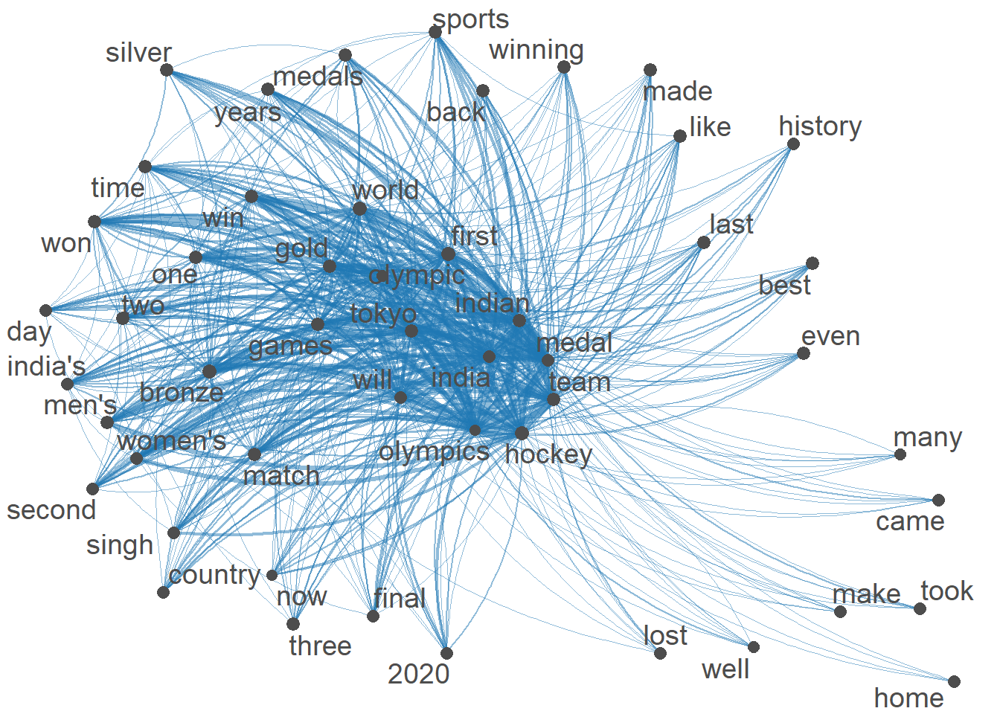
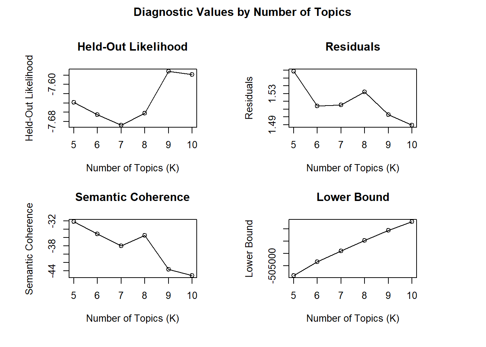
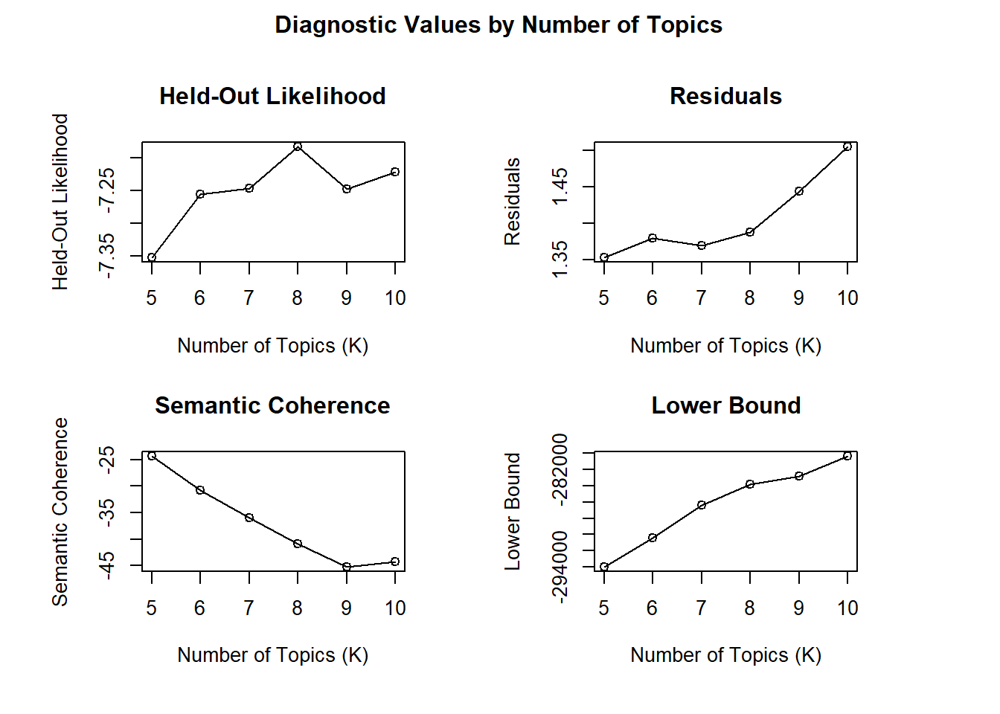
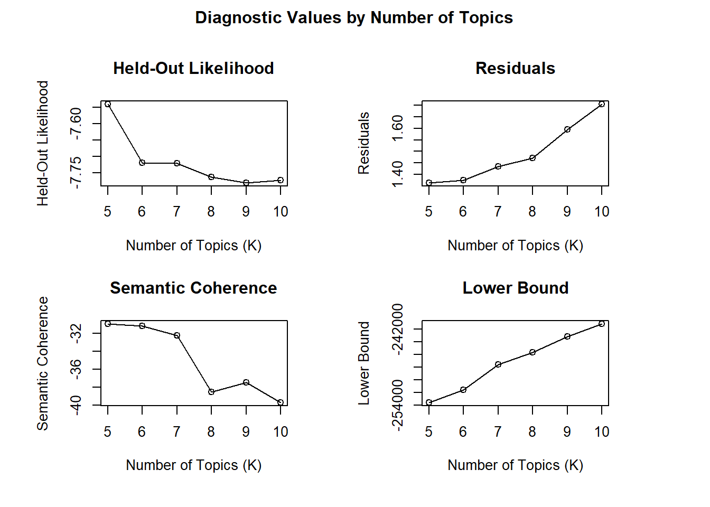

<!DOCTYPE html>
<html xmlns="http://www.w3.org/1999/xhtml" lang="en" xml:lang="en"><head>

<meta charset="utf-8">
<meta name="generator" content="quarto-1.1.251">

<meta name="viewport" content="width=device-width, initial-scale=1.0, user-scalable=yes">

<meta name="author" content="Mekhala Kumar">
<meta name="dcterms.date" content="2022-12-19">

<title>Mekhala Kumar - Topic Modelling based on Gender Corpora in Sports News</title>
<style>
code{white-space: pre-wrap;}
span.smallcaps{font-variant: small-caps;}
div.columns{display: flex; gap: min(4vw, 1.5em);}
div.column{flex: auto; overflow-x: auto;}
div.hanging-indent{margin-left: 1.5em; text-indent: -1.5em;}
ul.task-list{list-style: none;}
ul.task-list li input[type="checkbox"] {
  width: 0.8em;
  margin: 0 0.8em 0.2em -1.6em;
  vertical-align: middle;
}
pre > code.sourceCode { white-space: pre; position: relative; }
pre > code.sourceCode > span { display: inline-block; line-height: 1.25; }
pre > code.sourceCode > span:empty { height: 1.2em; }
.sourceCode { overflow: visible; }
code.sourceCode > span { color: inherit; text-decoration: inherit; }
div.sourceCode { margin: 1em 0; }
pre.sourceCode { margin: 0; }
@media screen {
div.sourceCode { overflow: auto; }
}
@media print {
pre > code.sourceCode { white-space: pre-wrap; }
pre > code.sourceCode > span { text-indent: -5em; padding-left: 5em; }
}
pre.numberSource code
  { counter-reset: source-line 0; }
pre.numberSource code > span
  { position: relative; left: -4em; counter-increment: source-line; }
pre.numberSource code > span > a:first-child::before
  { content: counter(source-line);
    position: relative; left: -1em; text-align: right; vertical-align: baseline;
    border: none; display: inline-block;
    -webkit-touch-callout: none; -webkit-user-select: none;
    -khtml-user-select: none; -moz-user-select: none;
    -ms-user-select: none; user-select: none;
    padding: 0 4px; width: 4em;
    color: #aaaaaa;
  }
pre.numberSource { margin-left: 3em; border-left: 1px solid #aaaaaa;  padding-left: 4px; }
div.sourceCode
  {   }
@media screen {
pre > code.sourceCode > span > a:first-child::before { text-decoration: underline; }
}
code span.al { color: #ff0000; font-weight: bold; } /* Alert */
code span.an { color: #60a0b0; font-weight: bold; font-style: italic; } /* Annotation */
code span.at { color: #7d9029; } /* Attribute */
code span.bn { color: #40a070; } /* BaseN */
code span.bu { color: #008000; } /* BuiltIn */
code span.cf { color: #007020; font-weight: bold; } /* ControlFlow */
code span.ch { color: #4070a0; } /* Char */
code span.cn { color: #880000; } /* Constant */
code span.co { color: #60a0b0; font-style: italic; } /* Comment */
code span.cv { color: #60a0b0; font-weight: bold; font-style: italic; } /* CommentVar */
code span.do { color: #ba2121; font-style: italic; } /* Documentation */
code span.dt { color: #902000; } /* DataType */
code span.dv { color: #40a070; } /* DecVal */
code span.er { color: #ff0000; font-weight: bold; } /* Error */
code span.ex { } /* Extension */
code span.fl { color: #40a070; } /* Float */
code span.fu { color: #06287e; } /* Function */
code span.im { color: #008000; font-weight: bold; } /* Import */
code span.in { color: #60a0b0; font-weight: bold; font-style: italic; } /* Information */
code span.kw { color: #007020; font-weight: bold; } /* Keyword */
code span.op { color: #666666; } /* Operator */
code span.ot { color: #007020; } /* Other */
code span.pp { color: #bc7a00; } /* Preprocessor */
code span.sc { color: #4070a0; } /* SpecialChar */
code span.ss { color: #bb6688; } /* SpecialString */
code span.st { color: #4070a0; } /* String */
code span.va { color: #19177c; } /* Variable */
code span.vs { color: #4070a0; } /* VerbatimString */
code span.wa { color: #60a0b0; font-weight: bold; font-style: italic; } /* Warning */
</style>


<script src="../site_libs/quarto-nav/quarto-nav.js"></script>
<script src="../site_libs/quarto-nav/headroom.min.js"></script>
<script src="../site_libs/clipboard/clipboard.min.js"></script>
<script src="../site_libs/quarto-search/autocomplete.umd.js"></script>
<script src="../site_libs/quarto-search/fuse.min.js"></script>
<script src="../site_libs/quarto-search/quarto-search.js"></script>
<meta name="quarto:offset" content="../">
<script src="../site_libs/quarto-html/quarto.js"></script>
<script src="../site_libs/quarto-html/popper.min.js"></script>
<script src="../site_libs/quarto-html/tippy.umd.min.js"></script>
<script src="../site_libs/quarto-html/anchor.min.js"></script>
<link href="../site_libs/quarto-html/tippy.css" rel="stylesheet">
<link href="../site_libs/quarto-html/quarto-syntax-highlighting.css" rel="stylesheet" id="quarto-text-highlighting-styles">
<script src="../site_libs/bootstrap/bootstrap.min.js"></script>
<link href="../site_libs/bootstrap/bootstrap-icons.css" rel="stylesheet">
<link href="../site_libs/bootstrap/bootstrap.min.css" rel="stylesheet" id="quarto-bootstrap" data-mode="light">
<script id="quarto-search-options" type="application/json">{
  "location": "navbar",
  "copy-button": false,
  "collapse-after": 3,
  "panel-placement": "end",
  "type": "overlay",
  "limit": 20,
  "language": {
    "search-no-results-text": "No results",
    "search-matching-documents-text": "matching documents",
    "search-copy-link-title": "Copy link to search",
    "search-hide-matches-text": "Hide additional matches",
    "search-more-match-text": "more match in this document",
    "search-more-matches-text": "more matches in this document",
    "search-clear-button-title": "Clear",
    "search-detached-cancel-button-title": "Cancel",
    "search-submit-button-title": "Submit"
  }
}</script>


<link rel="stylesheet" href="../styles.css">
</head>

<body class="nav-fixed">

<div id="quarto-search-results"></div>
  <header id="quarto-header" class="headroom fixed-top">
    <nav class="navbar navbar-expand-lg navbar-dark ">
      <div class="navbar-container container-fluid">
      <div class="navbar-brand-container">
    <a class="navbar-brand" href="../index.html">
    <span class="navbar-title">Mekhala Kumar</span>
    </a>
  </div>
          <button class="navbar-toggler" type="button" data-bs-toggle="collapse" data-bs-target="#navbarCollapse" aria-controls="navbarCollapse" aria-expanded="false" aria-label="Toggle navigation" onclick="if (window.quartoToggleHeadroom) { window.quartoToggleHeadroom(); }">
  <span class="navbar-toggler-icon"></span>
</button>
          <div class="collapse navbar-collapse" id="navbarCollapse">
            <ul class="navbar-nav navbar-nav-scroll me-auto">
  <li class="nav-item">
    <a class="nav-link" href="../index.html">Home</a>
  </li>  
  <li class="nav-item">
    <a class="nav-link" href="../ProjectsinR.html">Projects in R</a>
  </li>  
</ul>
              <div id="quarto-search" class="" title="Search"></div>
          </div> <!-- /navcollapse -->
      </div> <!-- /container-fluid -->
    </nav>
</header>
<!-- content -->
<div id="quarto-content" class="quarto-container page-columns page-rows-contents page-layout-article page-navbar">
<!-- sidebar -->
<!-- margin-sidebar -->
    <div id="quarto-margin-sidebar" class="sidebar margin-sidebar">
        <nav id="TOC" role="doc-toc" class="toc-active">
    <h2 id="toc-title">On this page</h2>
   
  <ul>
  <li><a href="#introduction" id="toc-introduction" class="nav-link active" data-scroll-target="#introduction">Introduction</a></li>
  <li><a href="#data-used-in-the-project" id="toc-data-used-in-the-project" class="nav-link" data-scroll-target="#data-used-in-the-project">Data used in the project</a></li>
  <li><a href="#methodology" id="toc-methodology" class="nav-link" data-scroll-target="#methodology">Methodology</a>
  <ul class="collapse">
  <li><a href="#semantic-network" id="toc-semantic-network" class="nav-link" data-scroll-target="#semantic-network">Semantic Network</a></li>
  <li><a href="#reading-in-the-files-for-the-lda-topic-models" id="toc-reading-in-the-files-for-the-lda-topic-models" class="nav-link" data-scroll-target="#reading-in-the-files-for-the-lda-topic-models">Reading in the files for the LDA topic models</a></li>
  <li><a href="#preprocessing-for-each-corpora" id="toc-preprocessing-for-each-corpora" class="nav-link" data-scroll-target="#preprocessing-for-each-corpora">Preprocessing for each corpora</a>
  <ul class="collapse">
  <li><a href="#womens-corpora" id="toc-womens-corpora" class="nav-link" data-scroll-target="#womens-corpora">Women’s corpora</a></li>
  <li><a href="#mens-corpora" id="toc-mens-corpora" class="nav-link" data-scroll-target="#mens-corpora">Men’s corpora</a></li>
  <li><a href="#both-men-and-women" id="toc-both-men-and-women" class="nav-link" data-scroll-target="#both-men-and-women">Both men and women</a></li>
  <li><a href="#creating-document-feature-matrices" id="toc-creating-document-feature-matrices" class="nav-link" data-scroll-target="#creating-document-feature-matrices">Creating document feature matrices</a></li>
  </ul></li>
  <li><a href="#search-k-for-each-corpora" id="toc-search-k-for-each-corpora" class="nav-link" data-scroll-target="#search-k-for-each-corpora">Search k for each corpora</a>
  <ul class="collapse">
  <li><a href="#for-men" id="toc-for-men" class="nav-link" data-scroll-target="#for-men">For men</a></li>
  <li><a href="#for-both" id="toc-for-both" class="nav-link" data-scroll-target="#for-both">For both</a></li>
  </ul></li>
  </ul></li>
  <li><a href="#interpretation-of-the-models" id="toc-interpretation-of-the-models" class="nav-link" data-scroll-target="#interpretation-of-the-models">Interpretation of the models</a></li>
  <li><a href="#lda-models" id="toc-lda-models" class="nav-link" data-scroll-target="#lda-models">LDA models</a>
  <ul class="collapse">
  <li><a href="#topic-models-for-womens-corpora" id="toc-topic-models-for-womens-corpora" class="nav-link" data-scroll-target="#topic-models-for-womens-corpora">Topic models for women’s corpora</a></li>
  <li><a href="#topic-models-for-mens-corpora" id="toc-topic-models-for-mens-corpora" class="nav-link" data-scroll-target="#topic-models-for-mens-corpora">Topic models for men’s corpora</a></li>
  <li><a href="#topic-models-for-corpora-with-both-men-and-women" id="toc-topic-models-for-corpora-with-both-men-and-women" class="nav-link" data-scroll-target="#topic-models-for-corpora-with-both-men-and-women">Topic models for corpora with both men and women</a></li>
  </ul></li>
  <li><a href="#conclusion" id="toc-conclusion" class="nav-link" data-scroll-target="#conclusion">Conclusion</a></li>
  <li><a href="#references" id="toc-references" class="nav-link" data-scroll-target="#references">References</a></li>
  </ul>
</nav>
    </div>
<!-- main -->
<main class="content" id="quarto-document-content">

<header id="title-block-header" class="quarto-title-block default">
<div class="quarto-title">
<div class="quarto-title-block"><div><h1 class="title">Topic Modelling based on Gender Corpora in Sports News</h1><button type="button" class="btn code-tools-button" id="quarto-code-tools-source"><i class="bi"></i> Code</button></div></div>
  <div class="quarto-categories">
    <div class="quarto-category">MekhalaKumar</div>
    <div class="quarto-category">Olympics2020</div>
    <div class="quarto-category">GenderandSports</div>
    <div class="quarto-category">LDATopicModelling</div>
    <div class="quarto-category">BlogPost6</div>
  </div>
  </div>


<div class="quarto-title-meta">

    <div>
    <div class="quarto-title-meta-heading">Author</div>
    <div class="quarto-title-meta-contents">
             <p>Mekhala Kumar </p>
          </div>
  </div>
    
    <div>
    <div class="quarto-title-meta-heading">Published</div>
    <div class="quarto-title-meta-contents">
      <p class="date">December 19, 2022</p>
    </div>
  </div>
    
  </div>
  

</header>

<div class="cell">
<div class="sourceCode cell-code" id="cb1"><pre class="sourceCode r code-with-copy"><code class="sourceCode r"><span id="cb1-1"><a href="#cb1-1" aria-hidden="true" tabindex="-1"></a><span class="fu">library</span>(tidyverse)</span>
<span id="cb1-2"><a href="#cb1-2" aria-hidden="true" tabindex="-1"></a><span class="fu">library</span>(quanteda)</span>
<span id="cb1-3"><a href="#cb1-3" aria-hidden="true" tabindex="-1"></a><span class="fu">library</span>(readtext)</span>
<span id="cb1-4"><a href="#cb1-4" aria-hidden="true" tabindex="-1"></a><span class="fu">library</span>(striprtf)</span>
<span id="cb1-5"><a href="#cb1-5" aria-hidden="true" tabindex="-1"></a><span class="fu">library</span>(corpustools)</span>
<span id="cb1-6"><a href="#cb1-6" aria-hidden="true" tabindex="-1"></a><span class="fu">library</span>(quanteda.textplots)</span>
<span id="cb1-7"><a href="#cb1-7" aria-hidden="true" tabindex="-1"></a><span class="fu">library</span>(readr)</span>
<span id="cb1-8"><a href="#cb1-8" aria-hidden="true" tabindex="-1"></a><span class="fu">library</span>(topicmodels)</span>
<span id="cb1-9"><a href="#cb1-9" aria-hidden="true" tabindex="-1"></a><span class="fu">library</span>(tidytext)</span>
<span id="cb1-10"><a href="#cb1-10" aria-hidden="true" tabindex="-1"></a><span class="fu">library</span>(dplyr)</span>
<span id="cb1-11"><a href="#cb1-11" aria-hidden="true" tabindex="-1"></a><span class="fu">library</span>(ggplot2)</span>
<span id="cb1-12"><a href="#cb1-12" aria-hidden="true" tabindex="-1"></a><span class="fu">library</span>(plotly)</span>
<span id="cb1-13"><a href="#cb1-13" aria-hidden="true" tabindex="-1"></a><span class="fu">library</span>(tidyr)</span>
<span id="cb1-14"><a href="#cb1-14" aria-hidden="true" tabindex="-1"></a><span class="fu">library</span>(tm)</span>
<span id="cb1-15"><a href="#cb1-15" aria-hidden="true" tabindex="-1"></a><span class="fu">library</span>(stm)</span></code><button title="Copy to Clipboard" class="code-copy-button"><i class="bi"></i></button></pre></div>
</div>
<section id="introduction" class="level1">
<h1>Introduction</h1>
<p>Newspapers often reflect the gender biases and gender roles in society. Rao and Taboada found that English Canadian newspapers quote women more often in the Lifestyle, Entertainment, Arts and Healthcare categories and men more often in the Business, Sports and United States Politics (2021). Even within a field such as sports, the details of the sports events are provided for articles about men’s sports while in women’s sports articles, only women’s achievements are focused upon. Similarly, Devinney et al.&nbsp;studied Mainstream English news articles, Mainstream Swedish articles and LGBTQ+ web content and found that feminine topics were linked to the private sphere and masculine topics were linked to the public sphere (2020).</p>
<p><strong>Research aim : To understand whether there was a difference in the way Indian newspapers reported women’s and men’s sports during the Tokyo Olympics held in 2021.</strong></p>
</section>
<section id="data-used-in-the-project" class="level1">
<h1>Data used in the project</h1>
<p>The LexisNexis database was used to collect articles from July 22 to August 9, 2021 (the time when the 2021 Olympics were held).<br>
The data included articles from Hindustan Times, Times of India (Electronic Edition), Free Press Journal (India), The Telegraph (India), Indian Express, Mint, DNA, India Today Online, The Hindu and Economic Times (E-Paper Edition).<br>
The key word searched was Olympics and filters including Men’s Sports, Women’s Sports, Sports Awards, Sports &amp; Recreation, India and Newspapers were used.</p>
</section>
<section id="methodology" class="level1">
<h1>Methodology</h1>
<p>The quanteda package was used for preprocessing. The corpora used were either the entire set of files or a subset depending on the model used. Punctuation and stopwords were removed from the corpora. Additionally, words such as Olympics, India and Tokyo were removed to derive more meaningful results.<br>
Structural Topic Modelling and LDA Topic Modelling were employed using the stm and topicmodels packages respectively. For this, subsets of the dataset were utilised to create corpora. These corpora were made using the metadata which had classification tags such as sports, women’s sports and men’s sports. The articles were categorised as men’s sports, women’s sports or both.<br>
For structural topic modelling, the corpus had 468 articles. However, the structural topic model did not produce anything insightful because it provided the information that women who played particular sports are mentioned more often in the women’s section and vice versa. The terms used to describe the events were not present when the model was run.<br>
Hence, the final model included Latent Dirichlet Allocation (LDA) topic models for the corpora separately by gender. Additionally there was one corpus used which included articles that included both the tags of women’s and men’s sports.<br>
There were 191 articles in the men’s sports corpora, 277 articles in the women’s sports corpora and 148 articles in the corpora which had both men’s and women’s sports’ articles.<br>
For the LDA topic models and structural topic models, the search_K() function was used to determine the optimal number of topics.</p>
<section id="semantic-network" class="level2">
<h2 class="anchored" data-anchor-id="semantic-network">Semantic Network</h2>
<p>The semantic network displayed here was made using 1128 articles.<br>
I limited the document feature matrix to terms that appeared a least 15 times and in 25% of the documents. This consisted of 50 terms which I plotted.<br>
Unsurprisingly, this shows that most of the articles discuss India in the Olympics (as Indian newspaper articles were used). One major theme that can be observed is the discussion of the hockey team- the men’s team had placed third in over four decades hence marking history and was led by the captain Manpreet Singh. Other significant terms include medals and medal colours perhaps pertaining to victories by other Indian athletes; which are more clearly observed through the LDA topic models in the following sections.</p>
<div class="cell">
<div class="sourceCode cell-code" id="cb2"><pre class="sourceCode r code-with-copy"><code class="sourceCode r"><span id="cb2-1"><a href="#cb2-1" aria-hidden="true" tabindex="-1"></a>articles_dfm<span class="ot">&lt;-</span><span class="fu">readRDS</span>(<span class="at">file =</span> <span class="st">"_data/News_DFMForSemNet.rds"</span>)</span></code><button title="Copy to Clipboard" class="code-copy-button"><i class="bi"></i></button></pre></div>
</div>
<div class="cell">
<div class="sourceCode cell-code" id="cb3"><pre class="sourceCode r code-with-copy"><code class="sourceCode r"><span id="cb3-1"><a href="#cb3-1" aria-hidden="true" tabindex="-1"></a>dfm_refined <span class="ot">&lt;-</span> <span class="fu">dfm_trim</span>(articles_dfm, <span class="at">min_termfreq =</span> <span class="dv">15</span>)</span>
<span id="cb3-2"><a href="#cb3-2" aria-hidden="true" tabindex="-1"></a>dfm_refined <span class="ot">&lt;-</span> <span class="fu">dfm_trim</span>(dfm_refined, <span class="at">min_docfreq =</span> .<span class="dv">25</span>, <span class="at">docfreq_type =</span> <span class="st">"prop"</span>)</span>
<span id="cb3-3"><a href="#cb3-3" aria-hidden="true" tabindex="-1"></a></span>
<span id="cb3-4"><a href="#cb3-4" aria-hidden="true" tabindex="-1"></a>fcm<span class="ot">&lt;-</span> <span class="fu">fcm</span>(dfm_refined)</span>
<span id="cb3-5"><a href="#cb3-5" aria-hidden="true" tabindex="-1"></a><span class="fu">dim</span>(fcm)</span></code><button title="Copy to Clipboard" class="code-copy-button"><i class="bi"></i></button></pre></div>
<div class="cell-output cell-output-stdout">
<pre><code>[1] 50 50</code></pre>
</div>
<div class="sourceCode cell-code" id="cb5"><pre class="sourceCode r code-with-copy"><code class="sourceCode r"><span id="cb5-1"><a href="#cb5-1" aria-hidden="true" tabindex="-1"></a>top_features <span class="ot">&lt;-</span> <span class="fu">names</span>(<span class="fu">topfeatures</span>(fcm,<span class="dv">50</span>))</span>
<span id="cb5-2"><a href="#cb5-2" aria-hidden="true" tabindex="-1"></a>fcm_refined <span class="ot">&lt;-</span> <span class="fu">fcm_select</span>(fcm, <span class="at">pattern =</span> top_features, <span class="at">selection =</span> <span class="st">"keep"</span>)</span>
<span id="cb5-3"><a href="#cb5-3" aria-hidden="true" tabindex="-1"></a><span class="fu">dim</span>(fcm_refined)</span></code><button title="Copy to Clipboard" class="code-copy-button"><i class="bi"></i></button></pre></div>
<div class="cell-output cell-output-stdout">
<pre><code>[1] 50 50</code></pre>
</div>
<div class="sourceCode cell-code" id="cb7"><pre class="sourceCode r code-with-copy"><code class="sourceCode r"><span id="cb7-1"><a href="#cb7-1" aria-hidden="true" tabindex="-1"></a>size <span class="ot">&lt;-</span> <span class="fu">log</span>(<span class="fu">colSums</span>(fcm_refined))</span>
<span id="cb7-2"><a href="#cb7-2" aria-hidden="true" tabindex="-1"></a><span class="fu">textplot_network</span>(fcm_refined, <span class="at">vertex_size =</span> size <span class="sc">/</span> <span class="fu">max</span>(size) <span class="sc">*</span> <span class="dv">3</span>)</span></code><button title="Copy to Clipboard" class="code-copy-button"><i class="bi"></i></button></pre></div>
<div class="cell-output-display">
<p></p>
</div>
</div>
</section>
<section id="reading-in-the-files-for-the-lda-topic-models" class="level2">
<h2 class="anchored" data-anchor-id="reading-in-the-files-for-the-lda-topic-models">Reading in the files for the LDA topic models</h2>
<div class="cell">
<div class="sourceCode cell-code" id="cb8"><pre class="sourceCode r code-with-copy"><code class="sourceCode r"><span id="cb8-1"><a href="#cb8-1" aria-hidden="true" tabindex="-1"></a>df_All<span class="ot">&lt;-</span><span class="fu">readRDS</span>(<span class="at">file =</span> <span class="st">"_data/FilesClassificationNoDuplicates.rds"</span>)</span>
<span id="cb8-2"><a href="#cb8-2" aria-hidden="true" tabindex="-1"></a>df_All<span class="ot">&lt;-</span>df_All <span class="sc">%&gt;%</span> <span class="fu">distinct</span>(body, <span class="at">.keep_all =</span> <span class="cn">TRUE</span>)</span></code><button title="Copy to Clipboard" class="code-copy-button"><i class="bi"></i></button></pre></div>
</div>
<div class="cell">
<div class="sourceCode cell-code" id="cb9"><pre class="sourceCode r code-with-copy"><code class="sourceCode r"><span id="cb9-1"><a href="#cb9-1" aria-hidden="true" tabindex="-1"></a>df_3<span class="ot">&lt;-</span>df_All<span class="sc">%&gt;%</span><span class="fu">split</span>(df_All<span class="sc">$</span>Classification)</span>
<span id="cb9-2"><a href="#cb9-2" aria-hidden="true" tabindex="-1"></a>df_Men<span class="ot">&lt;-</span>df_3<span class="sc">$</span>Men</span>
<span id="cb9-3"><a href="#cb9-3" aria-hidden="true" tabindex="-1"></a><span class="fu">dim</span>(df_Men)</span></code><button title="Copy to Clipboard" class="code-copy-button"><i class="bi"></i></button></pre></div>
<div class="cell-output cell-output-stdout">
<pre><code>[1] 191   4</code></pre>
</div>
<div class="sourceCode cell-code" id="cb11"><pre class="sourceCode r code-with-copy"><code class="sourceCode r"><span id="cb11-1"><a href="#cb11-1" aria-hidden="true" tabindex="-1"></a>df_Women<span class="ot">&lt;-</span>df_3<span class="sc">$</span>Women</span>
<span id="cb11-2"><a href="#cb11-2" aria-hidden="true" tabindex="-1"></a><span class="fu">dim</span>(df_Women)</span></code><button title="Copy to Clipboard" class="code-copy-button"><i class="bi"></i></button></pre></div>
<div class="cell-output cell-output-stdout">
<pre><code>[1] 277   4</code></pre>
</div>
<div class="sourceCode cell-code" id="cb13"><pre class="sourceCode r code-with-copy"><code class="sourceCode r"><span id="cb13-1"><a href="#cb13-1" aria-hidden="true" tabindex="-1"></a>df_Both<span class="ot">&lt;-</span>df_3<span class="sc">$</span>MenAndWomen</span>
<span id="cb13-2"><a href="#cb13-2" aria-hidden="true" tabindex="-1"></a><span class="fu">dim</span>(df_Both)</span></code><button title="Copy to Clipboard" class="code-copy-button"><i class="bi"></i></button></pre></div>
<div class="cell-output cell-output-stdout">
<pre><code>[1] 148   4</code></pre>
</div>
</div>
</section>
<section id="preprocessing-for-each-corpora" class="level2">
<h2 class="anchored" data-anchor-id="preprocessing-for-each-corpora">Preprocessing for each corpora</h2>
<p>Since the dataset was divided into 3 parts to be analysed separately, preprocessing for each part had to be conducted. Each dataframe was converted into a corpus and there was a check for metadata. After this, tokens were created, and punctuation and stopwords were removed.</p>
<section id="womens-corpora" class="level3">
<h3 class="anchored" data-anchor-id="womens-corpora">Women’s corpora</h3>
<div class="cell">
<div class="sourceCode cell-code" id="cb15"><pre class="sourceCode r code-with-copy"><code class="sourceCode r"><span id="cb15-1"><a href="#cb15-1" aria-hidden="true" tabindex="-1"></a>corpus_w <span class="ot">&lt;-</span> <span class="fu">corpus</span>(df_Women,<span class="at">text_field =</span> <span class="st">"body"</span>)</span>
<span id="cb15-2"><a href="#cb15-2" aria-hidden="true" tabindex="-1"></a><span class="fu">head</span>(corpus_w)</span></code><button title="Copy to Clipboard" class="code-copy-button"><i class="bi"></i></button></pre></div>
<div class="cell-output cell-output-stdout">
<pre><code>Corpus consisting of 6 documents and 3 docvars.
text1 :
" From a solitary two-day fixture between Great Britain and F..."

text2 :
" Tokyo Olympics Day 10 Full Schedule: Kamalpreet Kaur stunne..."

text3 :
" Haryana CM Manohar Lal Khattar has announced Rs.50 lakh cas..."

text4 :
" India's quest for another medal will continue on Day 8 of t..."

text5 :
" India vs Argentina Women's Hockey Semifinal Match Live Stre..."

text6 :
" India would fancy their chances of a medal finish as they g..."</code></pre>
</div>
<div class="sourceCode cell-code" id="cb17"><pre class="sourceCode r code-with-copy"><code class="sourceCode r"><span id="cb17-1"><a href="#cb17-1" aria-hidden="true" tabindex="-1"></a>corpus_w_summary <span class="ot">&lt;-</span> <span class="fu">summary</span>(corpus_w)</span>
<span id="cb17-2"><a href="#cb17-2" aria-hidden="true" tabindex="-1"></a><span class="fu">head</span>(corpus_w_summary)</span></code><button title="Copy to Clipboard" class="code-copy-button"><i class="bi"></i></button></pre></div>
<div class="cell-output cell-output-stdout">
<pre><code>   Text Types Tokens Sentences       newspaper            date Classification
1 text1   260    542        22 Hindustan Times August 9, 2021           Women
2 text2   106    220         5 Hindustan Times August 2, 2021           Women
3 text3   126    298        12 Hindustan Times August 7, 2021           Women
4 text4   168    326         5 Hindustan Times  July 31, 2021           Women
5 text5   104    292        12 Hindustan Times August 4, 2021           Women
6 text6   196    393         6 Hindustan Times  July 30, 2021           Women</code></pre>
</div>
<div class="sourceCode cell-code" id="cb19"><pre class="sourceCode r code-with-copy"><code class="sourceCode r"><span id="cb19-1"><a href="#cb19-1" aria-hidden="true" tabindex="-1"></a><span class="co">#corpus_w_summary$Tokens</span></span>
<span id="cb19-2"><a href="#cb19-2" aria-hidden="true" tabindex="-1"></a><span class="co">#docvars(corpus_w)</span></span>
<span id="cb19-3"><a href="#cb19-3" aria-hidden="true" tabindex="-1"></a></span>
<span id="cb19-4"><a href="#cb19-4" aria-hidden="true" tabindex="-1"></a>corpus_w_tokens <span class="ot">&lt;-</span> <span class="fu">tokens</span>(corpus_w)</span>
<span id="cb19-5"><a href="#cb19-5" aria-hidden="true" tabindex="-1"></a><span class="fu">head</span>(corpus_w_tokens)</span></code><button title="Copy to Clipboard" class="code-copy-button"><i class="bi"></i></button></pre></div>
<div class="cell-output cell-output-stdout">
<pre><code>Tokens consisting of 6 documents and 3 docvars.
text1 :
 [1] "From"     "a"        "solitary" "two-day"  "fixture"  "between" 
 [7] "Great"    "Britain"  "and"      "France"   "in"       "the"     
[ ... and 530 more ]

text2 :
 [1] "Tokyo"      "Olympics"   "Day"        "10"         "Full"      
 [6] "Schedule"   ":"          "Kamalpreet" "Kaur"       "stunned"   
[11] "the"        "nation"    
[ ... and 208 more ]

text3 :
 [1] "Haryana"   "CM"        "Manohar"   "Lal"       "Khattar"   "has"      
 [7] "announced" "Rs"        "."         "50"        "lakh"      "cash"     
[ ... and 286 more ]

text4 :
 [1] "India's"  "quest"    "for"      "another"  "medal"    "will"    
 [7] "continue" "on"       "Day"      "8"        "of"       "the"     
[ ... and 314 more ]

text5 :
 [1] "India"     "vs"        "Argentina" "Women's"   "Hockey"    "Semifinal"
 [7] "Match"     "Live"      "Streaming" ","         "Tokyo"     "Olympics" 
[ ... and 280 more ]

text6 :
 [1] "India"   "would"   "fancy"   "their"   "chances" "of"      "a"      
 [8] "medal"   "finish"  "as"      "they"    "gear"   
[ ... and 381 more ]</code></pre>
</div>
<div class="sourceCode cell-code" id="cb21"><pre class="sourceCode r code-with-copy"><code class="sourceCode r"><span id="cb21-1"><a href="#cb21-1" aria-hidden="true" tabindex="-1"></a>corpus_w_tokens <span class="ot">&lt;-</span> <span class="fu">tokens</span>(corpus_w_tokens ,</span>
<span id="cb21-2"><a href="#cb21-2" aria-hidden="true" tabindex="-1"></a>                                    <span class="at">remove_punct =</span> T)</span>
<span id="cb21-3"><a href="#cb21-3" aria-hidden="true" tabindex="-1"></a><span class="fu">head</span>(corpus_w_tokens)</span></code><button title="Copy to Clipboard" class="code-copy-button"><i class="bi"></i></button></pre></div>
<div class="cell-output cell-output-stdout">
<pre><code>Tokens consisting of 6 documents and 3 docvars.
text1 :
 [1] "From"     "a"        "solitary" "two-day"  "fixture"  "between" 
 [7] "Great"    "Britain"  "and"      "France"   "in"       "the"     
[ ... and 464 more ]

text2 :
 [1] "Tokyo"      "Olympics"   "Day"        "10"         "Full"      
 [6] "Schedule"   "Kamalpreet" "Kaur"       "stunned"    "the"       
[11] "nation"     "with"      
[ ... and 171 more ]

text3 :
 [1] "Haryana"   "CM"        "Manohar"   "Lal"       "Khattar"   "has"      
 [7] "announced" "Rs"        "50"        "lakh"      "cash"      "award"    
[ ... and 253 more ]

text4 :
 [1] "India's"  "quest"    "for"      "another"  "medal"    "will"    
 [7] "continue" "on"       "Day"      "8"        "of"       "the"     
[ ... and 265 more ]

text5 :
 [1] "India"     "vs"        "Argentina" "Women's"   "Hockey"    "Semifinal"
 [7] "Match"     "Live"      "Streaming" "Tokyo"     "Olympics"  "Winning"  
[ ... and 249 more ]

text6 :
 [1] "India"   "would"   "fancy"   "their"   "chances" "of"      "a"      
 [8] "medal"   "finish"  "as"      "they"    "gear"   
[ ... and 317 more ]</code></pre>
</div>
<div class="sourceCode cell-code" id="cb23"><pre class="sourceCode r code-with-copy"><code class="sourceCode r"><span id="cb23-1"><a href="#cb23-1" aria-hidden="true" tabindex="-1"></a>corpus_w_tokens<span class="ot">&lt;-</span> <span class="fu">tokens_select</span>(corpus_w_tokens, </span>
<span id="cb23-2"><a href="#cb23-2" aria-hidden="true" tabindex="-1"></a>                    <span class="at">pattern =</span> <span class="fu">stopwords</span>(<span class="st">"en"</span>),</span>
<span id="cb23-3"><a href="#cb23-3" aria-hidden="true" tabindex="-1"></a>                    <span class="at">select =</span> <span class="st">"remove"</span>)</span>
<span id="cb23-4"><a href="#cb23-4" aria-hidden="true" tabindex="-1"></a><span class="fu">head</span>(corpus_w_tokens)</span></code><button title="Copy to Clipboard" class="code-copy-button"><i class="bi"></i></button></pre></div>
<div class="cell-output cell-output-stdout">
<pre><code>Tokens consisting of 6 documents and 3 docvars.
text1 :
 [1] "solitary"  "two-day"   "fixture"   "Great"     "Britain"   "France"   
 [7] "1900"      "Olympics"  "prospects" "cricket's" "inclusion" "8-team"   
[ ... and 271 more ]

text2 :
 [1] "Tokyo"      "Olympics"   "Day"        "10"         "Full"      
 [6] "Schedule"   "Kamalpreet" "Kaur"       "stunned"    "nation"    
[11] "64m"        "throw"     
[ ... and 138 more ]

text3 :
 [1] "Haryana"   "CM"        "Manohar"   "Lal"       "Khattar"   "announced"
 [7] "Rs"        "50"        "lakh"      "cash"      "award"     "every"    
[ ... and 155 more ]

text4 :
 [1] "India's"  "quest"    "another"  "medal"    "will"     "continue"
 [7] "Day"      "8"        "Tokyo"    "Olympics" "ace"      "shuttler"
[ ... and 207 more ]

text5 :
 [1] "India"     "vs"        "Argentina" "Women's"   "Hockey"    "Semifinal"
 [7] "Match"     "Live"      "Streaming" "Tokyo"     "Olympics"  "Winning"  
[ ... and 185 more ]

text6 :
 [1] "India"    "fancy"    "chances"  "medal"    "finish"   "gear"    
 [7] "Day"      "7"        "Tokyo"    "Olympics" "eyes"     "archer"  
[ ... and 251 more ]</code></pre>
</div>
</div>
</section>
<section id="mens-corpora" class="level3">
<h3 class="anchored" data-anchor-id="mens-corpora">Men’s corpora</h3>
<div class="cell">
<div class="sourceCode cell-code" id="cb25"><pre class="sourceCode r code-with-copy"><code class="sourceCode r"><span id="cb25-1"><a href="#cb25-1" aria-hidden="true" tabindex="-1"></a>corpus_m <span class="ot">&lt;-</span> <span class="fu">corpus</span>(df_Men,<span class="at">text_field =</span> <span class="st">"body"</span>)</span>
<span id="cb25-2"><a href="#cb25-2" aria-hidden="true" tabindex="-1"></a><span class="fu">head</span>(corpus_m)</span></code><button title="Copy to Clipboard" class="code-copy-button"><i class="bi"></i></button></pre></div>
<div class="cell-output cell-output-stdout">
<pre><code>Corpus consisting of 6 documents and 3 docvars.
text1 :
" India's 41-year-long wait for an Olympic medal in hockey ca..."

text2 :
" The Board of Control for Cricket in India (BCCI) on Saturda..."

text3 :
" Indian athletes who won laurels for the nation at Tokyo Oly..."

text4 :
" India vs Belgium Hockey Match Live Streaming, Tokyo Olympic..."

text5 :
" India vs Germany Hockey Match Live Streaming, Tokyo Olympic..."

text6 :
" Indian men's hockey team on Sunday defeated Great Britain i..."</code></pre>
</div>
<div class="sourceCode cell-code" id="cb27"><pre class="sourceCode r code-with-copy"><code class="sourceCode r"><span id="cb27-1"><a href="#cb27-1" aria-hidden="true" tabindex="-1"></a>corpus_m_summary <span class="ot">&lt;-</span> <span class="fu">summary</span>(corpus_m)</span>
<span id="cb27-2"><a href="#cb27-2" aria-hidden="true" tabindex="-1"></a><span class="fu">head</span>(corpus_m_summary)</span></code><button title="Copy to Clipboard" class="code-copy-button"><i class="bi"></i></button></pre></div>
<div class="cell-output cell-output-stdout">
<pre><code>   Text Types Tokens Sentences       newspaper            date Classification
1 text1   206    547        22 Hindustan Times August 5, 2021             Men
2 text2   156    299        12 Hindustan Times August 7, 2021             Men
3 text3   290    644        29            MINT August 9, 2021             Men
4 text4   117    289        12 Hindustan Times August 2, 2021             Men
5 text5   120    300        12 Hindustan Times August 5, 2021             Men
6 text6   234    522        26            MINT August 1, 2021             Men</code></pre>
</div>
<div class="sourceCode cell-code" id="cb29"><pre class="sourceCode r code-with-copy"><code class="sourceCode r"><span id="cb29-1"><a href="#cb29-1" aria-hidden="true" tabindex="-1"></a><span class="co">#corpus_m_summary$Tokens</span></span>
<span id="cb29-2"><a href="#cb29-2" aria-hidden="true" tabindex="-1"></a><span class="co">#docvars(corpus_m)</span></span>
<span id="cb29-3"><a href="#cb29-3" aria-hidden="true" tabindex="-1"></a></span>
<span id="cb29-4"><a href="#cb29-4" aria-hidden="true" tabindex="-1"></a>corpus_m_tokens <span class="ot">&lt;-</span> <span class="fu">tokens</span>(corpus_m)</span>
<span id="cb29-5"><a href="#cb29-5" aria-hidden="true" tabindex="-1"></a><span class="fu">head</span>(corpus_m_tokens)</span></code><button title="Copy to Clipboard" class="code-copy-button"><i class="bi"></i></button></pre></div>
<div class="cell-output cell-output-stdout">
<pre><code>Tokens consisting of 6 documents and 3 docvars.
text1 :
 [1] "India's"      "41-year-long" "wait"         "for"          "an"          
 [6] "Olympic"      "medal"        "in"           "hockey"       "came"        
[11] "to"           "an"          
[ ... and 535 more ]

text2 :
 [1] "The"     "Board"   "of"      "Control" "for"     "Cricket" "in"     
 [8] "India"   "("       "BCCI"    ")"       "on"     
[ ... and 287 more ]

text3 :
 [1] "Indian"   "athletes" "who"      "won"      "laurels"  "for"     
 [7] "the"      "nation"   "at"       "Tokyo"    "Olympics" "were"    
[ ... and 632 more ]

text4 :
 [1] "India"     "vs"        "Belgium"   "Hockey"    "Match"     "Live"     
 [7] "Streaming" ","         "Tokyo"     "Olympics"  "Live"      "Streaming"
[ ... and 277 more ]

text5 :
 [1] "India"     "vs"        "Germany"   "Hockey"    "Match"     "Live"     
 [7] "Streaming" ","         "Tokyo"     "Olympics"  ":"         "After"    
[ ... and 288 more ]

text6 :
 [1] "Indian"        "men's"         "hockey"        "team"         
 [5] "on"            "Sunday"        "defeated"      "Great"        
 [9] "Britain"       "in"            "the"           "quarterfinals"
[ ... and 510 more ]</code></pre>
</div>
<div class="sourceCode cell-code" id="cb31"><pre class="sourceCode r code-with-copy"><code class="sourceCode r"><span id="cb31-1"><a href="#cb31-1" aria-hidden="true" tabindex="-1"></a>corpus_m_tokens <span class="ot">&lt;-</span> <span class="fu">tokens</span>(corpus_m_tokens ,</span>
<span id="cb31-2"><a href="#cb31-2" aria-hidden="true" tabindex="-1"></a>                                    <span class="at">remove_punct =</span> T)</span>
<span id="cb31-3"><a href="#cb31-3" aria-hidden="true" tabindex="-1"></a><span class="fu">head</span>(corpus_m_tokens)</span></code><button title="Copy to Clipboard" class="code-copy-button"><i class="bi"></i></button></pre></div>
<div class="cell-output cell-output-stdout">
<pre><code>Tokens consisting of 6 documents and 3 docvars.
text1 :
 [1] "India's"      "41-year-long" "wait"         "for"          "an"          
 [6] "Olympic"      "medal"        "in"           "hockey"       "came"        
[11] "to"           "an"          
[ ... and 482 more ]

text2 :
 [1] "The"      "Board"    "of"       "Control"  "for"      "Cricket" 
 [7] "in"       "India"    "BCCI"     "on"       "Saturday" "decided" 
[ ... and 257 more ]

text3 :
 [1] "Indian"   "athletes" "who"      "won"      "laurels"  "for"     
 [7] "the"      "nation"   "at"       "Tokyo"    "Olympics" "were"    
[ ... and 551 more ]

text4 :
 [1] "India"     "vs"        "Belgium"   "Hockey"    "Match"     "Live"     
 [7] "Streaming" "Tokyo"     "Olympics"  "Live"      "Streaming" "The"      
[ ... and 245 more ]

text5 :
 [1] "India"     "vs"        "Germany"   "Hockey"    "Match"     "Live"     
 [7] "Streaming" "Tokyo"     "Olympics"  "After"     "going"     "down"     
[ ... and 262 more ]

text6 :
 [1] "Indian"        "men's"         "hockey"        "team"         
 [5] "on"            "Sunday"        "defeated"      "Great"        
 [9] "Britain"       "in"            "the"           "quarterfinals"
[ ... and 447 more ]</code></pre>
</div>
<div class="sourceCode cell-code" id="cb33"><pre class="sourceCode r code-with-copy"><code class="sourceCode r"><span id="cb33-1"><a href="#cb33-1" aria-hidden="true" tabindex="-1"></a>corpus_m_tokens<span class="ot">&lt;-</span> <span class="fu">tokens_select</span>(corpus_m_tokens, </span>
<span id="cb33-2"><a href="#cb33-2" aria-hidden="true" tabindex="-1"></a>                    <span class="at">pattern =</span> <span class="fu">stopwords</span>(<span class="st">"en"</span>),</span>
<span id="cb33-3"><a href="#cb33-3" aria-hidden="true" tabindex="-1"></a>                    <span class="at">select =</span> <span class="st">"remove"</span>)</span>
<span id="cb33-4"><a href="#cb33-4" aria-hidden="true" tabindex="-1"></a><span class="fu">head</span>(corpus_m_tokens)</span></code><button title="Copy to Clipboard" class="code-copy-button"><i class="bi"></i></button></pre></div>
<div class="cell-output cell-output-stdout">
<pre><code>Tokens consisting of 6 documents and 3 docvars.
text1 :
 [1] "India's"      "41-year-long" "wait"         "Olympic"      "medal"       
 [6] "hockey"       "came"         "end"          "Thursday"     "men's"       
[11] "hockey"       "team"        
[ ... and 290 more ]

text2 :
 [1] "Board"      "Control"    "Cricket"    "India"      "BCCI"      
 [6] "Saturday"   "decided"    "celebrate"  "India's"    "successful"
[11] "ever"       "campaign"  
[ ... and 172 more ]

text3 :
 [1] "Indian"   "athletes" "won"      "laurels"  "nation"   "Tokyo"   
 [7] "Olympics" "honoured" "grand"    "ceremony" "Delhi"    "Sport"   
[ ... and 329 more ]

text4 :
 [1] "India"     "vs"        "Belgium"   "Hockey"    "Match"     "Live"     
 [7] "Streaming" "Tokyo"     "Olympics"  "Live"      "Streaming" "stage"    
[ ... and 189 more ]

text5 :
 [1] "India"     "vs"        "Germany"   "Hockey"    "Match"     "Live"     
 [7] "Streaming" "Tokyo"     "Olympics"  "going"     "fighting"  "current"  
[ ... and 196 more ]

text6 :
 [1] "Indian"        "men's"         "hockey"        "team"         
 [5] "Sunday"        "defeated"      "Great"         "Britain"      
 [9] "quarterfinals" "3-1"           "Now"           "Indian"       
[ ... and 285 more ]</code></pre>
</div>
</div>
</section>
<section id="both-men-and-women" class="level3">
<h3 class="anchored" data-anchor-id="both-men-and-women">Both men and women</h3>
<div class="cell">
<div class="sourceCode cell-code" id="cb35"><pre class="sourceCode r code-with-copy"><code class="sourceCode r"><span id="cb35-1"><a href="#cb35-1" aria-hidden="true" tabindex="-1"></a>corpus_b <span class="ot">&lt;-</span> <span class="fu">corpus</span>(df_Both,<span class="at">text_field =</span> <span class="st">"body"</span>)</span>
<span id="cb35-2"><a href="#cb35-2" aria-hidden="true" tabindex="-1"></a><span class="fu">head</span>(corpus_b)</span></code><button title="Copy to Clipboard" class="code-copy-button"><i class="bi"></i></button></pre></div>
<div class="cell-output cell-output-stdout">
<pre><code>Corpus consisting of 6 documents and 3 docvars.
text1 :
" The Tokyo Olympics 2020 enters the fifth day which will beg..."

text2 :
" Day 5 of the Tokyo Olympics on Wednesday was a hot and cold..."

text3 :
" Day 8 of the Tokyo Olympics wasn't great in particular for ..."

text4 :
" India men's hockey team defeated Germany to win the bronze ..."

text5 :
" Neeraj Chopra on Saturday not only won gold for the country..."

text6 :
" While the Indian Men's Hockey team created history on Thurs..."</code></pre>
</div>
<div class="sourceCode cell-code" id="cb37"><pre class="sourceCode r code-with-copy"><code class="sourceCode r"><span id="cb37-1"><a href="#cb37-1" aria-hidden="true" tabindex="-1"></a>corpus_b_summary <span class="ot">&lt;-</span> <span class="fu">summary</span>(corpus_b)</span>
<span id="cb37-2"><a href="#cb37-2" aria-hidden="true" tabindex="-1"></a><span class="fu">head</span>(corpus_b_summary)</span></code><button title="Copy to Clipboard" class="code-copy-button"><i class="bi"></i></button></pre></div>
<div class="cell-output cell-output-stdout">
<pre><code>   Text Types Tokens Sentences       newspaper            date Classification
1 text1   153    305         8 Hindustan Times  July 28, 2021     MenAndWomen
2 text2   197    348         6 Hindustan Times  July 29, 2021     MenAndWomen
3 text3   166    255         8 Hindustan Times August 1, 2021     MenAndWomen
4 text4   221    431        14 Hindustan Times August 5, 2021     MenAndWomen
5 text5   216    479        20            MINT August 7, 2021     MenAndWomen
6 text6   241    522        26 Hindustan Times August 5, 2021     MenAndWomen</code></pre>
</div>
<div class="sourceCode cell-code" id="cb39"><pre class="sourceCode r code-with-copy"><code class="sourceCode r"><span id="cb39-1"><a href="#cb39-1" aria-hidden="true" tabindex="-1"></a><span class="co">#corpus_b_summary$Tokens</span></span>
<span id="cb39-2"><a href="#cb39-2" aria-hidden="true" tabindex="-1"></a><span class="co">#docvars(corpus_b)</span></span>
<span id="cb39-3"><a href="#cb39-3" aria-hidden="true" tabindex="-1"></a></span>
<span id="cb39-4"><a href="#cb39-4" aria-hidden="true" tabindex="-1"></a>corpus_b_tokens <span class="ot">&lt;-</span> <span class="fu">tokens</span>(corpus_b)</span>
<span id="cb39-5"><a href="#cb39-5" aria-hidden="true" tabindex="-1"></a><span class="fu">head</span>(corpus_b_tokens)</span></code><button title="Copy to Clipboard" class="code-copy-button"><i class="bi"></i></button></pre></div>
<div class="cell-output cell-output-stdout">
<pre><code>Tokens consisting of 6 documents and 3 docvars.
text1 :
 [1] "The"      "Tokyo"    "Olympics" "2020"     "enters"   "the"     
 [7] "fifth"    "day"      "which"    "will"     "begin"    "with"    
[ ... and 293 more ]

text2 :
 [1] "Day"       "5"         "of"        "the"       "Tokyo"     "Olympics" 
 [7] "on"        "Wednesday" "was"       "a"         "hot"       "and"      
[ ... and 336 more ]

text3 :
 [1] "Day"        "8"          "of"         "the"        "Tokyo"     
 [6] "Olympics"   "wasn't"     "great"      "in"         "particular"
[11] "for"        "India"     
[ ... and 243 more ]

text4 :
 [1] "India"    "men's"    "hockey"   "team"     "defeated" "Germany" 
 [7] "to"       "win"      "the"      "bronze"   "medal"    "at"      
[ ... and 419 more ]

text5 :
 [1] "Neeraj"   "Chopra"   "on"       "Saturday" "not"      "only"    
 [7] "won"      "gold"     "for"      "the"      "country"  ","       
[ ... and 467 more ]

text6 :
 [1] "While"    "the"      "Indian"   "Men's"    "Hockey"   "team"    
 [7] "created"  "history"  "on"       "Thursday" "by"       "winning" 
[ ... and 510 more ]</code></pre>
</div>
<div class="sourceCode cell-code" id="cb41"><pre class="sourceCode r code-with-copy"><code class="sourceCode r"><span id="cb41-1"><a href="#cb41-1" aria-hidden="true" tabindex="-1"></a>corpus_b_tokens <span class="ot">&lt;-</span> <span class="fu">tokens</span>(corpus_b_tokens ,</span>
<span id="cb41-2"><a href="#cb41-2" aria-hidden="true" tabindex="-1"></a>                                    <span class="at">remove_punct =</span> T)</span>
<span id="cb41-3"><a href="#cb41-3" aria-hidden="true" tabindex="-1"></a><span class="fu">head</span>(corpus_b_tokens)</span></code><button title="Copy to Clipboard" class="code-copy-button"><i class="bi"></i></button></pre></div>
<div class="cell-output cell-output-stdout">
<pre><code>Tokens consisting of 6 documents and 3 docvars.
text1 :
 [1] "The"      "Tokyo"    "Olympics" "2020"     "enters"   "the"     
 [7] "fifth"    "day"      "which"    "will"     "begin"    "with"    
[ ... and 255 more ]

text2 :
 [1] "Day"       "5"         "of"        "the"       "Tokyo"     "Olympics" 
 [7] "on"        "Wednesday" "was"       "a"         "hot"       "and"      
[ ... and 274 more ]

text3 :
 [1] "Day"        "8"          "of"         "the"        "Tokyo"     
 [6] "Olympics"   "wasn't"     "great"      "in"         "particular"
[11] "for"        "India"     
[ ... and 215 more ]

text4 :
 [1] "India"    "men's"    "hockey"   "team"     "defeated" "Germany" 
 [7] "to"       "win"      "the"      "bronze"   "medal"    "at"      
[ ... and 377 more ]

text5 :
 [1] "Neeraj"   "Chopra"   "on"       "Saturday" "not"      "only"    
 [7] "won"      "gold"     "for"      "the"      "country"  "but"     
[ ... and 394 more ]

text6 :
 [1] "While"    "the"      "Indian"   "Men's"    "Hockey"   "team"    
 [7] "created"  "history"  "on"       "Thursday" "by"       "winning" 
[ ... and 451 more ]</code></pre>
</div>
<div class="sourceCode cell-code" id="cb43"><pre class="sourceCode r code-with-copy"><code class="sourceCode r"><span id="cb43-1"><a href="#cb43-1" aria-hidden="true" tabindex="-1"></a>corpus_b_tokens<span class="ot">&lt;-</span> <span class="fu">tokens_select</span>(corpus_b_tokens, </span>
<span id="cb43-2"><a href="#cb43-2" aria-hidden="true" tabindex="-1"></a>                    <span class="at">pattern =</span> <span class="fu">stopwords</span>(<span class="st">"en"</span>),</span>
<span id="cb43-3"><a href="#cb43-3" aria-hidden="true" tabindex="-1"></a>                    <span class="at">select =</span> <span class="st">"remove"</span>)</span>
<span id="cb43-4"><a href="#cb43-4" aria-hidden="true" tabindex="-1"></a><span class="co">#print(corpus_b_tokens)</span></span>
<span id="cb43-5"><a href="#cb43-5" aria-hidden="true" tabindex="-1"></a><span class="fu">head</span>(corpus_b_tokens)</span></code><button title="Copy to Clipboard" class="code-copy-button"><i class="bi"></i></button></pre></div>
<div class="cell-output cell-output-stdout">
<pre><code>Tokens consisting of 6 documents and 3 docvars.
text1 :
 [1] "Tokyo"    "Olympics" "2020"     "enters"   "fifth"    "day"     
 [7] "will"     "begin"    "Indian"   "women's"  "Hockey"   "team"    
[ ... and 192 more ]

text2 :
 [1] "Day"       "5"         "Tokyo"     "Olympics"  "Wednesday" "hot"      
 [7] "cold"      "affair"    "Shuttler"  "PV"        "Sindhu"    "advanced" 
[ ... and 217 more ]

text3 :
 [1] "Day"        "8"          "Tokyo"      "Olympics"   "great"     
 [6] "particular" "India"      "top"        "guns"       "failed"    
[11] "make"       "mark"      
[ ... and 145 more ]

text4 :
 [1] "India"    "men's"    "hockey"   "team"     "defeated" "Germany" 
 [7] "win"      "bronze"   "medal"    "Tokyo"    "Olympics" "Thursday"
[ ... and 239 more ]

text5 :
 [1] "Neeraj"   "Chopra"   "Saturday" "won"      "gold"     "country" 
 [7] "also"     "helped"   "surpass"  "previous" "best"     "haul"    
[ ... and 266 more ]

text6 :
 [1] "Indian"   "Men's"    "Hockey"   "team"     "created"  "history" 
 [7] "Thursday" "winning"  "Bronze"   "medal"    "Olympics" "Germany" 
[ ... and 217 more ]</code></pre>
</div>
</div>
</section>
<section id="creating-document-feature-matrices" class="level3">
<h3 class="anchored" data-anchor-id="creating-document-feature-matrices">Creating document feature matrices</h3>
<div class="cell">
<div class="sourceCode cell-code" id="cb45"><pre class="sourceCode r code-with-copy"><code class="sourceCode r"><span id="cb45-1"><a href="#cb45-1" aria-hidden="true" tabindex="-1"></a>dfm_women <span class="ot">&lt;-</span> <span class="fu">dfm</span>(<span class="fu">tokens</span>(corpus_w_tokens))</span>
<span id="cb45-2"><a href="#cb45-2" aria-hidden="true" tabindex="-1"></a>dfm_women <span class="ot">&lt;-</span> <span class="fu">dfm_remove</span>(dfm_women, <span class="fu">c</span>(<span class="st">"said"</span>,<span class="st">"also"</span>,<span class="st">"says"</span>,<span class="st">"can"</span>,<span class="st">"just"</span>), <span class="at">verbose =</span> <span class="cn">TRUE</span>)</span></code><button title="Copy to Clipboard" class="code-copy-button"><i class="bi"></i></button></pre></div>
<div class="cell-output cell-output-stderr">
<pre><code>removed 5 features</code></pre>
</div>
<div class="sourceCode cell-code" id="cb47"><pre class="sourceCode r code-with-copy"><code class="sourceCode r"><span id="cb47-1"><a href="#cb47-1" aria-hidden="true" tabindex="-1"></a>dfm_men <span class="ot">&lt;-</span> <span class="fu">dfm</span>(<span class="fu">tokens</span>(corpus_m_tokens))</span>
<span id="cb47-2"><a href="#cb47-2" aria-hidden="true" tabindex="-1"></a>dfm_men<span class="ot">&lt;-</span> <span class="fu">dfm_remove</span>(dfm_men, <span class="fu">c</span>(<span class="st">"said"</span>,<span class="st">"also"</span>,<span class="st">"says"</span>,<span class="st">"can"</span>,<span class="st">"just"</span>), <span class="at">verbose =</span> <span class="cn">TRUE</span>)</span></code><button title="Copy to Clipboard" class="code-copy-button"><i class="bi"></i></button></pre></div>
<div class="cell-output cell-output-stderr">
<pre><code>removed 5 features</code></pre>
</div>
<div class="sourceCode cell-code" id="cb49"><pre class="sourceCode r code-with-copy"><code class="sourceCode r"><span id="cb49-1"><a href="#cb49-1" aria-hidden="true" tabindex="-1"></a>dfm_both<span class="ot">&lt;-</span> <span class="fu">dfm</span>(<span class="fu">tokens</span>(corpus_b_tokens))</span>
<span id="cb49-2"><a href="#cb49-2" aria-hidden="true" tabindex="-1"></a>dfm_both <span class="ot">&lt;-</span> <span class="fu">dfm_remove</span>(dfm_both, <span class="fu">c</span>(<span class="st">"said"</span>,<span class="st">"also"</span>,<span class="st">"says"</span>,<span class="st">"can"</span>,<span class="st">"just"</span>), <span class="at">verbose =</span> <span class="cn">TRUE</span>)</span></code><button title="Copy to Clipboard" class="code-copy-button"><i class="bi"></i></button></pre></div>
<div class="cell-output cell-output-stderr">
<pre><code>removed 5 features</code></pre>
</div>
</div>
</section>
</section>
<section id="search-k-for-each-corpora" class="level2">
<h2 class="anchored" data-anchor-id="search-k-for-each-corpora">Search k for each corpora</h2>
<p>The number of optimal topics was checked for each corpora. ### For women Based on semantic coherence, the number of topics for the women’s corpora was chosen as 9.</p>
<div class="cell">
<div class="sourceCode cell-code" id="cb51"><pre class="sourceCode r code-with-copy"><code class="sourceCode r"><span id="cb51-1"><a href="#cb51-1" aria-hidden="true" tabindex="-1"></a>diffKwomen <span class="ot">&lt;-</span> <span class="fu">searchK</span>(dfm_women,</span>
<span id="cb51-2"><a href="#cb51-2" aria-hidden="true" tabindex="-1"></a>                       <span class="at">K =</span> <span class="fu">c</span>(<span class="dv">5</span>,<span class="dv">6</span>,<span class="dv">7</span>,<span class="dv">8</span>,<span class="dv">9</span>,<span class="dv">10</span>),</span>
<span id="cb51-3"><a href="#cb51-3" aria-hidden="true" tabindex="-1"></a>                       <span class="at">N =</span> <span class="fu">floor</span>(<span class="fl">0.1</span> <span class="sc">*</span> <span class="dv">277</span>),</span>
<span id="cb51-4"><a href="#cb51-4" aria-hidden="true" tabindex="-1"></a>                       <span class="at">data =</span> df_Women,</span>
<span id="cb51-5"><a href="#cb51-5" aria-hidden="true" tabindex="-1"></a>                       <span class="at">max.em.its =</span> <span class="dv">1000</span>,</span>
<span id="cb51-6"><a href="#cb51-6" aria-hidden="true" tabindex="-1"></a>                       <span class="at">init.type =</span> <span class="st">"Spectral"</span>,</span>
<span id="cb51-7"><a href="#cb51-7" aria-hidden="true" tabindex="-1"></a>                       <span class="at">verbose=</span><span class="cn">FALSE</span>)</span>
<span id="cb51-8"><a href="#cb51-8" aria-hidden="true" tabindex="-1"></a></span>
<span id="cb51-9"><a href="#cb51-9" aria-hidden="true" tabindex="-1"></a><span class="fu">plot</span>(diffKwomen)</span></code><button title="Copy to Clipboard" class="code-copy-button"><i class="bi"></i></button></pre></div>
<div class="cell-output-display">
<p></p>
</div>
</div>
<section id="for-men" class="level3">
<h3 class="anchored" data-anchor-id="for-men">For men</h3>
<p>Based on semantic coherence, the number of topics for the men’s corpora was chosen as 7.</p>
<div class="cell">
<div class="sourceCode cell-code" id="cb52"><pre class="sourceCode r code-with-copy"><code class="sourceCode r"><span id="cb52-1"><a href="#cb52-1" aria-hidden="true" tabindex="-1"></a>diffKmen <span class="ot">&lt;-</span> <span class="fu">searchK</span>(dfm_men,</span>
<span id="cb52-2"><a href="#cb52-2" aria-hidden="true" tabindex="-1"></a>                       <span class="at">K =</span> <span class="fu">c</span>(<span class="dv">5</span>,<span class="dv">6</span>,<span class="dv">7</span>,<span class="dv">8</span>,<span class="dv">9</span>,<span class="dv">10</span>),</span>
<span id="cb52-3"><a href="#cb52-3" aria-hidden="true" tabindex="-1"></a>                       <span class="at">N =</span> <span class="fu">floor</span>(<span class="fl">0.1</span> <span class="sc">*</span> <span class="dv">191</span>),</span>
<span id="cb52-4"><a href="#cb52-4" aria-hidden="true" tabindex="-1"></a>                       <span class="at">data =</span> df_Men,</span>
<span id="cb52-5"><a href="#cb52-5" aria-hidden="true" tabindex="-1"></a>                       <span class="at">max.em.its =</span> <span class="dv">1000</span>,</span>
<span id="cb52-6"><a href="#cb52-6" aria-hidden="true" tabindex="-1"></a>                       <span class="at">init.type =</span> <span class="st">"Spectral"</span>,</span>
<span id="cb52-7"><a href="#cb52-7" aria-hidden="true" tabindex="-1"></a>                       <span class="at">verbose=</span><span class="cn">FALSE</span>)</span>
<span id="cb52-8"><a href="#cb52-8" aria-hidden="true" tabindex="-1"></a></span>
<span id="cb52-9"><a href="#cb52-9" aria-hidden="true" tabindex="-1"></a><span class="fu">plot</span>(diffKmen)</span></code><button title="Copy to Clipboard" class="code-copy-button"><i class="bi"></i></button></pre></div>
<div class="cell-output-display">
<p></p>
</div>
</div>
</section>
<section id="for-both" class="level3">
<h3 class="anchored" data-anchor-id="for-both">For both</h3>
<p>Based on semantic coherence, the number of topics for the corpora with both men’s and women’s articles was chosen as 8.</p>
<div class="cell">
<div class="sourceCode cell-code" id="cb53"><pre class="sourceCode r code-with-copy"><code class="sourceCode r"><span id="cb53-1"><a href="#cb53-1" aria-hidden="true" tabindex="-1"></a>diffKboth <span class="ot">&lt;-</span> <span class="fu">searchK</span>(dfm_both,</span>
<span id="cb53-2"><a href="#cb53-2" aria-hidden="true" tabindex="-1"></a>                       <span class="at">K =</span> <span class="fu">c</span>(<span class="dv">5</span>,<span class="dv">6</span>,<span class="dv">7</span>,<span class="dv">8</span>,<span class="dv">9</span>,<span class="dv">10</span>),</span>
<span id="cb53-3"><a href="#cb53-3" aria-hidden="true" tabindex="-1"></a>                       <span class="at">N =</span> <span class="fu">floor</span>(<span class="fl">0.1</span> <span class="sc">*</span> <span class="dv">148</span>),</span>
<span id="cb53-4"><a href="#cb53-4" aria-hidden="true" tabindex="-1"></a>                       <span class="at">data =</span> df_Both,</span>
<span id="cb53-5"><a href="#cb53-5" aria-hidden="true" tabindex="-1"></a>                       <span class="at">max.em.its =</span> <span class="dv">1000</span>,</span>
<span id="cb53-6"><a href="#cb53-6" aria-hidden="true" tabindex="-1"></a>                       <span class="at">init.type =</span> <span class="st">"Spectral"</span>,</span>
<span id="cb53-7"><a href="#cb53-7" aria-hidden="true" tabindex="-1"></a>                       <span class="at">verbose=</span><span class="cn">FALSE</span>)</span>
<span id="cb53-8"><a href="#cb53-8" aria-hidden="true" tabindex="-1"></a></span>
<span id="cb53-9"><a href="#cb53-9" aria-hidden="true" tabindex="-1"></a><span class="fu">plot</span>(diffKboth)</span></code><button title="Copy to Clipboard" class="code-copy-button"><i class="bi"></i></button></pre></div>
<div class="cell-output-display">
<p></p>
</div>
</div>
</section>
</section>
</section>
<section id="interpretation-of-the-models" class="level1">
<h1>Interpretation of the models</h1>
</section>
<section id="lda-models" class="level1">
<h1>LDA models</h1>
<section id="topic-models-for-womens-corpora" class="level3">
<h3 class="anchored" data-anchor-id="topic-models-for-womens-corpora">Topic models for women’s corpora</h3>
<div class="cell">
<div class="sourceCode cell-code" id="cb54"><pre class="sourceCode r code-with-copy"><code class="sourceCode r"><span id="cb54-1"><a href="#cb54-1" aria-hidden="true" tabindex="-1"></a>dfm_women <span class="ot">&lt;-</span> <span class="fu">dfm_remove</span>(dfm_women, <span class="fu">c</span>(<span class="st">"olympics"</span>,<span class="st">"olympic"</span>,<span class="st">"india"</span>,<span class="st">"indian"</span>,<span class="st">"tokyo"</span>,<span class="st">"sports"</span>,<span class="st">"#tokyo2020"</span>,<span class="st">"2020"</span>,<span class="st">"2021"</span>,<span class="st">"india's"</span>,<span class="st">"games"</span>,<span class="st">"game"</span>,<span class="st">"match"</span>,<span class="st">"will"</span>,<span class="st">"day"</span>), <span class="at">verbose =</span> <span class="cn">TRUE</span>)</span></code><button title="Copy to Clipboard" class="code-copy-button"><i class="bi"></i></button></pre></div>
<div class="cell-output cell-output-stderr">
<pre><code>removed 15 features</code></pre>
</div>
<div class="sourceCode cell-code" id="cb56"><pre class="sourceCode r code-with-copy"><code class="sourceCode r"><span id="cb56-1"><a href="#cb56-1" aria-hidden="true" tabindex="-1"></a>tidy_w<span class="ot">&lt;-</span><span class="fu">tidy</span>(dfm_women)</span>
<span id="cb56-2"><a href="#cb56-2" aria-hidden="true" tabindex="-1"></a>tidy_w</span></code><button title="Copy to Clipboard" class="code-copy-button"><i class="bi"></i></button></pre></div>
<div class="cell-output cell-output-stdout">
<pre><code># A tibble: 49,119 × 3
   document term     count
   &lt;chr&gt;    &lt;chr&gt;    &lt;dbl&gt;
 1 text1    solitary     1
 2 text50   solitary     1
 3 text59   solitary     1
 4 text146  solitary     1
 5 text1    two-day      1
 6 text85   two-day      1
 7 text86   two-day      1
 8 text224  two-day      1
 9 text1    fixture      1
10 text1    great        1
# ℹ 49,109 more rows</code></pre>
</div>
<div class="sourceCode cell-code" id="cb58"><pre class="sourceCode r code-with-copy"><code class="sourceCode r"><span id="cb58-1"><a href="#cb58-1" aria-hidden="true" tabindex="-1"></a>women_dtm <span class="ot">&lt;-</span> tidy_w <span class="sc">%&gt;%</span></span>
<span id="cb58-2"><a href="#cb58-2" aria-hidden="true" tabindex="-1"></a>  <span class="fu">cast_dtm</span>(document, term, count)</span>
<span id="cb58-3"><a href="#cb58-3" aria-hidden="true" tabindex="-1"></a>women_dtm</span></code><button title="Copy to Clipboard" class="code-copy-button"><i class="bi"></i></button></pre></div>
<div class="cell-output cell-output-stdout">
<pre><code>&lt;&lt;DocumentTermMatrix (documents: 277, terms: 10936)&gt;&gt;
Non-/sparse entries: 49119/2980153
Sparsity           : 98%
Maximal term length: 29
Weighting          : term frequency (tf)</code></pre>
</div>
</div>
<p>The topics can be classified as follows:</p>
<p>Topic 1- Hockey match details</p>
<p>Topic 2- Mirabai Chanu placing second in weightlifting, hockey</p>
<p>Topic 3- Hockey and weightlifting</p>
<p>Topic 4- Lovlina Borgohain placing third in boxing</p>
<p>Topic 5- PV Sindhu placing third in badminton</p>
<p>Topic 6- Casteist remarks against women’s hockey team</p>
<p>Topic 7- Information about Simon Biles and importance of mental health</p>
<p>Topic 8- Aditi Ashok’s performance in golf and medals mentioned from other sports</p>
<p>Topic 9- Rewards offered to the hockey teams</p>
<p>Most of the topics in the women’s sports corpora are about the Indian women athletes who won medals at the Olympics or were in the final rounds. Other than this, there was an incident where casteist remarks about Indian women hockey players were made after the women’s team had lost a semifinal which is reflected in topic 6. Finally, when it came to international athletes and events, the only topic found was about Simon Biles and her decision to leave the Olympics early due to mental health reasons.</p>
<div class="cell">
<div class="sourceCode cell-code" id="cb60"><pre class="sourceCode r code-with-copy"><code class="sourceCode r"><span id="cb60-1"><a href="#cb60-1" aria-hidden="true" tabindex="-1"></a>lda_women<span class="ot">&lt;-</span> <span class="fu">LDA</span>(women_dtm, <span class="at">k =</span> <span class="dv">9</span>, <span class="at">control =</span> <span class="fu">list</span>(<span class="at">seed =</span> <span class="dv">2345</span>))</span>
<span id="cb60-2"><a href="#cb60-2" aria-hidden="true" tabindex="-1"></a>lda_women</span></code><button title="Copy to Clipboard" class="code-copy-button"><i class="bi"></i></button></pre></div>
<div class="cell-output cell-output-stdout">
<pre><code>A LDA_VEM topic model with 9 topics.</code></pre>
</div>
<div class="sourceCode cell-code" id="cb62"><pre class="sourceCode r code-with-copy"><code class="sourceCode r"><span id="cb62-1"><a href="#cb62-1" aria-hidden="true" tabindex="-1"></a><span class="co">#extracting per-topic-per-word probabilities</span></span>
<span id="cb62-2"><a href="#cb62-2" aria-hidden="true" tabindex="-1"></a>topics_women <span class="ot">&lt;-</span> <span class="fu">tidy</span>(lda_women, <span class="at">matrix =</span> <span class="st">"beta"</span>)</span>
<span id="cb62-3"><a href="#cb62-3" aria-hidden="true" tabindex="-1"></a>topics_women</span></code><button title="Copy to Clipboard" class="code-copy-button"><i class="bi"></i></button></pre></div>
<div class="cell-output cell-output-stdout">
<pre><code># A tibble: 98,424 × 3
   topic term          beta
   &lt;int&gt; &lt;chr&gt;        &lt;dbl&gt;
 1     1 solitary 3.86e-277
 2     2 solitary 1.27e-  4
 3     3 solitary 3.19e-276
 4     4 solitary 3.49e-277
 5     5 solitary 1.80e-278
 6     6 solitary 2.53e-279
 7     7 solitary 1.32e-277
 8     8 solitary 4.64e-  4
 9     9 solitary 1.04e-268
10     1 two-day  7.05e-274
# ℹ 98,414 more rows</code></pre>
</div>
<div class="sourceCode cell-code" id="cb64"><pre class="sourceCode r code-with-copy"><code class="sourceCode r"><span id="cb64-1"><a href="#cb64-1" aria-hidden="true" tabindex="-1"></a><span class="co">#Finding the top 20 terms</span></span>
<span id="cb64-2"><a href="#cb64-2" aria-hidden="true" tabindex="-1"></a>top_20_w <span class="ot">&lt;-</span> topics_women <span class="sc">%&gt;%</span></span>
<span id="cb64-3"><a href="#cb64-3" aria-hidden="true" tabindex="-1"></a>  <span class="fu">group_by</span>(topic) <span class="sc">%&gt;%</span></span>
<span id="cb64-4"><a href="#cb64-4" aria-hidden="true" tabindex="-1"></a>  <span class="fu">slice_max</span>(beta, <span class="at">n =</span> <span class="dv">20</span>) <span class="sc">%&gt;%</span> </span>
<span id="cb64-5"><a href="#cb64-5" aria-hidden="true" tabindex="-1"></a>  <span class="fu">ungroup</span>() <span class="sc">%&gt;%</span></span>
<span id="cb64-6"><a href="#cb64-6" aria-hidden="true" tabindex="-1"></a>  <span class="fu">arrange</span>(topic, <span class="sc">-</span>beta)</span>
<span id="cb64-7"><a href="#cb64-7" aria-hidden="true" tabindex="-1"></a></span>
<span id="cb64-8"><a href="#cb64-8" aria-hidden="true" tabindex="-1"></a>top_20_w<span class="sc">%&gt;%</span></span>
<span id="cb64-9"><a href="#cb64-9" aria-hidden="true" tabindex="-1"></a>  <span class="fu">mutate</span>(<span class="at">term =</span> <span class="fu">reorder_within</span>(term, beta, topic)) <span class="sc">%&gt;%</span></span>
<span id="cb64-10"><a href="#cb64-10" aria-hidden="true" tabindex="-1"></a>  <span class="fu">ggplot</span>(<span class="fu">aes</span>(beta, term, <span class="at">fill =</span> <span class="fu">factor</span>(topic))) <span class="sc">+</span></span>
<span id="cb64-11"><a href="#cb64-11" aria-hidden="true" tabindex="-1"></a>  <span class="fu">geom_col</span>(<span class="at">show.legend =</span> <span class="cn">FALSE</span>) <span class="sc">+</span></span>
<span id="cb64-12"><a href="#cb64-12" aria-hidden="true" tabindex="-1"></a>  <span class="fu">facet_wrap</span>(<span class="sc">~</span> topic, <span class="at">scales =</span> <span class="st">"free"</span>) <span class="sc">+</span></span>
<span id="cb64-13"><a href="#cb64-13" aria-hidden="true" tabindex="-1"></a>  <span class="fu">scale_y_reordered</span>()<span class="sc">+</span></span>
<span id="cb64-14"><a href="#cb64-14" aria-hidden="true" tabindex="-1"></a>  <span class="fu">labs</span>(<span class="at">title =</span> <span class="st">"Topic Modelling for the Women's Corpora"</span>)</span></code><button title="Copy to Clipboard" class="code-copy-button"><i class="bi"></i></button></pre></div>
<div class="cell-output-display">
<p></p>
</div>
</div>
<p>Since topics 2 and 3 both have words related to weightlifting and hockey I checked for the words with the greatest difference in the 2 topics. The words that are more common in topic 2 include world, chanu and medal whereas the words in topic 3 include hockey, win, team, time, mirabai, weightlifting and khan. This is indicative that topic 2 might have more information specific to weightlifting and topic 3 is a mixture of the two sports.</p>
<div class="cell">
<div class="sourceCode cell-code" id="cb65"><pre class="sourceCode r code-with-copy"><code class="sourceCode r"><span id="cb65-1"><a href="#cb65-1" aria-hidden="true" tabindex="-1"></a>beta_2_3<span class="ot">&lt;-</span> topics_women <span class="sc">%&gt;%</span></span>
<span id="cb65-2"><a href="#cb65-2" aria-hidden="true" tabindex="-1"></a>  <span class="fu">mutate</span>(<span class="at">topic =</span> <span class="fu">paste0</span>(<span class="st">"topic"</span>, topic))<span class="sc">%&gt;%</span></span>
<span id="cb65-3"><a href="#cb65-3" aria-hidden="true" tabindex="-1"></a>  <span class="fu">filter</span>(topic<span class="sc">==</span><span class="st">"topic2"</span><span class="sc">|</span>topic<span class="sc">==</span><span class="st">"topic3"</span>)<span class="sc">%&gt;%</span></span>
<span id="cb65-4"><a href="#cb65-4" aria-hidden="true" tabindex="-1"></a>  <span class="fu">pivot_wider</span>(<span class="at">names_from =</span>topic, <span class="at">values_from =</span> beta)<span class="sc">%&gt;%</span> </span>
<span id="cb65-5"><a href="#cb65-5" aria-hidden="true" tabindex="-1"></a>  <span class="fu">filter</span>(topic2 <span class="sc">&gt;</span> .<span class="dv">006</span><span class="sc">|</span> topic3 <span class="sc">&gt;</span> .<span class="dv">006</span>) <span class="sc">%&gt;%</span></span>
<span id="cb65-6"><a href="#cb65-6" aria-hidden="true" tabindex="-1"></a>  <span class="fu">mutate</span>(<span class="at">log_ratio =</span> <span class="fu">log2</span>(topic2<span class="sc">/</span> topic3))</span>
<span id="cb65-7"><a href="#cb65-7" aria-hidden="true" tabindex="-1"></a></span>
<span id="cb65-8"><a href="#cb65-8" aria-hidden="true" tabindex="-1"></a>beta_2_3<span class="sc">%&gt;%</span><span class="fu">select</span>(log_ratio)<span class="sc">%&gt;%</span><span class="fu">max</span>()</span></code><button title="Copy to Clipboard" class="code-copy-button"><i class="bi"></i></button></pre></div>
<div class="cell-output cell-output-stdout">
<pre><code>[1] 2.888065</code></pre>
</div>
<div class="sourceCode cell-code" id="cb67"><pre class="sourceCode r code-with-copy"><code class="sourceCode r"><span id="cb67-1"><a href="#cb67-1" aria-hidden="true" tabindex="-1"></a>beta_2_3<span class="sc">%&gt;%</span><span class="fu">select</span>(log_ratio)<span class="sc">%&gt;%</span><span class="fu">min</span>()</span></code><button title="Copy to Clipboard" class="code-copy-button"><i class="bi"></i></button></pre></div>
<div class="cell-output cell-output-stdout">
<pre><code>[1] -4.567394</code></pre>
</div>
<div class="sourceCode cell-code" id="cb69"><pre class="sourceCode r code-with-copy"><code class="sourceCode r"><span id="cb69-1"><a href="#cb69-1" aria-hidden="true" tabindex="-1"></a>new<span class="ot">&lt;-</span>beta_2_3 <span class="sc">%&gt;%</span></span>
<span id="cb69-2"><a href="#cb69-2" aria-hidden="true" tabindex="-1"></a>  <span class="fu">group_by</span>(<span class="at">direction =</span> log_ratio <span class="sc">&gt;</span> <span class="dv">0</span>) <span class="sc">%&gt;%</span></span>
<span id="cb69-3"><a href="#cb69-3" aria-hidden="true" tabindex="-1"></a>  <span class="fu">top_n</span>(<span class="dv">10</span>, <span class="fu">abs</span>(log_ratio)) <span class="sc">%&gt;%</span></span>
<span id="cb69-4"><a href="#cb69-4" aria-hidden="true" tabindex="-1"></a>  <span class="fu">ungroup</span>() <span class="sc">%&gt;%</span></span>
<span id="cb69-5"><a href="#cb69-5" aria-hidden="true" tabindex="-1"></a>  <span class="fu">mutate</span>(<span class="at">term =</span> <span class="fu">reorder</span>(term, log_ratio)) <span class="sc">%&gt;%</span></span>
<span id="cb69-6"><a href="#cb69-6" aria-hidden="true" tabindex="-1"></a>  <span class="fu">ggplot</span>(<span class="fu">aes</span>(term, log_ratio)) <span class="sc">+</span></span>
<span id="cb69-7"><a href="#cb69-7" aria-hidden="true" tabindex="-1"></a>  <span class="fu">geom_col</span>() <span class="sc">+</span></span>
<span id="cb69-8"><a href="#cb69-8" aria-hidden="true" tabindex="-1"></a>  <span class="fu">labs</span>(<span class="at">y =</span> <span class="st">"Log2 ratio of beta in topic 2 / topic 3"</span>,<span class="at">title=</span><span class="st">"Words with the GreatestDifference in Topics 2and3 in the Women'sCorpora"</span>) <span class="sc">+</span></span>
<span id="cb69-9"><a href="#cb69-9" aria-hidden="true" tabindex="-1"></a>  <span class="fu">coord_flip</span>()</span>
<span id="cb69-10"><a href="#cb69-10" aria-hidden="true" tabindex="-1"></a></span>
<span id="cb69-11"><a href="#cb69-11" aria-hidden="true" tabindex="-1"></a>new</span></code><button title="Copy to Clipboard" class="code-copy-button"><i class="bi"></i></button></pre></div>
<div class="cell-output-display">
<p></p>
</div>
<div class="sourceCode cell-code" id="cb70"><pre class="sourceCode r code-with-copy"><code class="sourceCode r"><span id="cb70-1"><a href="#cb70-1" aria-hidden="true" tabindex="-1"></a><span class="co">#ggplotly(new)</span></span></code><button title="Copy to Clipboard" class="code-copy-button"><i class="bi"></i></button></pre></div>
</div>
</section>
<section id="topic-models-for-mens-corpora" class="level3">
<h3 class="anchored" data-anchor-id="topic-models-for-mens-corpora">Topic models for men’s corpora</h3>
<div class="cell">
<div class="sourceCode cell-code" id="cb71"><pre class="sourceCode r code-with-copy"><code class="sourceCode r"><span id="cb71-1"><a href="#cb71-1" aria-hidden="true" tabindex="-1"></a>dfm_men <span class="ot">&lt;-</span> <span class="fu">dfm_remove</span>(dfm_men, <span class="fu">c</span>(<span class="st">"olympics"</span>,<span class="st">"olympic"</span>,<span class="st">"india"</span>,<span class="st">"indian"</span>,<span class="st">"tokyo"</span>,<span class="st">"sports"</span>,<span class="st">"#tokyo2020"</span>,<span class="st">"2020"</span>,<span class="st">"2021"</span>,<span class="st">"india's"</span>,<span class="st">"games"</span>,<span class="st">"game"</span>,<span class="st">"match"</span>,<span class="st">"will"</span>,<span class="st">"day"</span>), <span class="at">verbose =</span> <span class="cn">TRUE</span>)</span></code><button title="Copy to Clipboard" class="code-copy-button"><i class="bi"></i></button></pre></div>
<div class="cell-output cell-output-stderr">
<pre><code>removed 15 features</code></pre>
</div>
<div class="sourceCode cell-code" id="cb73"><pre class="sourceCode r code-with-copy"><code class="sourceCode r"><span id="cb73-1"><a href="#cb73-1" aria-hidden="true" tabindex="-1"></a>tidy_m<span class="ot">&lt;-</span><span class="fu">tidy</span>(dfm_men)</span>
<span id="cb73-2"><a href="#cb73-2" aria-hidden="true" tabindex="-1"></a>tidy_m</span></code><button title="Copy to Clipboard" class="code-copy-button"><i class="bi"></i></button></pre></div>
<div class="cell-output cell-output-stdout">
<pre><code># A tibble: 28,758 × 3
   document term         count
   &lt;chr&gt;    &lt;chr&gt;        &lt;dbl&gt;
 1 text1    41-year-long     1
 2 text49   41-year-long     1
 3 text1    wait             1
 4 text34   wait             1
 5 text49   wait             2
 6 text52   wait             2
 7 text53   wait             4
 8 text55   wait             1
 9 text63   wait             1
10 text67   wait             1
# ℹ 28,748 more rows</code></pre>
</div>
<div class="sourceCode cell-code" id="cb75"><pre class="sourceCode r code-with-copy"><code class="sourceCode r"><span id="cb75-1"><a href="#cb75-1" aria-hidden="true" tabindex="-1"></a>men_dtm <span class="ot">&lt;-</span> tidy_m <span class="sc">%&gt;%</span></span>
<span id="cb75-2"><a href="#cb75-2" aria-hidden="true" tabindex="-1"></a>  <span class="fu">cast_dtm</span>(document, term, count)</span>
<span id="cb75-3"><a href="#cb75-3" aria-hidden="true" tabindex="-1"></a>men_dtm</span></code><button title="Copy to Clipboard" class="code-copy-button"><i class="bi"></i></button></pre></div>
<div class="cell-output cell-output-stdout">
<pre><code>&lt;&lt;DocumentTermMatrix (documents: 191, terms: 7369)&gt;&gt;
Non-/sparse entries: 28758/1378721
Sparsity           : 98%
Maximal term length: 30
Weighting          : term frequency (tf)</code></pre>
</div>
</div>
<p>The topics can be classified as follows:</p>
<p>Topic 1- Hockey match details</p>
<p>Topic 2- Hockey rewards</p>
<p>Topic 3- Hockey and cash awards</p>
<p>Topic 4- Hockey, Shooting 10 m air pistol, Tennis</p>
<p>Topic 5- More details about hockey, related to the coach</p>
<p>Topic 6- Archery, Hockey, multiple Olympic winners from the same university</p>
<p>Topic 7- Many of the medal winners- PV Sindhu: Bronze medal in Badminton, Bajrang Punia: Bronze medal in Wrestling, Neeraj Chopra: Gold medal in Javelin throw, Ravi Kumar Dahiya: Bronze medal in Wrestling<br>
</p>
<p>Most of the topics are regarding the men’s hockey team’s victory, including the details of the match and people’s reaction to the same. Other people discussed in the corpora as well are medallists.This suggests that more than the gender aspect, perhaps the Indian newspapers focused on the athletes who achieved victories. Moreover, even though this was the men’s corpora, the female Badminton player PV Sindhu was among the top terms in topic 7. This shows that the tags present in the metadata were not completely accurate.</p>
<div class="cell">
<div class="sourceCode cell-code" id="cb77"><pre class="sourceCode r code-with-copy"><code class="sourceCode r"><span id="cb77-1"><a href="#cb77-1" aria-hidden="true" tabindex="-1"></a>lda_men<span class="ot">&lt;-</span> <span class="fu">LDA</span>(men_dtm, <span class="at">k =</span> <span class="dv">7</span>, <span class="at">control =</span> <span class="fu">list</span>(<span class="at">seed =</span> <span class="dv">2345</span>))</span>
<span id="cb77-2"><a href="#cb77-2" aria-hidden="true" tabindex="-1"></a>lda_men</span></code><button title="Copy to Clipboard" class="code-copy-button"><i class="bi"></i></button></pre></div>
<div class="cell-output cell-output-stdout">
<pre><code>A LDA_VEM topic model with 7 topics.</code></pre>
</div>
<div class="sourceCode cell-code" id="cb79"><pre class="sourceCode r code-with-copy"><code class="sourceCode r"><span id="cb79-1"><a href="#cb79-1" aria-hidden="true" tabindex="-1"></a><span class="co">#extracting per-topic-per-word probabilities</span></span>
<span id="cb79-2"><a href="#cb79-2" aria-hidden="true" tabindex="-1"></a>topics_men <span class="ot">&lt;-</span> <span class="fu">tidy</span>(lda_men, <span class="at">matrix =</span> <span class="st">"beta"</span>)</span>
<span id="cb79-3"><a href="#cb79-3" aria-hidden="true" tabindex="-1"></a>topics_men</span></code><button title="Copy to Clipboard" class="code-copy-button"><i class="bi"></i></button></pre></div>
<div class="cell-output cell-output-stdout">
<pre><code># A tibble: 51,583 × 3
   topic term              beta
   &lt;int&gt; &lt;chr&gt;            &lt;dbl&gt;
 1     1 41-year-long 1.02e- 73
 2     2 41-year-long 1.41e- 73
 3     3 41-year-long 1.02e- 73
 4     4 41-year-long 1.16e- 73
 5     5 41-year-long 1.77e-  4
 6     6 41-year-long 1.22e-  4
 7     7 41-year-long 4.00e-218
 8     1 wait         2.26e- 73
 9     2 wait         3.72e- 44
10     3 wait         1.75e-  4
# ℹ 51,573 more rows</code></pre>
</div>
<div class="sourceCode cell-code" id="cb81"><pre class="sourceCode r code-with-copy"><code class="sourceCode r"><span id="cb81-1"><a href="#cb81-1" aria-hidden="true" tabindex="-1"></a><span class="co">#Finding the top 20 terms</span></span>
<span id="cb81-2"><a href="#cb81-2" aria-hidden="true" tabindex="-1"></a>top_20_m <span class="ot">&lt;-</span> topics_men <span class="sc">%&gt;%</span></span>
<span id="cb81-3"><a href="#cb81-3" aria-hidden="true" tabindex="-1"></a>  <span class="fu">group_by</span>(topic) <span class="sc">%&gt;%</span></span>
<span id="cb81-4"><a href="#cb81-4" aria-hidden="true" tabindex="-1"></a>  <span class="fu">slice_max</span>(beta, <span class="at">n =</span> <span class="dv">20</span>) <span class="sc">%&gt;%</span> </span>
<span id="cb81-5"><a href="#cb81-5" aria-hidden="true" tabindex="-1"></a>  <span class="fu">ungroup</span>() <span class="sc">%&gt;%</span></span>
<span id="cb81-6"><a href="#cb81-6" aria-hidden="true" tabindex="-1"></a>  <span class="fu">arrange</span>(topic, <span class="sc">-</span>beta)</span>
<span id="cb81-7"><a href="#cb81-7" aria-hidden="true" tabindex="-1"></a></span>
<span id="cb81-8"><a href="#cb81-8" aria-hidden="true" tabindex="-1"></a>top_20_m<span class="sc">%&gt;%</span></span>
<span id="cb81-9"><a href="#cb81-9" aria-hidden="true" tabindex="-1"></a>  <span class="fu">mutate</span>(<span class="at">term =</span> <span class="fu">reorder_within</span>(term, beta, topic)) <span class="sc">%&gt;%</span></span>
<span id="cb81-10"><a href="#cb81-10" aria-hidden="true" tabindex="-1"></a>  <span class="fu">ggplot</span>(<span class="fu">aes</span>(beta, term, <span class="at">fill =</span> <span class="fu">factor</span>(topic))) <span class="sc">+</span></span>
<span id="cb81-11"><a href="#cb81-11" aria-hidden="true" tabindex="-1"></a>  <span class="fu">geom_col</span>(<span class="at">show.legend =</span> <span class="cn">FALSE</span>) <span class="sc">+</span></span>
<span id="cb81-12"><a href="#cb81-12" aria-hidden="true" tabindex="-1"></a>  <span class="fu">facet_wrap</span>(<span class="sc">~</span> topic, <span class="at">scales =</span> <span class="st">"free"</span>) <span class="sc">+</span></span>
<span id="cb81-13"><a href="#cb81-13" aria-hidden="true" tabindex="-1"></a>  <span class="fu">scale_y_reordered</span>()<span class="sc">+</span></span>
<span id="cb81-14"><a href="#cb81-14" aria-hidden="true" tabindex="-1"></a>  <span class="fu">labs</span>(<span class="at">title =</span> <span class="st">"Topic Modelling for the Men's Corpora"</span>)</span></code><button title="Copy to Clipboard" class="code-copy-button"><i class="bi"></i></button></pre></div>
<div class="cell-output-display">
<p></p>
</div>
</div>
<p>Since topics 2 and 3 both have words related to hockey and rewards. I checked for the words with the greatest difference in the 2 topics. The words that are more common in topic 2 include men’s,hockey, team and medal whereas the words in topic 3 include bronze, rs (rupees, the Indian currency), singh, contingent, athletes and village. This is indicative that topic 2 might have more information specific to the details of hockey and the medal whereas the other topic has miscellaneous information such as cash prizes and about the captain of the hockey team.</p>
<div class="cell">
<div class="sourceCode cell-code" id="cb82"><pre class="sourceCode r code-with-copy"><code class="sourceCode r"><span id="cb82-1"><a href="#cb82-1" aria-hidden="true" tabindex="-1"></a>beta_2_3<span class="ot">&lt;-</span> topics_men <span class="sc">%&gt;%</span></span>
<span id="cb82-2"><a href="#cb82-2" aria-hidden="true" tabindex="-1"></a>  <span class="fu">mutate</span>(<span class="at">topic =</span> <span class="fu">paste0</span>(<span class="st">"topic"</span>, topic))<span class="sc">%&gt;%</span></span>
<span id="cb82-3"><a href="#cb82-3" aria-hidden="true" tabindex="-1"></a>  <span class="fu">filter</span>(topic<span class="sc">==</span><span class="st">"topic2"</span><span class="sc">|</span>topic<span class="sc">==</span><span class="st">"topic3"</span>)<span class="sc">%&gt;%</span></span>
<span id="cb82-4"><a href="#cb82-4" aria-hidden="true" tabindex="-1"></a>  <span class="fu">pivot_wider</span>(<span class="at">names_from =</span>topic, <span class="at">values_from =</span> beta)<span class="sc">%&gt;%</span> </span>
<span id="cb82-5"><a href="#cb82-5" aria-hidden="true" tabindex="-1"></a>  <span class="fu">filter</span>(topic3 <span class="sc">&gt;</span> .<span class="dv">006</span><span class="sc">|</span> topic3<span class="sc">&gt;</span> .<span class="dv">006</span>) <span class="sc">%&gt;%</span></span>
<span id="cb82-6"><a href="#cb82-6" aria-hidden="true" tabindex="-1"></a>  <span class="fu">mutate</span>(<span class="at">log_ratio =</span> <span class="fu">log2</span>(topic2<span class="sc">/</span> topic3))</span>
<span id="cb82-7"><a href="#cb82-7" aria-hidden="true" tabindex="-1"></a></span>
<span id="cb82-8"><a href="#cb82-8" aria-hidden="true" tabindex="-1"></a>beta_2_3<span class="sc">%&gt;%</span><span class="fu">select</span>(log_ratio)<span class="sc">%&gt;%</span><span class="fu">max</span>()</span></code><button title="Copy to Clipboard" class="code-copy-button"><i class="bi"></i></button></pre></div>
<div class="cell-output cell-output-stdout">
<pre><code>[1] 1.029846</code></pre>
</div>
<div class="sourceCode cell-code" id="cb84"><pre class="sourceCode r code-with-copy"><code class="sourceCode r"><span id="cb84-1"><a href="#cb84-1" aria-hidden="true" tabindex="-1"></a>beta_2_3<span class="sc">%&gt;%</span><span class="fu">select</span>(log_ratio)<span class="sc">%&gt;%</span><span class="fu">min</span>()</span></code><button title="Copy to Clipboard" class="code-copy-button"><i class="bi"></i></button></pre></div>
<div class="cell-output cell-output-stdout">
<pre><code>[1] -234.7674</code></pre>
</div>
<div class="sourceCode cell-code" id="cb86"><pre class="sourceCode r code-with-copy"><code class="sourceCode r"><span id="cb86-1"><a href="#cb86-1" aria-hidden="true" tabindex="-1"></a>new2<span class="ot">&lt;-</span>beta_2_3 <span class="sc">%&gt;%</span></span>
<span id="cb86-2"><a href="#cb86-2" aria-hidden="true" tabindex="-1"></a>  <span class="fu">group_by</span>(<span class="at">direction =</span> log_ratio <span class="sc">&gt;</span> <span class="dv">0</span>) <span class="sc">%&gt;%</span></span>
<span id="cb86-3"><a href="#cb86-3" aria-hidden="true" tabindex="-1"></a>  <span class="fu">top_n</span>(<span class="dv">15</span>, <span class="fu">abs</span>(log_ratio)) <span class="sc">%&gt;%</span></span>
<span id="cb86-4"><a href="#cb86-4" aria-hidden="true" tabindex="-1"></a>  <span class="fu">ungroup</span>() <span class="sc">%&gt;%</span></span>
<span id="cb86-5"><a href="#cb86-5" aria-hidden="true" tabindex="-1"></a>  <span class="fu">mutate</span>(<span class="at">term =</span> <span class="fu">reorder</span>(term, log_ratio)) <span class="sc">%&gt;%</span></span>
<span id="cb86-6"><a href="#cb86-6" aria-hidden="true" tabindex="-1"></a>  <span class="fu">ggplot</span>(<span class="fu">aes</span>(term, log_ratio)) <span class="sc">+</span></span>
<span id="cb86-7"><a href="#cb86-7" aria-hidden="true" tabindex="-1"></a>  <span class="fu">geom_col</span>() <span class="sc">+</span></span>
<span id="cb86-8"><a href="#cb86-8" aria-hidden="true" tabindex="-1"></a>  <span class="fu">labs</span>(<span class="at">y =</span> <span class="st">"Log2 ratio of beta in topic 2/ topic 3"</span>,<span class="at">title=</span><span class="st">"Words with the Greatest Difference in Topics 2 and 3 in the Men's Corpora"</span>) <span class="sc">+</span></span>
<span id="cb86-9"><a href="#cb86-9" aria-hidden="true" tabindex="-1"></a>  <span class="fu">coord_flip</span>()</span>
<span id="cb86-10"><a href="#cb86-10" aria-hidden="true" tabindex="-1"></a></span>
<span id="cb86-11"><a href="#cb86-11" aria-hidden="true" tabindex="-1"></a>new2</span></code><button title="Copy to Clipboard" class="code-copy-button"><i class="bi"></i></button></pre></div>
<div class="cell-output-display">
<p></p>
</div>
<div class="sourceCode cell-code" id="cb87"><pre class="sourceCode r code-with-copy"><code class="sourceCode r"><span id="cb87-1"><a href="#cb87-1" aria-hidden="true" tabindex="-1"></a><span class="co">#ggplotly(new2)</span></span></code><button title="Copy to Clipboard" class="code-copy-button"><i class="bi"></i></button></pre></div>
</div>
</section>
<section id="topic-models-for-corpora-with-both-men-and-women" class="level3">
<h3 class="anchored" data-anchor-id="topic-models-for-corpora-with-both-men-and-women">Topic models for corpora with both men and women</h3>
<div class="cell">
<div class="sourceCode cell-code" id="cb88"><pre class="sourceCode r code-with-copy"><code class="sourceCode r"><span id="cb88-1"><a href="#cb88-1" aria-hidden="true" tabindex="-1"></a>dfm_both <span class="ot">&lt;-</span> <span class="fu">dfm_remove</span>(dfm_both, <span class="fu">c</span>(<span class="st">"olympics"</span>,<span class="st">"olympic"</span>,<span class="st">"india"</span>,<span class="st">"indian"</span>,<span class="st">"tokyo"</span>,<span class="st">"sports"</span>,<span class="st">"#tokyo2020"</span>,<span class="st">"2020"</span>,<span class="st">"2021"</span>,<span class="st">"india's"</span>), <span class="at">verbose =</span> <span class="cn">TRUE</span>)</span></code><button title="Copy to Clipboard" class="code-copy-button"><i class="bi"></i></button></pre></div>
<div class="cell-output cell-output-stderr">
<pre><code>removed 10 features</code></pre>
</div>
<div class="sourceCode cell-code" id="cb90"><pre class="sourceCode r code-with-copy"><code class="sourceCode r"><span id="cb90-1"><a href="#cb90-1" aria-hidden="true" tabindex="-1"></a>tidy_b<span class="ot">&lt;-</span><span class="fu">tidy</span>(dfm_both)</span>
<span id="cb90-2"><a href="#cb90-2" aria-hidden="true" tabindex="-1"></a>tidy_b</span></code><button title="Copy to Clipboard" class="code-copy-button"><i class="bi"></i></button></pre></div>
<div class="cell-output cell-output-stdout">
<pre><code># A tibble: 25,265 × 3
   document term   count
   &lt;chr&gt;    &lt;chr&gt;  &lt;dbl&gt;
 1 text1    enters     1
 2 text1    fifth      1
 3 text4    fifth      1
 4 text69   fifth      1
 5 text88   fifth      3
 6 text91   fifth      1
 7 text134  fifth      1
 8 text1    day        2
 9 text2    day        4
10 text3    day        3
# ℹ 25,255 more rows</code></pre>
</div>
<div class="sourceCode cell-code" id="cb92"><pre class="sourceCode r code-with-copy"><code class="sourceCode r"><span id="cb92-1"><a href="#cb92-1" aria-hidden="true" tabindex="-1"></a>both_dtm <span class="ot">&lt;-</span> tidy_b <span class="sc">%&gt;%</span></span>
<span id="cb92-2"><a href="#cb92-2" aria-hidden="true" tabindex="-1"></a>  <span class="fu">cast_dtm</span>(document, term, count)</span>
<span id="cb92-3"><a href="#cb92-3" aria-hidden="true" tabindex="-1"></a>both_dtm</span></code><button title="Copy to Clipboard" class="code-copy-button"><i class="bi"></i></button></pre></div>
<div class="cell-output cell-output-stdout">
<pre><code>&lt;&lt;DocumentTermMatrix (documents: 148, terms: 7350)&gt;&gt;
Non-/sparse entries: 25265/1062535
Sparsity           : 98%
Maximal term length: 26
Weighting          : term frequency (tf)</code></pre>
</div>
</div>
<p>The topics can be classified as follows:</p>
<p>Topic 1- Hockey, Tennis and Table Tennis</p>
<p>Topics 2 and 3- No clear topic can be distinguished</p>
<p>Topic 4- Odisha (Indian state) Government’s rewards for Hockey players</p>
<p>Topic 5- Hockey details and rewards</p>
<p>Topic 6- Reactions to the hockey team’s victory</p>
<p>Topic 7- Neeraj Chopra’s achievement in Javelin throw and receipt of highest sporting honour in India</p>
<p>Topic 8- Badminton and badminton player PV Sindhu</p>
<p>There is not much difference seen in this corpora when compared to the other two. Aspects of hockey remain to be common across multiple topics. The other prominent sports players that stood out in this corpora were PV Sindhu (female badminton player) and Neeraj Chopra (male track and field athlete) who won the bronze and gold medals respectively.</p>
<div class="cell">
<div class="sourceCode cell-code" id="cb94"><pre class="sourceCode r code-with-copy"><code class="sourceCode r"><span id="cb94-1"><a href="#cb94-1" aria-hidden="true" tabindex="-1"></a>lda_both<span class="ot">&lt;-</span> <span class="fu">LDA</span>(both_dtm, <span class="at">k =</span> <span class="dv">8</span>, <span class="at">control =</span> <span class="fu">list</span>(<span class="at">seed =</span> <span class="dv">2345</span>))</span>
<span id="cb94-2"><a href="#cb94-2" aria-hidden="true" tabindex="-1"></a>lda_both</span></code><button title="Copy to Clipboard" class="code-copy-button"><i class="bi"></i></button></pre></div>
<div class="cell-output cell-output-stdout">
<pre><code>A LDA_VEM topic model with 8 topics.</code></pre>
</div>
<div class="sourceCode cell-code" id="cb96"><pre class="sourceCode r code-with-copy"><code class="sourceCode r"><span id="cb96-1"><a href="#cb96-1" aria-hidden="true" tabindex="-1"></a><span class="co">#extracting per-topic-per-word probabilities</span></span>
<span id="cb96-2"><a href="#cb96-2" aria-hidden="true" tabindex="-1"></a>topics_both <span class="ot">&lt;-</span> <span class="fu">tidy</span>(lda_both, <span class="at">matrix =</span> <span class="st">"beta"</span>)</span>
<span id="cb96-3"><a href="#cb96-3" aria-hidden="true" tabindex="-1"></a>topics_both</span></code><button title="Copy to Clipboard" class="code-copy-button"><i class="bi"></i></button></pre></div>
<div class="cell-output cell-output-stdout">
<pre><code># A tibble: 58,800 × 3
   topic term        beta
   &lt;int&gt; &lt;chr&gt;      &lt;dbl&gt;
 1     1 enters 4.72e- 12
 2     2 enters 1.21e-214
 3     3 enters 9.35e-215
 4     4 enters 1.66e-213
 5     5 enters 1.27e-215
 6     6 enters 3.25e-212
 7     7 enters 2.11e-213
 8     8 enters 1.89e-  4
 9     1 fifth  8.47e- 20
10     2 fifth  9.62e-130
# ℹ 58,790 more rows</code></pre>
</div>
<div class="sourceCode cell-code" id="cb98"><pre class="sourceCode r code-with-copy"><code class="sourceCode r"><span id="cb98-1"><a href="#cb98-1" aria-hidden="true" tabindex="-1"></a><span class="co">#Finding the top 20 terms</span></span>
<span id="cb98-2"><a href="#cb98-2" aria-hidden="true" tabindex="-1"></a>top_20_b <span class="ot">&lt;-</span> topics_both<span class="sc">%&gt;%</span></span>
<span id="cb98-3"><a href="#cb98-3" aria-hidden="true" tabindex="-1"></a>  <span class="fu">group_by</span>(topic) <span class="sc">%&gt;%</span></span>
<span id="cb98-4"><a href="#cb98-4" aria-hidden="true" tabindex="-1"></a>  <span class="fu">slice_max</span>(beta, <span class="at">n =</span> <span class="dv">20</span>) <span class="sc">%&gt;%</span> </span>
<span id="cb98-5"><a href="#cb98-5" aria-hidden="true" tabindex="-1"></a>  <span class="fu">ungroup</span>() <span class="sc">%&gt;%</span></span>
<span id="cb98-6"><a href="#cb98-6" aria-hidden="true" tabindex="-1"></a>  <span class="fu">arrange</span>(topic, <span class="sc">-</span>beta)</span>
<span id="cb98-7"><a href="#cb98-7" aria-hidden="true" tabindex="-1"></a></span>
<span id="cb98-8"><a href="#cb98-8" aria-hidden="true" tabindex="-1"></a>top_20_b<span class="sc">%&gt;%</span></span>
<span id="cb98-9"><a href="#cb98-9" aria-hidden="true" tabindex="-1"></a>  <span class="fu">mutate</span>(<span class="at">term =</span> <span class="fu">reorder_within</span>(term, beta, topic)) <span class="sc">%&gt;%</span></span>
<span id="cb98-10"><a href="#cb98-10" aria-hidden="true" tabindex="-1"></a>  <span class="fu">ggplot</span>(<span class="fu">aes</span>(beta, term, <span class="at">fill =</span> <span class="fu">factor</span>(topic))) <span class="sc">+</span></span>
<span id="cb98-11"><a href="#cb98-11" aria-hidden="true" tabindex="-1"></a>  <span class="fu">geom_col</span>(<span class="at">show.legend =</span> <span class="cn">FALSE</span>) <span class="sc">+</span></span>
<span id="cb98-12"><a href="#cb98-12" aria-hidden="true" tabindex="-1"></a>  <span class="fu">facet_wrap</span>(<span class="sc">~</span> topic, <span class="at">scales =</span> <span class="st">"free"</span>) <span class="sc">+</span></span>
<span id="cb98-13"><a href="#cb98-13" aria-hidden="true" tabindex="-1"></a>  <span class="fu">scale_y_reordered</span>()</span></code><button title="Copy to Clipboard" class="code-copy-button"><i class="bi"></i></button></pre></div>
<div class="cell-output-display">
<p></p>
</div>
</div>
</section>
</section>
<section id="conclusion" class="level1">
<h1>Conclusion</h1>
<p>To summarise, there was no difference in the language used to describe women’s and men’s sports. Most of the athletes that were mentioned in the Indian newspapers had won medals or progressed to the final rounds of their respective sports. However, the modelling allowed us to see the popular aspects that were discussed in India during the Olympics, the most popular being the victory of the Indian men’s hockey team. There were various features regarding hockey that were covered by the media including details of the matches, awards and people’s reactions to the Indian team winning. In conclusion, there was no difference in the way that the sports were reported for men and women but an interesting find was that the media mainly focused on the sports players who won medals.<br>
One of the limitations was that the classification was not proper in metadata, there were a few articles where women’s sports were labelled as men’s sports and vice versa. Additionally, another limitation was that a few of the duplicate articles could not be removed even after using the distinct function. This may have caused a few of the words to seem to appear more often than they did in the topics.<br>
Future research can incorporate more categories beyond sports and a longer time period in order to determine whether a gender bias in Indian newspapers exists.</p>
</section>
<section id="references" class="level1">
<h1>References</h1>
<p>Devinney,H., Björklund,J. &amp; Björklund,H.(2020). Semi-Supervised Topic Modeling for Gender Bias Discovery in English and Swedish. Proceedings of the Second Workshop on Gender Bias in Natural Language Processing, 79-92.</p>
<p><br>
Nexis Data Lab (2022). Olympics. Retrieved October 24, 2022,https://advance.lexis.com/nexisdatalabhome/? pdmfid=1534561&amp;crid=7e8f5fed-48c5-45a3-a2dfbd9438b5d050&amp;ecomp=zd54k&amp;prid=6f411be1-3913-4a48-95be6a5c4d8b2367 https://aclanthology.org/2020.gebnlp-1.8</p>
<p><br>
Grün, B., Hornik, K., Blei , D. M., Lafferty , J. D., Phan, X.-H., Matsumoto, M., Nishimura, T., &amp; Cokus, S. (2022, December 6). topicmodels: Topic Models. The Comprehensive R Archive Network. https://cran.r-project.org/web/packages/topicmodels/</p>
<p>R Core Team. (2022). R: A language and environment for statistical computing. R Foundation for Statistical Computing, Vienna, Austria. URL http://www.R-project.org/.</p>
<p><br>
Rao P and Taboada M (2021). Gender Bias in the News: A Scalable Topic Modelling and Visualization Framework. Front. Artificial Intelligence 4:664737. doi: 10.3389/frai.2021.66473</p>
<p><br>
Roberts, M., Stewart, B., Tingley, D., &amp; Benoit , K. (2022, October 14). STM: Estimation of the structural topic model.The Comprehensive R Archive Network.https://cran.r-project.org/web/packages/stm/stm.pdf</p>
<p><br>
Silge,J. &amp; Robinson,D. (2017).Text Mining with R: A Tidy Approach. O’Reilly Media. https://www.tidytextmining.com/topicmodeling.html</p>


<!-- -->

</section>

</main> <!-- /main -->
<script id="quarto-html-after-body" type="application/javascript">
window.document.addEventListener("DOMContentLoaded", function (event) {
  const toggleBodyColorMode = (bsSheetEl) => {
    const mode = bsSheetEl.getAttribute("data-mode");
    const bodyEl = window.document.querySelector("body");
    if (mode === "dark") {
      bodyEl.classList.add("quarto-dark");
      bodyEl.classList.remove("quarto-light");
    } else {
      bodyEl.classList.add("quarto-light");
      bodyEl.classList.remove("quarto-dark");
    }
  }
  const toggleBodyColorPrimary = () => {
    const bsSheetEl = window.document.querySelector("link#quarto-bootstrap");
    if (bsSheetEl) {
      toggleBodyColorMode(bsSheetEl);
    }
  }
  toggleBodyColorPrimary();  
  const icon = "";
  const anchorJS = new window.AnchorJS();
  anchorJS.options = {
    placement: 'right',
    icon: icon
  };
  anchorJS.add('.anchored');
  const clipboard = new window.ClipboardJS('.code-copy-button', {
    target: function(trigger) {
      return trigger.previousElementSibling;
    }
  });
  clipboard.on('success', function(e) {
    // button target
    const button = e.trigger;
    // don't keep focus
    button.blur();
    // flash "checked"
    button.classList.add('code-copy-button-checked');
    var currentTitle = button.getAttribute("title");
    button.setAttribute("title", "Copied!");
    setTimeout(function() {
      button.setAttribute("title", currentTitle);
      button.classList.remove('code-copy-button-checked');
    }, 1000);
    // clear code selection
    e.clearSelection();
  });
  const viewSource = window.document.getElementById('quarto-view-source') ||
                     window.document.getElementById('quarto-code-tools-source');
  if (viewSource) {
    const sourceUrl = viewSource.getAttribute("data-quarto-source-url");
    viewSource.addEventListener("click", function(e) {
      if (sourceUrl) {
        // rstudio viewer pane
        if (/\bcapabilities=\b/.test(window.location)) {
          window.open(sourceUrl);
        } else {
          window.location.href = sourceUrl;
        }
      } else {
        const modal = new bootstrap.Modal(document.getElementById('quarto-embedded-source-code-modal'));
        modal.show();
      }
      return false;
    });
  }
  function toggleCodeHandler(show) {
    return function(e) {
      const detailsSrc = window.document.querySelectorAll(".cell > details > .sourceCode");
      for (let i=0; i<detailsSrc.length; i++) {
        const details = detailsSrc[i].parentElement;
        if (show) {
          details.open = true;
        } else {
          details.removeAttribute("open");
        }
      }
      const cellCodeDivs = window.document.querySelectorAll(".cell > .sourceCode");
      const fromCls = show ? "hidden" : "unhidden";
      const toCls = show ? "unhidden" : "hidden";
      for (let i=0; i<cellCodeDivs.length; i++) {
        const codeDiv = cellCodeDivs[i];
        if (codeDiv.classList.contains(fromCls)) {
          codeDiv.classList.remove(fromCls);
          codeDiv.classList.add(toCls);
        } 
      }
      return false;
    }
  }
  const hideAllCode = window.document.getElementById("quarto-hide-all-code");
  if (hideAllCode) {
    hideAllCode.addEventListener("click", toggleCodeHandler(false));
  }
  const showAllCode = window.document.getElementById("quarto-show-all-code");
  if (showAllCode) {
    showAllCode.addEventListener("click", toggleCodeHandler(true));
  }
  function tippyHover(el, contentFn) {
    const config = {
      allowHTML: true,
      content: contentFn,
      maxWidth: 500,
      delay: 100,
      arrow: false,
      appendTo: function(el) {
          return el.parentElement;
      },
      interactive: true,
      interactiveBorder: 10,
      theme: 'quarto',
      placement: 'bottom-start'
    };
    window.tippy(el, config); 
  }
  const noterefs = window.document.querySelectorAll('a[role="doc-noteref"]');
  for (var i=0; i<noterefs.length; i++) {
    const ref = noterefs[i];
    tippyHover(ref, function() {
      // use id or data attribute instead here
      let href = ref.getAttribute('data-footnote-href') || ref.getAttribute('href');
      try { href = new URL(href).hash; } catch {}
      const id = href.replace(/^#\/?/, "");
      const note = window.document.getElementById(id);
      return note.innerHTML;
    });
  }
  var bibliorefs = window.document.querySelectorAll('a[role="doc-biblioref"]');
  for (var i=0; i<bibliorefs.length; i++) {
    const ref = bibliorefs[i];
    const cites = ref.parentNode.getAttribute('data-cites').split(' ');
    tippyHover(ref, function() {
      var popup = window.document.createElement('div');
      cites.forEach(function(cite) {
        var citeDiv = window.document.createElement('div');
        citeDiv.classList.add('hanging-indent');
        citeDiv.classList.add('csl-entry');
        var biblioDiv = window.document.getElementById('ref-' + cite);
        if (biblioDiv) {
          citeDiv.innerHTML = biblioDiv.innerHTML;
        }
        popup.appendChild(citeDiv);
      });
      return popup.innerHTML;
    });
  }
});
</script><div class="modal fade" id="quarto-embedded-source-code-modal" tabindex="-1" aria-labelledby="quarto-embedded-source-code-modal-label" aria-hidden="true"><div class="modal-dialog modal-dialog-scrollable"><div class="modal-content"><div class="modal-header"><h5 class="modal-title" id="quarto-embedded-source-code-modal-label">Source Code</h5><button class="btn-close" data-bs-dismiss="modal"></button></div><div class="modal-body"><div class="">
<div class="sourceCode" id="cb99" data-shortcodes="false"><pre class="sourceCode markdown code-with-copy"><code class="sourceCode markdown"><span id="cb99-1"><a href="#cb99-1" aria-hidden="true" tabindex="-1"></a><span class="co">---</span></span>
<span id="cb99-2"><a href="#cb99-2" aria-hidden="true" tabindex="-1"></a><span class="an">title:</span><span class="co"> "Topic Modelling based on Gender Corpora in Sports News "</span></span>
<span id="cb99-3"><a href="#cb99-3" aria-hidden="true" tabindex="-1"></a><span class="an">author:</span><span class="co"> "Mekhala Kumar"</span></span>
<span id="cb99-4"><a href="#cb99-4" aria-hidden="true" tabindex="-1"></a><span class="an">date:</span><span class="co"> "12/19/2022"</span></span>
<span id="cb99-5"><a href="#cb99-5" aria-hidden="true" tabindex="-1"></a><span class="an">format:</span></span>
<span id="cb99-6"><a href="#cb99-6" aria-hidden="true" tabindex="-1"></a><span class="co">  html:</span></span>
<span id="cb99-7"><a href="#cb99-7" aria-hidden="true" tabindex="-1"></a><span class="co">    toc: true</span></span>
<span id="cb99-8"><a href="#cb99-8" aria-hidden="true" tabindex="-1"></a><span class="co">    code-copy: true</span></span>
<span id="cb99-9"><a href="#cb99-9" aria-hidden="true" tabindex="-1"></a><span class="co">    code-tools: true</span></span>
<span id="cb99-10"><a href="#cb99-10" aria-hidden="true" tabindex="-1"></a><span class="an">categories:</span></span>
<span id="cb99-11"><a href="#cb99-11" aria-hidden="true" tabindex="-1"></a><span class="co">  - MekhalaKumar</span></span>
<span id="cb99-12"><a href="#cb99-12" aria-hidden="true" tabindex="-1"></a><span class="co">  - Olympics2020</span></span>
<span id="cb99-13"><a href="#cb99-13" aria-hidden="true" tabindex="-1"></a><span class="co">  - GenderandSports</span></span>
<span id="cb99-14"><a href="#cb99-14" aria-hidden="true" tabindex="-1"></a><span class="co">  - LDATopicModelling</span></span>
<span id="cb99-15"><a href="#cb99-15" aria-hidden="true" tabindex="-1"></a><span class="co">  - BlogPost6</span></span>
<span id="cb99-16"><a href="#cb99-16" aria-hidden="true" tabindex="-1"></a><span class="co">---</span></span>
<span id="cb99-17"><a href="#cb99-17" aria-hidden="true" tabindex="-1"></a></span>
<span id="cb99-20"><a href="#cb99-20" aria-hidden="true" tabindex="-1"></a><span class="in">```{r}</span></span>
<span id="cb99-21"><a href="#cb99-21" aria-hidden="true" tabindex="-1"></a><span class="co">#| label: setup</span></span>
<span id="cb99-22"><a href="#cb99-22" aria-hidden="true" tabindex="-1"></a><span class="co">#| warning: false</span></span>
<span id="cb99-23"><a href="#cb99-23" aria-hidden="true" tabindex="-1"></a><span class="co">#| message: false</span></span>
<span id="cb99-24"><a href="#cb99-24" aria-hidden="true" tabindex="-1"></a><span class="fu">library</span>(tidyverse)</span>
<span id="cb99-25"><a href="#cb99-25" aria-hidden="true" tabindex="-1"></a><span class="fu">library</span>(quanteda)</span>
<span id="cb99-26"><a href="#cb99-26" aria-hidden="true" tabindex="-1"></a><span class="fu">library</span>(readtext)</span>
<span id="cb99-27"><a href="#cb99-27" aria-hidden="true" tabindex="-1"></a><span class="fu">library</span>(striprtf)</span>
<span id="cb99-28"><a href="#cb99-28" aria-hidden="true" tabindex="-1"></a><span class="fu">library</span>(corpustools)</span>
<span id="cb99-29"><a href="#cb99-29" aria-hidden="true" tabindex="-1"></a><span class="fu">library</span>(quanteda.textplots)</span>
<span id="cb99-30"><a href="#cb99-30" aria-hidden="true" tabindex="-1"></a><span class="fu">library</span>(readr)</span>
<span id="cb99-31"><a href="#cb99-31" aria-hidden="true" tabindex="-1"></a><span class="fu">library</span>(topicmodels)</span>
<span id="cb99-32"><a href="#cb99-32" aria-hidden="true" tabindex="-1"></a><span class="fu">library</span>(tidytext)</span>
<span id="cb99-33"><a href="#cb99-33" aria-hidden="true" tabindex="-1"></a><span class="fu">library</span>(dplyr)</span>
<span id="cb99-34"><a href="#cb99-34" aria-hidden="true" tabindex="-1"></a><span class="fu">library</span>(ggplot2)</span>
<span id="cb99-35"><a href="#cb99-35" aria-hidden="true" tabindex="-1"></a><span class="fu">library</span>(plotly)</span>
<span id="cb99-36"><a href="#cb99-36" aria-hidden="true" tabindex="-1"></a><span class="fu">library</span>(tidyr)</span>
<span id="cb99-37"><a href="#cb99-37" aria-hidden="true" tabindex="-1"></a><span class="fu">library</span>(tm)</span>
<span id="cb99-38"><a href="#cb99-38" aria-hidden="true" tabindex="-1"></a><span class="fu">library</span>(stm)</span>
<span id="cb99-39"><a href="#cb99-39" aria-hidden="true" tabindex="-1"></a><span class="in">```</span></span>
<span id="cb99-40"><a href="#cb99-40" aria-hidden="true" tabindex="-1"></a></span>
<span id="cb99-41"><a href="#cb99-41" aria-hidden="true" tabindex="-1"></a><span class="fu"># Introduction</span></span>
<span id="cb99-42"><a href="#cb99-42" aria-hidden="true" tabindex="-1"></a></span>
<span id="cb99-43"><a href="#cb99-43" aria-hidden="true" tabindex="-1"></a>Newspapers often reflect the gender biases and gender roles in society. Rao and Taboada found that English Canadian newspapers quote women more often in the Lifestyle, Entertainment, Arts and Healthcare categories and men more often in the Business, Sports and United States Politics (2021). Even within a field such as sports, the details of the sports events are provided for articles about men's sports while in women's sports articles, only women's achievements are focused upon. Similarly, Devinney et al. studied Mainstream English news articles, Mainstream Swedish articles and LGBTQ+ web content and found that feminine topics were linked to the private sphere and masculine topics were linked to the public sphere (2020).</span>
<span id="cb99-44"><a href="#cb99-44" aria-hidden="true" tabindex="-1"></a></span>
<span id="cb99-45"><a href="#cb99-45" aria-hidden="true" tabindex="-1"></a>**Research aim : To understand whether there was a difference in the way Indian newspapers reported women's and men's sports during the Tokyo Olympics held in 2021.**</span>
<span id="cb99-46"><a href="#cb99-46" aria-hidden="true" tabindex="-1"></a></span>
<span id="cb99-47"><a href="#cb99-47" aria-hidden="true" tabindex="-1"></a><span class="fu"># Data used in the project</span></span>
<span id="cb99-48"><a href="#cb99-48" aria-hidden="true" tabindex="-1"></a></span>
<span id="cb99-49"><a href="#cb99-49" aria-hidden="true" tabindex="-1"></a>The LexisNexis database was used to collect articles from July 22 to August 9, 2021 (the time when the 2021 Olympics were held).\</span>
<span id="cb99-50"><a href="#cb99-50" aria-hidden="true" tabindex="-1"></a>The data included articles from Hindustan Times, Times of India (Electronic Edition), Free Press Journal (India), The Telegraph (India), Indian Express, Mint, DNA, India Today Online, The Hindu and Economic Times (E-Paper Edition).\</span>
<span id="cb99-51"><a href="#cb99-51" aria-hidden="true" tabindex="-1"></a>The key word searched was Olympics and filters including Men's Sports, Women's Sports, Sports Awards, Sports &amp; Recreation, India and Newspapers were used.</span>
<span id="cb99-52"><a href="#cb99-52" aria-hidden="true" tabindex="-1"></a></span>
<span id="cb99-53"><a href="#cb99-53" aria-hidden="true" tabindex="-1"></a><span class="fu"># Methodology</span></span>
<span id="cb99-54"><a href="#cb99-54" aria-hidden="true" tabindex="-1"></a></span>
<span id="cb99-55"><a href="#cb99-55" aria-hidden="true" tabindex="-1"></a>The quanteda package was used for preprocessing. The corpora used were either the entire set of files or a subset depending on the model used. Punctuation and stopwords were removed from the corpora. Additionally, words such as Olympics, India and Tokyo were removed to derive more meaningful results.\</span>
<span id="cb99-56"><a href="#cb99-56" aria-hidden="true" tabindex="-1"></a>Structural Topic Modelling and LDA Topic Modelling were employed using the stm and topicmodels packages respectively. For this, subsets of the dataset were utilised to create corpora. These corpora were made using the metadata which had classification tags such as sports, women's sports and men's sports. The articles were categorised as men's sports, women's sports or both.\</span>
<span id="cb99-57"><a href="#cb99-57" aria-hidden="true" tabindex="-1"></a>For structural topic modelling, the corpus had 468 articles. However, the structural topic model did not produce anything insightful because it provided the information that women who played particular sports are mentioned more often in the women's section and vice versa. The terms used to describe the events were not present when the model was run.\</span>
<span id="cb99-58"><a href="#cb99-58" aria-hidden="true" tabindex="-1"></a>Hence, the final model included Latent Dirichlet Allocation (LDA) topic models for the corpora separately by gender. Additionally there was one corpus used which included articles that included both the tags of women's and men's sports.\</span>
<span id="cb99-59"><a href="#cb99-59" aria-hidden="true" tabindex="-1"></a>There were 191 articles in the men's sports corpora, 277 articles in the women's sports corpora and 148 articles in the corpora which had both men's and women's sports' articles.\</span>
<span id="cb99-60"><a href="#cb99-60" aria-hidden="true" tabindex="-1"></a>For the LDA topic models and structural topic models, the search_K() function was used to determine the optimal number of topics.</span>
<span id="cb99-61"><a href="#cb99-61" aria-hidden="true" tabindex="-1"></a></span>
<span id="cb99-62"><a href="#cb99-62" aria-hidden="true" tabindex="-1"></a><span class="fu">## Semantic Network</span></span>
<span id="cb99-63"><a href="#cb99-63" aria-hidden="true" tabindex="-1"></a></span>
<span id="cb99-64"><a href="#cb99-64" aria-hidden="true" tabindex="-1"></a>The semantic network displayed here was made using 1128 articles.\</span>
<span id="cb99-65"><a href="#cb99-65" aria-hidden="true" tabindex="-1"></a>I limited the document feature matrix to terms that appeared a least 15 times and in 25% of the documents. This consisted of 50 terms which I plotted.\</span>
<span id="cb99-66"><a href="#cb99-66" aria-hidden="true" tabindex="-1"></a>Unsurprisingly, this shows that most of the articles discuss India in the Olympics (as Indian newspaper articles were used). One major theme that can be observed is the discussion of the hockey team- the men's team had placed third in over four decades hence marking history and was led by the captain Manpreet Singh. Other significant terms include medals and medal colours perhaps pertaining to victories by other Indian athletes; which are more clearly observed through the LDA topic models in the following sections.</span>
<span id="cb99-67"><a href="#cb99-67" aria-hidden="true" tabindex="-1"></a></span>
<span id="cb99-70"><a href="#cb99-70" aria-hidden="true" tabindex="-1"></a><span class="in">```{r}</span></span>
<span id="cb99-71"><a href="#cb99-71" aria-hidden="true" tabindex="-1"></a>articles_dfm<span class="ot">&lt;-</span><span class="fu">readRDS</span>(<span class="at">file =</span> <span class="st">"_data/News_DFMForSemNet.rds"</span>)</span>
<span id="cb99-72"><a href="#cb99-72" aria-hidden="true" tabindex="-1"></a><span class="in">```</span></span>
<span id="cb99-73"><a href="#cb99-73" aria-hidden="true" tabindex="-1"></a></span>
<span id="cb99-76"><a href="#cb99-76" aria-hidden="true" tabindex="-1"></a><span class="in">```{r}</span></span>
<span id="cb99-77"><a href="#cb99-77" aria-hidden="true" tabindex="-1"></a>dfm_refined <span class="ot">&lt;-</span> <span class="fu">dfm_trim</span>(articles_dfm, <span class="at">min_termfreq =</span> <span class="dv">15</span>)</span>
<span id="cb99-78"><a href="#cb99-78" aria-hidden="true" tabindex="-1"></a>dfm_refined <span class="ot">&lt;-</span> <span class="fu">dfm_trim</span>(dfm_refined, <span class="at">min_docfreq =</span> .<span class="dv">25</span>, <span class="at">docfreq_type =</span> <span class="st">"prop"</span>)</span>
<span id="cb99-79"><a href="#cb99-79" aria-hidden="true" tabindex="-1"></a></span>
<span id="cb99-80"><a href="#cb99-80" aria-hidden="true" tabindex="-1"></a>fcm<span class="ot">&lt;-</span> <span class="fu">fcm</span>(dfm_refined)</span>
<span id="cb99-81"><a href="#cb99-81" aria-hidden="true" tabindex="-1"></a><span class="fu">dim</span>(fcm)</span>
<span id="cb99-82"><a href="#cb99-82" aria-hidden="true" tabindex="-1"></a></span>
<span id="cb99-83"><a href="#cb99-83" aria-hidden="true" tabindex="-1"></a>top_features <span class="ot">&lt;-</span> <span class="fu">names</span>(<span class="fu">topfeatures</span>(fcm,<span class="dv">50</span>))</span>
<span id="cb99-84"><a href="#cb99-84" aria-hidden="true" tabindex="-1"></a>fcm_refined <span class="ot">&lt;-</span> <span class="fu">fcm_select</span>(fcm, <span class="at">pattern =</span> top_features, <span class="at">selection =</span> <span class="st">"keep"</span>)</span>
<span id="cb99-85"><a href="#cb99-85" aria-hidden="true" tabindex="-1"></a><span class="fu">dim</span>(fcm_refined)</span>
<span id="cb99-86"><a href="#cb99-86" aria-hidden="true" tabindex="-1"></a>size <span class="ot">&lt;-</span> <span class="fu">log</span>(<span class="fu">colSums</span>(fcm_refined))</span>
<span id="cb99-87"><a href="#cb99-87" aria-hidden="true" tabindex="-1"></a><span class="fu">textplot_network</span>(fcm_refined, <span class="at">vertex_size =</span> size <span class="sc">/</span> <span class="fu">max</span>(size) <span class="sc">*</span> <span class="dv">3</span>)</span>
<span id="cb99-88"><a href="#cb99-88" aria-hidden="true" tabindex="-1"></a><span class="in">```</span></span>
<span id="cb99-89"><a href="#cb99-89" aria-hidden="true" tabindex="-1"></a></span>
<span id="cb99-90"><a href="#cb99-90" aria-hidden="true" tabindex="-1"></a><span class="fu">## Reading in the files for the LDA topic models</span></span>
<span id="cb99-91"><a href="#cb99-91" aria-hidden="true" tabindex="-1"></a></span>
<span id="cb99-94"><a href="#cb99-94" aria-hidden="true" tabindex="-1"></a><span class="in">```{r}</span></span>
<span id="cb99-95"><a href="#cb99-95" aria-hidden="true" tabindex="-1"></a>df_All<span class="ot">&lt;-</span><span class="fu">readRDS</span>(<span class="at">file =</span> <span class="st">"_data/FilesClassificationNoDuplicates.rds"</span>)</span>
<span id="cb99-96"><a href="#cb99-96" aria-hidden="true" tabindex="-1"></a>df_All<span class="ot">&lt;-</span>df_All <span class="sc">%&gt;%</span> <span class="fu">distinct</span>(body, <span class="at">.keep_all =</span> <span class="cn">TRUE</span>)</span>
<span id="cb99-97"><a href="#cb99-97" aria-hidden="true" tabindex="-1"></a><span class="in">```</span></span>
<span id="cb99-98"><a href="#cb99-98" aria-hidden="true" tabindex="-1"></a></span>
<span id="cb99-101"><a href="#cb99-101" aria-hidden="true" tabindex="-1"></a><span class="in">```{r}</span></span>
<span id="cb99-102"><a href="#cb99-102" aria-hidden="true" tabindex="-1"></a>df_3<span class="ot">&lt;-</span>df_All<span class="sc">%&gt;%</span><span class="fu">split</span>(df_All<span class="sc">$</span>Classification)</span>
<span id="cb99-103"><a href="#cb99-103" aria-hidden="true" tabindex="-1"></a>df_Men<span class="ot">&lt;-</span>df_3<span class="sc">$</span>Men</span>
<span id="cb99-104"><a href="#cb99-104" aria-hidden="true" tabindex="-1"></a><span class="fu">dim</span>(df_Men)</span>
<span id="cb99-105"><a href="#cb99-105" aria-hidden="true" tabindex="-1"></a>df_Women<span class="ot">&lt;-</span>df_3<span class="sc">$</span>Women</span>
<span id="cb99-106"><a href="#cb99-106" aria-hidden="true" tabindex="-1"></a><span class="fu">dim</span>(df_Women)</span>
<span id="cb99-107"><a href="#cb99-107" aria-hidden="true" tabindex="-1"></a>df_Both<span class="ot">&lt;-</span>df_3<span class="sc">$</span>MenAndWomen</span>
<span id="cb99-108"><a href="#cb99-108" aria-hidden="true" tabindex="-1"></a><span class="fu">dim</span>(df_Both)</span>
<span id="cb99-109"><a href="#cb99-109" aria-hidden="true" tabindex="-1"></a><span class="in">```</span></span>
<span id="cb99-110"><a href="#cb99-110" aria-hidden="true" tabindex="-1"></a></span>
<span id="cb99-111"><a href="#cb99-111" aria-hidden="true" tabindex="-1"></a><span class="fu">## Preprocessing for each corpora</span></span>
<span id="cb99-112"><a href="#cb99-112" aria-hidden="true" tabindex="-1"></a></span>
<span id="cb99-113"><a href="#cb99-113" aria-hidden="true" tabindex="-1"></a>Since the dataset was divided into 3 parts to be analysed separately, preprocessing for each part had to be conducted. Each dataframe was converted into a corpus and there was a check for metadata. After this, tokens were created, and punctuation and stopwords were removed.</span>
<span id="cb99-114"><a href="#cb99-114" aria-hidden="true" tabindex="-1"></a></span>
<span id="cb99-115"><a href="#cb99-115" aria-hidden="true" tabindex="-1"></a><span class="fu">### Women's corpora</span></span>
<span id="cb99-116"><a href="#cb99-116" aria-hidden="true" tabindex="-1"></a></span>
<span id="cb99-119"><a href="#cb99-119" aria-hidden="true" tabindex="-1"></a><span class="in">```{r}</span></span>
<span id="cb99-120"><a href="#cb99-120" aria-hidden="true" tabindex="-1"></a>corpus_w <span class="ot">&lt;-</span> <span class="fu">corpus</span>(df_Women,<span class="at">text_field =</span> <span class="st">"body"</span>)</span>
<span id="cb99-121"><a href="#cb99-121" aria-hidden="true" tabindex="-1"></a><span class="fu">head</span>(corpus_w)</span>
<span id="cb99-122"><a href="#cb99-122" aria-hidden="true" tabindex="-1"></a>corpus_w_summary <span class="ot">&lt;-</span> <span class="fu">summary</span>(corpus_w)</span>
<span id="cb99-123"><a href="#cb99-123" aria-hidden="true" tabindex="-1"></a><span class="fu">head</span>(corpus_w_summary)</span>
<span id="cb99-124"><a href="#cb99-124" aria-hidden="true" tabindex="-1"></a><span class="co">#corpus_w_summary$Tokens</span></span>
<span id="cb99-125"><a href="#cb99-125" aria-hidden="true" tabindex="-1"></a><span class="co">#docvars(corpus_w)</span></span>
<span id="cb99-126"><a href="#cb99-126" aria-hidden="true" tabindex="-1"></a></span>
<span id="cb99-127"><a href="#cb99-127" aria-hidden="true" tabindex="-1"></a>corpus_w_tokens <span class="ot">&lt;-</span> <span class="fu">tokens</span>(corpus_w)</span>
<span id="cb99-128"><a href="#cb99-128" aria-hidden="true" tabindex="-1"></a><span class="fu">head</span>(corpus_w_tokens)</span>
<span id="cb99-129"><a href="#cb99-129" aria-hidden="true" tabindex="-1"></a></span>
<span id="cb99-130"><a href="#cb99-130" aria-hidden="true" tabindex="-1"></a>corpus_w_tokens <span class="ot">&lt;-</span> <span class="fu">tokens</span>(corpus_w_tokens ,</span>
<span id="cb99-131"><a href="#cb99-131" aria-hidden="true" tabindex="-1"></a>                                    <span class="at">remove_punct =</span> T)</span>
<span id="cb99-132"><a href="#cb99-132" aria-hidden="true" tabindex="-1"></a><span class="fu">head</span>(corpus_w_tokens)</span>
<span id="cb99-133"><a href="#cb99-133" aria-hidden="true" tabindex="-1"></a></span>
<span id="cb99-134"><a href="#cb99-134" aria-hidden="true" tabindex="-1"></a>corpus_w_tokens<span class="ot">&lt;-</span> <span class="fu">tokens_select</span>(corpus_w_tokens, </span>
<span id="cb99-135"><a href="#cb99-135" aria-hidden="true" tabindex="-1"></a>                    <span class="at">pattern =</span> <span class="fu">stopwords</span>(<span class="st">"en"</span>),</span>
<span id="cb99-136"><a href="#cb99-136" aria-hidden="true" tabindex="-1"></a>                    <span class="at">select =</span> <span class="st">"remove"</span>)</span>
<span id="cb99-137"><a href="#cb99-137" aria-hidden="true" tabindex="-1"></a><span class="fu">head</span>(corpus_w_tokens)</span>
<span id="cb99-138"><a href="#cb99-138" aria-hidden="true" tabindex="-1"></a><span class="in">```</span></span>
<span id="cb99-139"><a href="#cb99-139" aria-hidden="true" tabindex="-1"></a></span>
<span id="cb99-140"><a href="#cb99-140" aria-hidden="true" tabindex="-1"></a><span class="fu">### Men's corpora</span></span>
<span id="cb99-141"><a href="#cb99-141" aria-hidden="true" tabindex="-1"></a></span>
<span id="cb99-144"><a href="#cb99-144" aria-hidden="true" tabindex="-1"></a><span class="in">```{r}</span></span>
<span id="cb99-145"><a href="#cb99-145" aria-hidden="true" tabindex="-1"></a>corpus_m <span class="ot">&lt;-</span> <span class="fu">corpus</span>(df_Men,<span class="at">text_field =</span> <span class="st">"body"</span>)</span>
<span id="cb99-146"><a href="#cb99-146" aria-hidden="true" tabindex="-1"></a><span class="fu">head</span>(corpus_m)</span>
<span id="cb99-147"><a href="#cb99-147" aria-hidden="true" tabindex="-1"></a>corpus_m_summary <span class="ot">&lt;-</span> <span class="fu">summary</span>(corpus_m)</span>
<span id="cb99-148"><a href="#cb99-148" aria-hidden="true" tabindex="-1"></a><span class="fu">head</span>(corpus_m_summary)</span>
<span id="cb99-149"><a href="#cb99-149" aria-hidden="true" tabindex="-1"></a><span class="co">#corpus_m_summary$Tokens</span></span>
<span id="cb99-150"><a href="#cb99-150" aria-hidden="true" tabindex="-1"></a><span class="co">#docvars(corpus_m)</span></span>
<span id="cb99-151"><a href="#cb99-151" aria-hidden="true" tabindex="-1"></a></span>
<span id="cb99-152"><a href="#cb99-152" aria-hidden="true" tabindex="-1"></a>corpus_m_tokens <span class="ot">&lt;-</span> <span class="fu">tokens</span>(corpus_m)</span>
<span id="cb99-153"><a href="#cb99-153" aria-hidden="true" tabindex="-1"></a><span class="fu">head</span>(corpus_m_tokens)</span>
<span id="cb99-154"><a href="#cb99-154" aria-hidden="true" tabindex="-1"></a></span>
<span id="cb99-155"><a href="#cb99-155" aria-hidden="true" tabindex="-1"></a>corpus_m_tokens <span class="ot">&lt;-</span> <span class="fu">tokens</span>(corpus_m_tokens ,</span>
<span id="cb99-156"><a href="#cb99-156" aria-hidden="true" tabindex="-1"></a>                                    <span class="at">remove_punct =</span> T)</span>
<span id="cb99-157"><a href="#cb99-157" aria-hidden="true" tabindex="-1"></a><span class="fu">head</span>(corpus_m_tokens)</span>
<span id="cb99-158"><a href="#cb99-158" aria-hidden="true" tabindex="-1"></a></span>
<span id="cb99-159"><a href="#cb99-159" aria-hidden="true" tabindex="-1"></a>corpus_m_tokens<span class="ot">&lt;-</span> <span class="fu">tokens_select</span>(corpus_m_tokens, </span>
<span id="cb99-160"><a href="#cb99-160" aria-hidden="true" tabindex="-1"></a>                    <span class="at">pattern =</span> <span class="fu">stopwords</span>(<span class="st">"en"</span>),</span>
<span id="cb99-161"><a href="#cb99-161" aria-hidden="true" tabindex="-1"></a>                    <span class="at">select =</span> <span class="st">"remove"</span>)</span>
<span id="cb99-162"><a href="#cb99-162" aria-hidden="true" tabindex="-1"></a><span class="fu">head</span>(corpus_m_tokens)</span>
<span id="cb99-163"><a href="#cb99-163" aria-hidden="true" tabindex="-1"></a><span class="in">```</span></span>
<span id="cb99-164"><a href="#cb99-164" aria-hidden="true" tabindex="-1"></a></span>
<span id="cb99-165"><a href="#cb99-165" aria-hidden="true" tabindex="-1"></a><span class="fu">### Both men and women</span></span>
<span id="cb99-166"><a href="#cb99-166" aria-hidden="true" tabindex="-1"></a></span>
<span id="cb99-169"><a href="#cb99-169" aria-hidden="true" tabindex="-1"></a><span class="in">```{r}</span></span>
<span id="cb99-170"><a href="#cb99-170" aria-hidden="true" tabindex="-1"></a>corpus_b <span class="ot">&lt;-</span> <span class="fu">corpus</span>(df_Both,<span class="at">text_field =</span> <span class="st">"body"</span>)</span>
<span id="cb99-171"><a href="#cb99-171" aria-hidden="true" tabindex="-1"></a><span class="fu">head</span>(corpus_b)</span>
<span id="cb99-172"><a href="#cb99-172" aria-hidden="true" tabindex="-1"></a>corpus_b_summary <span class="ot">&lt;-</span> <span class="fu">summary</span>(corpus_b)</span>
<span id="cb99-173"><a href="#cb99-173" aria-hidden="true" tabindex="-1"></a><span class="fu">head</span>(corpus_b_summary)</span>
<span id="cb99-174"><a href="#cb99-174" aria-hidden="true" tabindex="-1"></a><span class="co">#corpus_b_summary$Tokens</span></span>
<span id="cb99-175"><a href="#cb99-175" aria-hidden="true" tabindex="-1"></a><span class="co">#docvars(corpus_b)</span></span>
<span id="cb99-176"><a href="#cb99-176" aria-hidden="true" tabindex="-1"></a></span>
<span id="cb99-177"><a href="#cb99-177" aria-hidden="true" tabindex="-1"></a>corpus_b_tokens <span class="ot">&lt;-</span> <span class="fu">tokens</span>(corpus_b)</span>
<span id="cb99-178"><a href="#cb99-178" aria-hidden="true" tabindex="-1"></a><span class="fu">head</span>(corpus_b_tokens)</span>
<span id="cb99-179"><a href="#cb99-179" aria-hidden="true" tabindex="-1"></a></span>
<span id="cb99-180"><a href="#cb99-180" aria-hidden="true" tabindex="-1"></a>corpus_b_tokens <span class="ot">&lt;-</span> <span class="fu">tokens</span>(corpus_b_tokens ,</span>
<span id="cb99-181"><a href="#cb99-181" aria-hidden="true" tabindex="-1"></a>                                    <span class="at">remove_punct =</span> T)</span>
<span id="cb99-182"><a href="#cb99-182" aria-hidden="true" tabindex="-1"></a><span class="fu">head</span>(corpus_b_tokens)</span>
<span id="cb99-183"><a href="#cb99-183" aria-hidden="true" tabindex="-1"></a></span>
<span id="cb99-184"><a href="#cb99-184" aria-hidden="true" tabindex="-1"></a>corpus_b_tokens<span class="ot">&lt;-</span> <span class="fu">tokens_select</span>(corpus_b_tokens, </span>
<span id="cb99-185"><a href="#cb99-185" aria-hidden="true" tabindex="-1"></a>                    <span class="at">pattern =</span> <span class="fu">stopwords</span>(<span class="st">"en"</span>),</span>
<span id="cb99-186"><a href="#cb99-186" aria-hidden="true" tabindex="-1"></a>                    <span class="at">select =</span> <span class="st">"remove"</span>)</span>
<span id="cb99-187"><a href="#cb99-187" aria-hidden="true" tabindex="-1"></a><span class="co">#print(corpus_b_tokens)</span></span>
<span id="cb99-188"><a href="#cb99-188" aria-hidden="true" tabindex="-1"></a><span class="fu">head</span>(corpus_b_tokens)</span>
<span id="cb99-189"><a href="#cb99-189" aria-hidden="true" tabindex="-1"></a><span class="in">```</span></span>
<span id="cb99-190"><a href="#cb99-190" aria-hidden="true" tabindex="-1"></a></span>
<span id="cb99-191"><a href="#cb99-191" aria-hidden="true" tabindex="-1"></a><span class="fu">### Creating document feature matrices</span></span>
<span id="cb99-192"><a href="#cb99-192" aria-hidden="true" tabindex="-1"></a></span>
<span id="cb99-195"><a href="#cb99-195" aria-hidden="true" tabindex="-1"></a><span class="in">```{r}</span></span>
<span id="cb99-196"><a href="#cb99-196" aria-hidden="true" tabindex="-1"></a>dfm_women <span class="ot">&lt;-</span> <span class="fu">dfm</span>(<span class="fu">tokens</span>(corpus_w_tokens))</span>
<span id="cb99-197"><a href="#cb99-197" aria-hidden="true" tabindex="-1"></a>dfm_women <span class="ot">&lt;-</span> <span class="fu">dfm_remove</span>(dfm_women, <span class="fu">c</span>(<span class="st">"said"</span>,<span class="st">"also"</span>,<span class="st">"says"</span>,<span class="st">"can"</span>,<span class="st">"just"</span>), <span class="at">verbose =</span> <span class="cn">TRUE</span>)</span>
<span id="cb99-198"><a href="#cb99-198" aria-hidden="true" tabindex="-1"></a></span>
<span id="cb99-199"><a href="#cb99-199" aria-hidden="true" tabindex="-1"></a>dfm_men <span class="ot">&lt;-</span> <span class="fu">dfm</span>(<span class="fu">tokens</span>(corpus_m_tokens))</span>
<span id="cb99-200"><a href="#cb99-200" aria-hidden="true" tabindex="-1"></a>dfm_men<span class="ot">&lt;-</span> <span class="fu">dfm_remove</span>(dfm_men, <span class="fu">c</span>(<span class="st">"said"</span>,<span class="st">"also"</span>,<span class="st">"says"</span>,<span class="st">"can"</span>,<span class="st">"just"</span>), <span class="at">verbose =</span> <span class="cn">TRUE</span>)</span>
<span id="cb99-201"><a href="#cb99-201" aria-hidden="true" tabindex="-1"></a></span>
<span id="cb99-202"><a href="#cb99-202" aria-hidden="true" tabindex="-1"></a>dfm_both<span class="ot">&lt;-</span> <span class="fu">dfm</span>(<span class="fu">tokens</span>(corpus_b_tokens))</span>
<span id="cb99-203"><a href="#cb99-203" aria-hidden="true" tabindex="-1"></a>dfm_both <span class="ot">&lt;-</span> <span class="fu">dfm_remove</span>(dfm_both, <span class="fu">c</span>(<span class="st">"said"</span>,<span class="st">"also"</span>,<span class="st">"says"</span>,<span class="st">"can"</span>,<span class="st">"just"</span>), <span class="at">verbose =</span> <span class="cn">TRUE</span>)</span>
<span id="cb99-204"><a href="#cb99-204" aria-hidden="true" tabindex="-1"></a><span class="in">```</span></span>
<span id="cb99-205"><a href="#cb99-205" aria-hidden="true" tabindex="-1"></a></span>
<span id="cb99-206"><a href="#cb99-206" aria-hidden="true" tabindex="-1"></a><span class="fu">## Search k for each corpora</span></span>
<span id="cb99-207"><a href="#cb99-207" aria-hidden="true" tabindex="-1"></a></span>
<span id="cb99-208"><a href="#cb99-208" aria-hidden="true" tabindex="-1"></a>The number of optimal topics was checked for each corpora. <span class="sc">\#</span>## For women Based on semantic coherence, the number of topics for the women's corpora was chosen as 9.</span>
<span id="cb99-209"><a href="#cb99-209" aria-hidden="true" tabindex="-1"></a></span>
<span id="cb99-212"><a href="#cb99-212" aria-hidden="true" tabindex="-1"></a><span class="in">```{r}</span></span>
<span id="cb99-213"><a href="#cb99-213" aria-hidden="true" tabindex="-1"></a>diffKwomen <span class="ot">&lt;-</span> <span class="fu">searchK</span>(dfm_women,</span>
<span id="cb99-214"><a href="#cb99-214" aria-hidden="true" tabindex="-1"></a>                       <span class="at">K =</span> <span class="fu">c</span>(<span class="dv">5</span>,<span class="dv">6</span>,<span class="dv">7</span>,<span class="dv">8</span>,<span class="dv">9</span>,<span class="dv">10</span>),</span>
<span id="cb99-215"><a href="#cb99-215" aria-hidden="true" tabindex="-1"></a>                       <span class="at">N =</span> <span class="fu">floor</span>(<span class="fl">0.1</span> <span class="sc">*</span> <span class="dv">277</span>),</span>
<span id="cb99-216"><a href="#cb99-216" aria-hidden="true" tabindex="-1"></a>                       <span class="at">data =</span> df_Women,</span>
<span id="cb99-217"><a href="#cb99-217" aria-hidden="true" tabindex="-1"></a>                       <span class="at">max.em.its =</span> <span class="dv">1000</span>,</span>
<span id="cb99-218"><a href="#cb99-218" aria-hidden="true" tabindex="-1"></a>                       <span class="at">init.type =</span> <span class="st">"Spectral"</span>,</span>
<span id="cb99-219"><a href="#cb99-219" aria-hidden="true" tabindex="-1"></a>                       <span class="at">verbose=</span><span class="cn">FALSE</span>)</span>
<span id="cb99-220"><a href="#cb99-220" aria-hidden="true" tabindex="-1"></a></span>
<span id="cb99-221"><a href="#cb99-221" aria-hidden="true" tabindex="-1"></a><span class="fu">plot</span>(diffKwomen)</span>
<span id="cb99-222"><a href="#cb99-222" aria-hidden="true" tabindex="-1"></a><span class="in">```</span></span>
<span id="cb99-223"><a href="#cb99-223" aria-hidden="true" tabindex="-1"></a></span>
<span id="cb99-224"><a href="#cb99-224" aria-hidden="true" tabindex="-1"></a><span class="fu">### For men</span></span>
<span id="cb99-225"><a href="#cb99-225" aria-hidden="true" tabindex="-1"></a></span>
<span id="cb99-226"><a href="#cb99-226" aria-hidden="true" tabindex="-1"></a>Based on semantic coherence, the number of topics for the men's corpora was chosen as 7.</span>
<span id="cb99-227"><a href="#cb99-227" aria-hidden="true" tabindex="-1"></a></span>
<span id="cb99-230"><a href="#cb99-230" aria-hidden="true" tabindex="-1"></a><span class="in">```{r}</span></span>
<span id="cb99-231"><a href="#cb99-231" aria-hidden="true" tabindex="-1"></a>diffKmen <span class="ot">&lt;-</span> <span class="fu">searchK</span>(dfm_men,</span>
<span id="cb99-232"><a href="#cb99-232" aria-hidden="true" tabindex="-1"></a>                       <span class="at">K =</span> <span class="fu">c</span>(<span class="dv">5</span>,<span class="dv">6</span>,<span class="dv">7</span>,<span class="dv">8</span>,<span class="dv">9</span>,<span class="dv">10</span>),</span>
<span id="cb99-233"><a href="#cb99-233" aria-hidden="true" tabindex="-1"></a>                       <span class="at">N =</span> <span class="fu">floor</span>(<span class="fl">0.1</span> <span class="sc">*</span> <span class="dv">191</span>),</span>
<span id="cb99-234"><a href="#cb99-234" aria-hidden="true" tabindex="-1"></a>                       <span class="at">data =</span> df_Men,</span>
<span id="cb99-235"><a href="#cb99-235" aria-hidden="true" tabindex="-1"></a>                       <span class="at">max.em.its =</span> <span class="dv">1000</span>,</span>
<span id="cb99-236"><a href="#cb99-236" aria-hidden="true" tabindex="-1"></a>                       <span class="at">init.type =</span> <span class="st">"Spectral"</span>,</span>
<span id="cb99-237"><a href="#cb99-237" aria-hidden="true" tabindex="-1"></a>                       <span class="at">verbose=</span><span class="cn">FALSE</span>)</span>
<span id="cb99-238"><a href="#cb99-238" aria-hidden="true" tabindex="-1"></a></span>
<span id="cb99-239"><a href="#cb99-239" aria-hidden="true" tabindex="-1"></a><span class="fu">plot</span>(diffKmen)</span>
<span id="cb99-240"><a href="#cb99-240" aria-hidden="true" tabindex="-1"></a><span class="in">```</span></span>
<span id="cb99-241"><a href="#cb99-241" aria-hidden="true" tabindex="-1"></a></span>
<span id="cb99-242"><a href="#cb99-242" aria-hidden="true" tabindex="-1"></a><span class="fu">### For both</span></span>
<span id="cb99-243"><a href="#cb99-243" aria-hidden="true" tabindex="-1"></a></span>
<span id="cb99-244"><a href="#cb99-244" aria-hidden="true" tabindex="-1"></a>Based on semantic coherence, the number of topics for the corpora with both men's and women's articles was chosen as 8.</span>
<span id="cb99-245"><a href="#cb99-245" aria-hidden="true" tabindex="-1"></a></span>
<span id="cb99-248"><a href="#cb99-248" aria-hidden="true" tabindex="-1"></a><span class="in">```{r}</span></span>
<span id="cb99-249"><a href="#cb99-249" aria-hidden="true" tabindex="-1"></a>diffKboth <span class="ot">&lt;-</span> <span class="fu">searchK</span>(dfm_both,</span>
<span id="cb99-250"><a href="#cb99-250" aria-hidden="true" tabindex="-1"></a>                       <span class="at">K =</span> <span class="fu">c</span>(<span class="dv">5</span>,<span class="dv">6</span>,<span class="dv">7</span>,<span class="dv">8</span>,<span class="dv">9</span>,<span class="dv">10</span>),</span>
<span id="cb99-251"><a href="#cb99-251" aria-hidden="true" tabindex="-1"></a>                       <span class="at">N =</span> <span class="fu">floor</span>(<span class="fl">0.1</span> <span class="sc">*</span> <span class="dv">148</span>),</span>
<span id="cb99-252"><a href="#cb99-252" aria-hidden="true" tabindex="-1"></a>                       <span class="at">data =</span> df_Both,</span>
<span id="cb99-253"><a href="#cb99-253" aria-hidden="true" tabindex="-1"></a>                       <span class="at">max.em.its =</span> <span class="dv">1000</span>,</span>
<span id="cb99-254"><a href="#cb99-254" aria-hidden="true" tabindex="-1"></a>                       <span class="at">init.type =</span> <span class="st">"Spectral"</span>,</span>
<span id="cb99-255"><a href="#cb99-255" aria-hidden="true" tabindex="-1"></a>                       <span class="at">verbose=</span><span class="cn">FALSE</span>)</span>
<span id="cb99-256"><a href="#cb99-256" aria-hidden="true" tabindex="-1"></a></span>
<span id="cb99-257"><a href="#cb99-257" aria-hidden="true" tabindex="-1"></a><span class="fu">plot</span>(diffKboth)</span>
<span id="cb99-258"><a href="#cb99-258" aria-hidden="true" tabindex="-1"></a><span class="in">```</span></span>
<span id="cb99-259"><a href="#cb99-259" aria-hidden="true" tabindex="-1"></a></span>
<span id="cb99-260"><a href="#cb99-260" aria-hidden="true" tabindex="-1"></a><span class="fu"># Interpretation of the models</span></span>
<span id="cb99-261"><a href="#cb99-261" aria-hidden="true" tabindex="-1"></a></span>
<span id="cb99-262"><a href="#cb99-262" aria-hidden="true" tabindex="-1"></a><span class="fu"># LDA models</span></span>
<span id="cb99-263"><a href="#cb99-263" aria-hidden="true" tabindex="-1"></a></span>
<span id="cb99-264"><a href="#cb99-264" aria-hidden="true" tabindex="-1"></a><span class="fu">### Topic models for women's corpora</span></span>
<span id="cb99-265"><a href="#cb99-265" aria-hidden="true" tabindex="-1"></a></span>
<span id="cb99-268"><a href="#cb99-268" aria-hidden="true" tabindex="-1"></a><span class="in">```{r}</span></span>
<span id="cb99-269"><a href="#cb99-269" aria-hidden="true" tabindex="-1"></a>dfm_women <span class="ot">&lt;-</span> <span class="fu">dfm_remove</span>(dfm_women, <span class="fu">c</span>(<span class="st">"olympics"</span>,<span class="st">"olympic"</span>,<span class="st">"india"</span>,<span class="st">"indian"</span>,<span class="st">"tokyo"</span>,<span class="st">"sports"</span>,<span class="st">"#tokyo2020"</span>,<span class="st">"2020"</span>,<span class="st">"2021"</span>,<span class="st">"india's"</span>,<span class="st">"games"</span>,<span class="st">"game"</span>,<span class="st">"match"</span>,<span class="st">"will"</span>,<span class="st">"day"</span>), <span class="at">verbose =</span> <span class="cn">TRUE</span>)</span>
<span id="cb99-270"><a href="#cb99-270" aria-hidden="true" tabindex="-1"></a>tidy_w<span class="ot">&lt;-</span><span class="fu">tidy</span>(dfm_women)</span>
<span id="cb99-271"><a href="#cb99-271" aria-hidden="true" tabindex="-1"></a>tidy_w</span>
<span id="cb99-272"><a href="#cb99-272" aria-hidden="true" tabindex="-1"></a></span>
<span id="cb99-273"><a href="#cb99-273" aria-hidden="true" tabindex="-1"></a>women_dtm <span class="ot">&lt;-</span> tidy_w <span class="sc">%&gt;%</span></span>
<span id="cb99-274"><a href="#cb99-274" aria-hidden="true" tabindex="-1"></a>  <span class="fu">cast_dtm</span>(document, term, count)</span>
<span id="cb99-275"><a href="#cb99-275" aria-hidden="true" tabindex="-1"></a>women_dtm</span>
<span id="cb99-276"><a href="#cb99-276" aria-hidden="true" tabindex="-1"></a><span class="in">```</span></span>
<span id="cb99-277"><a href="#cb99-277" aria-hidden="true" tabindex="-1"></a></span>
<span id="cb99-278"><a href="#cb99-278" aria-hidden="true" tabindex="-1"></a>The topics can be classified as follows:</span>
<span id="cb99-279"><a href="#cb99-279" aria-hidden="true" tabindex="-1"></a></span>
<span id="cb99-280"><a href="#cb99-280" aria-hidden="true" tabindex="-1"></a>Topic 1- Hockey match details</span>
<span id="cb99-281"><a href="#cb99-281" aria-hidden="true" tabindex="-1"></a></span>
<span id="cb99-282"><a href="#cb99-282" aria-hidden="true" tabindex="-1"></a>Topic 2- Mirabai Chanu placing second in weightlifting, hockey</span>
<span id="cb99-283"><a href="#cb99-283" aria-hidden="true" tabindex="-1"></a></span>
<span id="cb99-284"><a href="#cb99-284" aria-hidden="true" tabindex="-1"></a>Topic 3- Hockey and weightlifting</span>
<span id="cb99-285"><a href="#cb99-285" aria-hidden="true" tabindex="-1"></a></span>
<span id="cb99-286"><a href="#cb99-286" aria-hidden="true" tabindex="-1"></a>Topic 4- Lovlina Borgohain placing third in boxing</span>
<span id="cb99-287"><a href="#cb99-287" aria-hidden="true" tabindex="-1"></a></span>
<span id="cb99-288"><a href="#cb99-288" aria-hidden="true" tabindex="-1"></a>Topic 5- PV Sindhu placing third in badminton</span>
<span id="cb99-289"><a href="#cb99-289" aria-hidden="true" tabindex="-1"></a></span>
<span id="cb99-290"><a href="#cb99-290" aria-hidden="true" tabindex="-1"></a>Topic 6- Casteist remarks against women's hockey team</span>
<span id="cb99-291"><a href="#cb99-291" aria-hidden="true" tabindex="-1"></a></span>
<span id="cb99-292"><a href="#cb99-292" aria-hidden="true" tabindex="-1"></a>Topic 7- Information about Simon Biles and importance of mental health</span>
<span id="cb99-293"><a href="#cb99-293" aria-hidden="true" tabindex="-1"></a></span>
<span id="cb99-294"><a href="#cb99-294" aria-hidden="true" tabindex="-1"></a>Topic 8- Aditi Ashok's performance in golf and medals mentioned from other sports</span>
<span id="cb99-295"><a href="#cb99-295" aria-hidden="true" tabindex="-1"></a></span>
<span id="cb99-296"><a href="#cb99-296" aria-hidden="true" tabindex="-1"></a>Topic 9- Rewards offered to the hockey teams</span>
<span id="cb99-297"><a href="#cb99-297" aria-hidden="true" tabindex="-1"></a></span>
<span id="cb99-298"><a href="#cb99-298" aria-hidden="true" tabindex="-1"></a>Most of the topics in the women's sports corpora are about the Indian women athletes who won medals at the Olympics or were in the final rounds. Other than this, there was an incident where casteist remarks about Indian women hockey players were made after the women's team had lost a semifinal which is reflected in topic 6. Finally, when it came to international athletes and events, the only topic found was about Simon Biles and her decision to leave the Olympics early due to mental health reasons.</span>
<span id="cb99-299"><a href="#cb99-299" aria-hidden="true" tabindex="-1"></a></span>
<span id="cb99-300"><a href="#cb99-300" aria-hidden="true" tabindex="-1"></a><span class="in">```{r fig.height=14, fig.width=12}</span></span>
<span id="cb99-301"><a href="#cb99-301" aria-hidden="true" tabindex="-1"></a>lda_women<span class="ot">&lt;-</span> <span class="fu">LDA</span>(women_dtm, <span class="at">k =</span> <span class="dv">9</span>, <span class="at">control =</span> <span class="fu">list</span>(<span class="at">seed =</span> <span class="dv">2345</span>))</span>
<span id="cb99-302"><a href="#cb99-302" aria-hidden="true" tabindex="-1"></a>lda_women</span>
<span id="cb99-303"><a href="#cb99-303" aria-hidden="true" tabindex="-1"></a></span>
<span id="cb99-304"><a href="#cb99-304" aria-hidden="true" tabindex="-1"></a><span class="co">#extracting per-topic-per-word probabilities</span></span>
<span id="cb99-305"><a href="#cb99-305" aria-hidden="true" tabindex="-1"></a>topics_women <span class="ot">&lt;-</span> <span class="fu">tidy</span>(lda_women, <span class="at">matrix =</span> <span class="st">"beta"</span>)</span>
<span id="cb99-306"><a href="#cb99-306" aria-hidden="true" tabindex="-1"></a>topics_women</span>
<span id="cb99-307"><a href="#cb99-307" aria-hidden="true" tabindex="-1"></a></span>
<span id="cb99-308"><a href="#cb99-308" aria-hidden="true" tabindex="-1"></a><span class="co">#Finding the top 20 terms</span></span>
<span id="cb99-309"><a href="#cb99-309" aria-hidden="true" tabindex="-1"></a>top_20_w <span class="ot">&lt;-</span> topics_women <span class="sc">%&gt;%</span></span>
<span id="cb99-310"><a href="#cb99-310" aria-hidden="true" tabindex="-1"></a>  <span class="fu">group_by</span>(topic) <span class="sc">%&gt;%</span></span>
<span id="cb99-311"><a href="#cb99-311" aria-hidden="true" tabindex="-1"></a>  <span class="fu">slice_max</span>(beta, <span class="at">n =</span> <span class="dv">20</span>) <span class="sc">%&gt;%</span> </span>
<span id="cb99-312"><a href="#cb99-312" aria-hidden="true" tabindex="-1"></a>  <span class="fu">ungroup</span>() <span class="sc">%&gt;%</span></span>
<span id="cb99-313"><a href="#cb99-313" aria-hidden="true" tabindex="-1"></a>  <span class="fu">arrange</span>(topic, <span class="sc">-</span>beta)</span>
<span id="cb99-314"><a href="#cb99-314" aria-hidden="true" tabindex="-1"></a></span>
<span id="cb99-315"><a href="#cb99-315" aria-hidden="true" tabindex="-1"></a>top_20_w<span class="sc">%&gt;%</span></span>
<span id="cb99-316"><a href="#cb99-316" aria-hidden="true" tabindex="-1"></a>  <span class="fu">mutate</span>(<span class="at">term =</span> <span class="fu">reorder_within</span>(term, beta, topic)) <span class="sc">%&gt;%</span></span>
<span id="cb99-317"><a href="#cb99-317" aria-hidden="true" tabindex="-1"></a>  <span class="fu">ggplot</span>(<span class="fu">aes</span>(beta, term, <span class="at">fill =</span> <span class="fu">factor</span>(topic))) <span class="sc">+</span></span>
<span id="cb99-318"><a href="#cb99-318" aria-hidden="true" tabindex="-1"></a>  <span class="fu">geom_col</span>(<span class="at">show.legend =</span> <span class="cn">FALSE</span>) <span class="sc">+</span></span>
<span id="cb99-319"><a href="#cb99-319" aria-hidden="true" tabindex="-1"></a>  <span class="fu">facet_wrap</span>(<span class="sc">~</span> topic, <span class="at">scales =</span> <span class="st">"free"</span>) <span class="sc">+</span></span>
<span id="cb99-320"><a href="#cb99-320" aria-hidden="true" tabindex="-1"></a>  <span class="fu">scale_y_reordered</span>()<span class="sc">+</span></span>
<span id="cb99-321"><a href="#cb99-321" aria-hidden="true" tabindex="-1"></a>  <span class="fu">labs</span>(<span class="at">title =</span> <span class="st">"Topic Modelling for the Women's Corpora"</span>)</span>
<span id="cb99-322"><a href="#cb99-322" aria-hidden="true" tabindex="-1"></a><span class="in">```</span></span>
<span id="cb99-323"><a href="#cb99-323" aria-hidden="true" tabindex="-1"></a></span>
<span id="cb99-324"><a href="#cb99-324" aria-hidden="true" tabindex="-1"></a>Since topics 2 and 3 both have words related to weightlifting and hockey I checked for the words with the greatest difference in the 2 topics. The words that are more common in topic 2 include world, chanu and medal whereas the words in topic 3 include hockey, win, team, time, mirabai, weightlifting and khan. This is indicative that topic 2 might have more information specific to weightlifting and topic 3 is a mixture of the two sports.</span>
<span id="cb99-325"><a href="#cb99-325" aria-hidden="true" tabindex="-1"></a></span>
<span id="cb99-328"><a href="#cb99-328" aria-hidden="true" tabindex="-1"></a><span class="in">```{r}</span></span>
<span id="cb99-329"><a href="#cb99-329" aria-hidden="true" tabindex="-1"></a>beta_2_3<span class="ot">&lt;-</span> topics_women <span class="sc">%&gt;%</span></span>
<span id="cb99-330"><a href="#cb99-330" aria-hidden="true" tabindex="-1"></a>  <span class="fu">mutate</span>(<span class="at">topic =</span> <span class="fu">paste0</span>(<span class="st">"topic"</span>, topic))<span class="sc">%&gt;%</span></span>
<span id="cb99-331"><a href="#cb99-331" aria-hidden="true" tabindex="-1"></a>  <span class="fu">filter</span>(topic<span class="sc">==</span><span class="st">"topic2"</span><span class="sc">|</span>topic<span class="sc">==</span><span class="st">"topic3"</span>)<span class="sc">%&gt;%</span></span>
<span id="cb99-332"><a href="#cb99-332" aria-hidden="true" tabindex="-1"></a>  <span class="fu">pivot_wider</span>(<span class="at">names_from =</span>topic, <span class="at">values_from =</span> beta)<span class="sc">%&gt;%</span> </span>
<span id="cb99-333"><a href="#cb99-333" aria-hidden="true" tabindex="-1"></a>  <span class="fu">filter</span>(topic2 <span class="sc">&gt;</span> .<span class="dv">006</span><span class="sc">|</span> topic3 <span class="sc">&gt;</span> .<span class="dv">006</span>) <span class="sc">%&gt;%</span></span>
<span id="cb99-334"><a href="#cb99-334" aria-hidden="true" tabindex="-1"></a>  <span class="fu">mutate</span>(<span class="at">log_ratio =</span> <span class="fu">log2</span>(topic2<span class="sc">/</span> topic3))</span>
<span id="cb99-335"><a href="#cb99-335" aria-hidden="true" tabindex="-1"></a></span>
<span id="cb99-336"><a href="#cb99-336" aria-hidden="true" tabindex="-1"></a>beta_2_3<span class="sc">%&gt;%</span><span class="fu">select</span>(log_ratio)<span class="sc">%&gt;%</span><span class="fu">max</span>()</span>
<span id="cb99-337"><a href="#cb99-337" aria-hidden="true" tabindex="-1"></a>beta_2_3<span class="sc">%&gt;%</span><span class="fu">select</span>(log_ratio)<span class="sc">%&gt;%</span><span class="fu">min</span>()</span>
<span id="cb99-338"><a href="#cb99-338" aria-hidden="true" tabindex="-1"></a></span>
<span id="cb99-339"><a href="#cb99-339" aria-hidden="true" tabindex="-1"></a></span>
<span id="cb99-340"><a href="#cb99-340" aria-hidden="true" tabindex="-1"></a>new<span class="ot">&lt;-</span>beta_2_3 <span class="sc">%&gt;%</span></span>
<span id="cb99-341"><a href="#cb99-341" aria-hidden="true" tabindex="-1"></a>  <span class="fu">group_by</span>(<span class="at">direction =</span> log_ratio <span class="sc">&gt;</span> <span class="dv">0</span>) <span class="sc">%&gt;%</span></span>
<span id="cb99-342"><a href="#cb99-342" aria-hidden="true" tabindex="-1"></a>  <span class="fu">top_n</span>(<span class="dv">10</span>, <span class="fu">abs</span>(log_ratio)) <span class="sc">%&gt;%</span></span>
<span id="cb99-343"><a href="#cb99-343" aria-hidden="true" tabindex="-1"></a>  <span class="fu">ungroup</span>() <span class="sc">%&gt;%</span></span>
<span id="cb99-344"><a href="#cb99-344" aria-hidden="true" tabindex="-1"></a>  <span class="fu">mutate</span>(<span class="at">term =</span> <span class="fu">reorder</span>(term, log_ratio)) <span class="sc">%&gt;%</span></span>
<span id="cb99-345"><a href="#cb99-345" aria-hidden="true" tabindex="-1"></a>  <span class="fu">ggplot</span>(<span class="fu">aes</span>(term, log_ratio)) <span class="sc">+</span></span>
<span id="cb99-346"><a href="#cb99-346" aria-hidden="true" tabindex="-1"></a>  <span class="fu">geom_col</span>() <span class="sc">+</span></span>
<span id="cb99-347"><a href="#cb99-347" aria-hidden="true" tabindex="-1"></a>  <span class="fu">labs</span>(<span class="at">y =</span> <span class="st">"Log2 ratio of beta in topic 2 / topic 3"</span>,<span class="at">title=</span><span class="st">"Words with the GreatestDifference in Topics 2and3 in the Women'sCorpora"</span>) <span class="sc">+</span></span>
<span id="cb99-348"><a href="#cb99-348" aria-hidden="true" tabindex="-1"></a>  <span class="fu">coord_flip</span>()</span>
<span id="cb99-349"><a href="#cb99-349" aria-hidden="true" tabindex="-1"></a></span>
<span id="cb99-350"><a href="#cb99-350" aria-hidden="true" tabindex="-1"></a>new</span>
<span id="cb99-351"><a href="#cb99-351" aria-hidden="true" tabindex="-1"></a><span class="co">#ggplotly(new)</span></span>
<span id="cb99-352"><a href="#cb99-352" aria-hidden="true" tabindex="-1"></a><span class="in">```</span></span>
<span id="cb99-353"><a href="#cb99-353" aria-hidden="true" tabindex="-1"></a></span>
<span id="cb99-354"><a href="#cb99-354" aria-hidden="true" tabindex="-1"></a><span class="fu">### Topic models for men's corpora</span></span>
<span id="cb99-355"><a href="#cb99-355" aria-hidden="true" tabindex="-1"></a></span>
<span id="cb99-358"><a href="#cb99-358" aria-hidden="true" tabindex="-1"></a><span class="in">```{r}</span></span>
<span id="cb99-359"><a href="#cb99-359" aria-hidden="true" tabindex="-1"></a>dfm_men <span class="ot">&lt;-</span> <span class="fu">dfm_remove</span>(dfm_men, <span class="fu">c</span>(<span class="st">"olympics"</span>,<span class="st">"olympic"</span>,<span class="st">"india"</span>,<span class="st">"indian"</span>,<span class="st">"tokyo"</span>,<span class="st">"sports"</span>,<span class="st">"#tokyo2020"</span>,<span class="st">"2020"</span>,<span class="st">"2021"</span>,<span class="st">"india's"</span>,<span class="st">"games"</span>,<span class="st">"game"</span>,<span class="st">"match"</span>,<span class="st">"will"</span>,<span class="st">"day"</span>), <span class="at">verbose =</span> <span class="cn">TRUE</span>)</span>
<span id="cb99-360"><a href="#cb99-360" aria-hidden="true" tabindex="-1"></a>tidy_m<span class="ot">&lt;-</span><span class="fu">tidy</span>(dfm_men)</span>
<span id="cb99-361"><a href="#cb99-361" aria-hidden="true" tabindex="-1"></a>tidy_m</span>
<span id="cb99-362"><a href="#cb99-362" aria-hidden="true" tabindex="-1"></a></span>
<span id="cb99-363"><a href="#cb99-363" aria-hidden="true" tabindex="-1"></a>men_dtm <span class="ot">&lt;-</span> tidy_m <span class="sc">%&gt;%</span></span>
<span id="cb99-364"><a href="#cb99-364" aria-hidden="true" tabindex="-1"></a>  <span class="fu">cast_dtm</span>(document, term, count)</span>
<span id="cb99-365"><a href="#cb99-365" aria-hidden="true" tabindex="-1"></a>men_dtm</span>
<span id="cb99-366"><a href="#cb99-366" aria-hidden="true" tabindex="-1"></a><span class="in">```</span></span>
<span id="cb99-367"><a href="#cb99-367" aria-hidden="true" tabindex="-1"></a></span>
<span id="cb99-368"><a href="#cb99-368" aria-hidden="true" tabindex="-1"></a>The topics can be classified as follows:</span>
<span id="cb99-369"><a href="#cb99-369" aria-hidden="true" tabindex="-1"></a></span>
<span id="cb99-370"><a href="#cb99-370" aria-hidden="true" tabindex="-1"></a>Topic 1- Hockey match details</span>
<span id="cb99-371"><a href="#cb99-371" aria-hidden="true" tabindex="-1"></a></span>
<span id="cb99-372"><a href="#cb99-372" aria-hidden="true" tabindex="-1"></a>Topic 2- Hockey rewards</span>
<span id="cb99-373"><a href="#cb99-373" aria-hidden="true" tabindex="-1"></a></span>
<span id="cb99-374"><a href="#cb99-374" aria-hidden="true" tabindex="-1"></a>Topic 3- Hockey and cash awards</span>
<span id="cb99-375"><a href="#cb99-375" aria-hidden="true" tabindex="-1"></a></span>
<span id="cb99-376"><a href="#cb99-376" aria-hidden="true" tabindex="-1"></a>Topic 4- Hockey, Shooting 10 m air pistol, Tennis</span>
<span id="cb99-377"><a href="#cb99-377" aria-hidden="true" tabindex="-1"></a></span>
<span id="cb99-378"><a href="#cb99-378" aria-hidden="true" tabindex="-1"></a>Topic 5- More details about hockey, related to the coach</span>
<span id="cb99-379"><a href="#cb99-379" aria-hidden="true" tabindex="-1"></a></span>
<span id="cb99-380"><a href="#cb99-380" aria-hidden="true" tabindex="-1"></a>Topic 6- Archery, Hockey, multiple Olympic winners from the same university</span>
<span id="cb99-381"><a href="#cb99-381" aria-hidden="true" tabindex="-1"></a></span>
<span id="cb99-382"><a href="#cb99-382" aria-hidden="true" tabindex="-1"></a>Topic 7- Many of the medal winners- PV Sindhu: Bronze medal in Badminton, Bajrang Punia: Bronze medal in Wrestling, Neeraj Chopra: Gold medal in Javelin throw, Ravi Kumar Dahiya: Bronze medal in Wrestling\</span>
<span id="cb99-383"><a href="#cb99-383" aria-hidden="true" tabindex="-1"></a></span>
<span id="cb99-384"><a href="#cb99-384" aria-hidden="true" tabindex="-1"></a>Most of the topics are regarding the men's hockey team's victory, including the details of the match and people's reaction to the same. Other people discussed in the corpora as well are medallists.This suggests that more than the gender aspect, perhaps the Indian newspapers focused on the athletes who achieved victories. Moreover, even though this was the men's corpora, the female Badminton player PV Sindhu was among the top terms in topic 7. This shows that the tags present in the metadata were not completely accurate.</span>
<span id="cb99-385"><a href="#cb99-385" aria-hidden="true" tabindex="-1"></a></span>
<span id="cb99-386"><a href="#cb99-386" aria-hidden="true" tabindex="-1"></a><span class="in">```{r fig.height=14, fig.width=12}</span></span>
<span id="cb99-387"><a href="#cb99-387" aria-hidden="true" tabindex="-1"></a>lda_men<span class="ot">&lt;-</span> <span class="fu">LDA</span>(men_dtm, <span class="at">k =</span> <span class="dv">7</span>, <span class="at">control =</span> <span class="fu">list</span>(<span class="at">seed =</span> <span class="dv">2345</span>))</span>
<span id="cb99-388"><a href="#cb99-388" aria-hidden="true" tabindex="-1"></a>lda_men</span>
<span id="cb99-389"><a href="#cb99-389" aria-hidden="true" tabindex="-1"></a></span>
<span id="cb99-390"><a href="#cb99-390" aria-hidden="true" tabindex="-1"></a><span class="co">#extracting per-topic-per-word probabilities</span></span>
<span id="cb99-391"><a href="#cb99-391" aria-hidden="true" tabindex="-1"></a>topics_men <span class="ot">&lt;-</span> <span class="fu">tidy</span>(lda_men, <span class="at">matrix =</span> <span class="st">"beta"</span>)</span>
<span id="cb99-392"><a href="#cb99-392" aria-hidden="true" tabindex="-1"></a>topics_men</span>
<span id="cb99-393"><a href="#cb99-393" aria-hidden="true" tabindex="-1"></a></span>
<span id="cb99-394"><a href="#cb99-394" aria-hidden="true" tabindex="-1"></a><span class="co">#Finding the top 20 terms</span></span>
<span id="cb99-395"><a href="#cb99-395" aria-hidden="true" tabindex="-1"></a>top_20_m <span class="ot">&lt;-</span> topics_men <span class="sc">%&gt;%</span></span>
<span id="cb99-396"><a href="#cb99-396" aria-hidden="true" tabindex="-1"></a>  <span class="fu">group_by</span>(topic) <span class="sc">%&gt;%</span></span>
<span id="cb99-397"><a href="#cb99-397" aria-hidden="true" tabindex="-1"></a>  <span class="fu">slice_max</span>(beta, <span class="at">n =</span> <span class="dv">20</span>) <span class="sc">%&gt;%</span> </span>
<span id="cb99-398"><a href="#cb99-398" aria-hidden="true" tabindex="-1"></a>  <span class="fu">ungroup</span>() <span class="sc">%&gt;%</span></span>
<span id="cb99-399"><a href="#cb99-399" aria-hidden="true" tabindex="-1"></a>  <span class="fu">arrange</span>(topic, <span class="sc">-</span>beta)</span>
<span id="cb99-400"><a href="#cb99-400" aria-hidden="true" tabindex="-1"></a></span>
<span id="cb99-401"><a href="#cb99-401" aria-hidden="true" tabindex="-1"></a>top_20_m<span class="sc">%&gt;%</span></span>
<span id="cb99-402"><a href="#cb99-402" aria-hidden="true" tabindex="-1"></a>  <span class="fu">mutate</span>(<span class="at">term =</span> <span class="fu">reorder_within</span>(term, beta, topic)) <span class="sc">%&gt;%</span></span>
<span id="cb99-403"><a href="#cb99-403" aria-hidden="true" tabindex="-1"></a>  <span class="fu">ggplot</span>(<span class="fu">aes</span>(beta, term, <span class="at">fill =</span> <span class="fu">factor</span>(topic))) <span class="sc">+</span></span>
<span id="cb99-404"><a href="#cb99-404" aria-hidden="true" tabindex="-1"></a>  <span class="fu">geom_col</span>(<span class="at">show.legend =</span> <span class="cn">FALSE</span>) <span class="sc">+</span></span>
<span id="cb99-405"><a href="#cb99-405" aria-hidden="true" tabindex="-1"></a>  <span class="fu">facet_wrap</span>(<span class="sc">~</span> topic, <span class="at">scales =</span> <span class="st">"free"</span>) <span class="sc">+</span></span>
<span id="cb99-406"><a href="#cb99-406" aria-hidden="true" tabindex="-1"></a>  <span class="fu">scale_y_reordered</span>()<span class="sc">+</span></span>
<span id="cb99-407"><a href="#cb99-407" aria-hidden="true" tabindex="-1"></a>  <span class="fu">labs</span>(<span class="at">title =</span> <span class="st">"Topic Modelling for the Men's Corpora"</span>)</span>
<span id="cb99-408"><a href="#cb99-408" aria-hidden="true" tabindex="-1"></a><span class="in">```</span></span>
<span id="cb99-409"><a href="#cb99-409" aria-hidden="true" tabindex="-1"></a></span>
<span id="cb99-410"><a href="#cb99-410" aria-hidden="true" tabindex="-1"></a>Since topics 2 and 3 both have words related to hockey and rewards. I checked for the words with the greatest difference in the 2 topics. The words that are more common in topic 2 include men's,hockey, team and medal whereas the words in topic 3 include bronze, rs (rupees, the Indian currency), singh, contingent, athletes and village. This is indicative that topic 2 might have more information specific to the details of hockey and the medal whereas the other topic has miscellaneous information such as cash prizes and about the captain of the hockey team.</span>
<span id="cb99-411"><a href="#cb99-411" aria-hidden="true" tabindex="-1"></a></span>
<span id="cb99-414"><a href="#cb99-414" aria-hidden="true" tabindex="-1"></a><span class="in">```{r}</span></span>
<span id="cb99-415"><a href="#cb99-415" aria-hidden="true" tabindex="-1"></a>beta_2_3<span class="ot">&lt;-</span> topics_men <span class="sc">%&gt;%</span></span>
<span id="cb99-416"><a href="#cb99-416" aria-hidden="true" tabindex="-1"></a>  <span class="fu">mutate</span>(<span class="at">topic =</span> <span class="fu">paste0</span>(<span class="st">"topic"</span>, topic))<span class="sc">%&gt;%</span></span>
<span id="cb99-417"><a href="#cb99-417" aria-hidden="true" tabindex="-1"></a>  <span class="fu">filter</span>(topic<span class="sc">==</span><span class="st">"topic2"</span><span class="sc">|</span>topic<span class="sc">==</span><span class="st">"topic3"</span>)<span class="sc">%&gt;%</span></span>
<span id="cb99-418"><a href="#cb99-418" aria-hidden="true" tabindex="-1"></a>  <span class="fu">pivot_wider</span>(<span class="at">names_from =</span>topic, <span class="at">values_from =</span> beta)<span class="sc">%&gt;%</span> </span>
<span id="cb99-419"><a href="#cb99-419" aria-hidden="true" tabindex="-1"></a>  <span class="fu">filter</span>(topic3 <span class="sc">&gt;</span> .<span class="dv">006</span><span class="sc">|</span> topic3<span class="sc">&gt;</span> .<span class="dv">006</span>) <span class="sc">%&gt;%</span></span>
<span id="cb99-420"><a href="#cb99-420" aria-hidden="true" tabindex="-1"></a>  <span class="fu">mutate</span>(<span class="at">log_ratio =</span> <span class="fu">log2</span>(topic2<span class="sc">/</span> topic3))</span>
<span id="cb99-421"><a href="#cb99-421" aria-hidden="true" tabindex="-1"></a></span>
<span id="cb99-422"><a href="#cb99-422" aria-hidden="true" tabindex="-1"></a>beta_2_3<span class="sc">%&gt;%</span><span class="fu">select</span>(log_ratio)<span class="sc">%&gt;%</span><span class="fu">max</span>()</span>
<span id="cb99-423"><a href="#cb99-423" aria-hidden="true" tabindex="-1"></a>beta_2_3<span class="sc">%&gt;%</span><span class="fu">select</span>(log_ratio)<span class="sc">%&gt;%</span><span class="fu">min</span>()</span>
<span id="cb99-424"><a href="#cb99-424" aria-hidden="true" tabindex="-1"></a></span>
<span id="cb99-425"><a href="#cb99-425" aria-hidden="true" tabindex="-1"></a>new2<span class="ot">&lt;-</span>beta_2_3 <span class="sc">%&gt;%</span></span>
<span id="cb99-426"><a href="#cb99-426" aria-hidden="true" tabindex="-1"></a>  <span class="fu">group_by</span>(<span class="at">direction =</span> log_ratio <span class="sc">&gt;</span> <span class="dv">0</span>) <span class="sc">%&gt;%</span></span>
<span id="cb99-427"><a href="#cb99-427" aria-hidden="true" tabindex="-1"></a>  <span class="fu">top_n</span>(<span class="dv">15</span>, <span class="fu">abs</span>(log_ratio)) <span class="sc">%&gt;%</span></span>
<span id="cb99-428"><a href="#cb99-428" aria-hidden="true" tabindex="-1"></a>  <span class="fu">ungroup</span>() <span class="sc">%&gt;%</span></span>
<span id="cb99-429"><a href="#cb99-429" aria-hidden="true" tabindex="-1"></a>  <span class="fu">mutate</span>(<span class="at">term =</span> <span class="fu">reorder</span>(term, log_ratio)) <span class="sc">%&gt;%</span></span>
<span id="cb99-430"><a href="#cb99-430" aria-hidden="true" tabindex="-1"></a>  <span class="fu">ggplot</span>(<span class="fu">aes</span>(term, log_ratio)) <span class="sc">+</span></span>
<span id="cb99-431"><a href="#cb99-431" aria-hidden="true" tabindex="-1"></a>  <span class="fu">geom_col</span>() <span class="sc">+</span></span>
<span id="cb99-432"><a href="#cb99-432" aria-hidden="true" tabindex="-1"></a>  <span class="fu">labs</span>(<span class="at">y =</span> <span class="st">"Log2 ratio of beta in topic 2/ topic 3"</span>,<span class="at">title=</span><span class="st">"Words with the Greatest Difference in Topics 2 and 3 in the Men's Corpora"</span>) <span class="sc">+</span></span>
<span id="cb99-433"><a href="#cb99-433" aria-hidden="true" tabindex="-1"></a>  <span class="fu">coord_flip</span>()</span>
<span id="cb99-434"><a href="#cb99-434" aria-hidden="true" tabindex="-1"></a></span>
<span id="cb99-435"><a href="#cb99-435" aria-hidden="true" tabindex="-1"></a>new2</span>
<span id="cb99-436"><a href="#cb99-436" aria-hidden="true" tabindex="-1"></a><span class="co">#ggplotly(new2)</span></span>
<span id="cb99-437"><a href="#cb99-437" aria-hidden="true" tabindex="-1"></a><span class="in">```</span></span>
<span id="cb99-438"><a href="#cb99-438" aria-hidden="true" tabindex="-1"></a></span>
<span id="cb99-439"><a href="#cb99-439" aria-hidden="true" tabindex="-1"></a><span class="fu">### Topic models for corpora with both men and women</span></span>
<span id="cb99-440"><a href="#cb99-440" aria-hidden="true" tabindex="-1"></a></span>
<span id="cb99-443"><a href="#cb99-443" aria-hidden="true" tabindex="-1"></a><span class="in">```{r}</span></span>
<span id="cb99-444"><a href="#cb99-444" aria-hidden="true" tabindex="-1"></a>dfm_both <span class="ot">&lt;-</span> <span class="fu">dfm_remove</span>(dfm_both, <span class="fu">c</span>(<span class="st">"olympics"</span>,<span class="st">"olympic"</span>,<span class="st">"india"</span>,<span class="st">"indian"</span>,<span class="st">"tokyo"</span>,<span class="st">"sports"</span>,<span class="st">"#tokyo2020"</span>,<span class="st">"2020"</span>,<span class="st">"2021"</span>,<span class="st">"india's"</span>), <span class="at">verbose =</span> <span class="cn">TRUE</span>)</span>
<span id="cb99-445"><a href="#cb99-445" aria-hidden="true" tabindex="-1"></a>tidy_b<span class="ot">&lt;-</span><span class="fu">tidy</span>(dfm_both)</span>
<span id="cb99-446"><a href="#cb99-446" aria-hidden="true" tabindex="-1"></a>tidy_b</span>
<span id="cb99-447"><a href="#cb99-447" aria-hidden="true" tabindex="-1"></a></span>
<span id="cb99-448"><a href="#cb99-448" aria-hidden="true" tabindex="-1"></a>both_dtm <span class="ot">&lt;-</span> tidy_b <span class="sc">%&gt;%</span></span>
<span id="cb99-449"><a href="#cb99-449" aria-hidden="true" tabindex="-1"></a>  <span class="fu">cast_dtm</span>(document, term, count)</span>
<span id="cb99-450"><a href="#cb99-450" aria-hidden="true" tabindex="-1"></a>both_dtm</span>
<span id="cb99-451"><a href="#cb99-451" aria-hidden="true" tabindex="-1"></a><span class="in">```</span></span>
<span id="cb99-452"><a href="#cb99-452" aria-hidden="true" tabindex="-1"></a></span>
<span id="cb99-453"><a href="#cb99-453" aria-hidden="true" tabindex="-1"></a>The topics can be classified as follows:</span>
<span id="cb99-454"><a href="#cb99-454" aria-hidden="true" tabindex="-1"></a></span>
<span id="cb99-455"><a href="#cb99-455" aria-hidden="true" tabindex="-1"></a>Topic 1- Hockey, Tennis and Table Tennis</span>
<span id="cb99-456"><a href="#cb99-456" aria-hidden="true" tabindex="-1"></a></span>
<span id="cb99-457"><a href="#cb99-457" aria-hidden="true" tabindex="-1"></a>Topics 2 and 3- No clear topic can be distinguished</span>
<span id="cb99-458"><a href="#cb99-458" aria-hidden="true" tabindex="-1"></a></span>
<span id="cb99-459"><a href="#cb99-459" aria-hidden="true" tabindex="-1"></a>Topic 4- Odisha (Indian state) Government's rewards for Hockey players</span>
<span id="cb99-460"><a href="#cb99-460" aria-hidden="true" tabindex="-1"></a></span>
<span id="cb99-461"><a href="#cb99-461" aria-hidden="true" tabindex="-1"></a>Topic 5- Hockey details and rewards</span>
<span id="cb99-462"><a href="#cb99-462" aria-hidden="true" tabindex="-1"></a></span>
<span id="cb99-463"><a href="#cb99-463" aria-hidden="true" tabindex="-1"></a>Topic 6- Reactions to the hockey team's victory</span>
<span id="cb99-464"><a href="#cb99-464" aria-hidden="true" tabindex="-1"></a></span>
<span id="cb99-465"><a href="#cb99-465" aria-hidden="true" tabindex="-1"></a>Topic 7- Neeraj Chopra's achievement in Javelin throw and receipt of highest sporting honour in India</span>
<span id="cb99-466"><a href="#cb99-466" aria-hidden="true" tabindex="-1"></a></span>
<span id="cb99-467"><a href="#cb99-467" aria-hidden="true" tabindex="-1"></a>Topic 8- Badminton and badminton player PV Sindhu</span>
<span id="cb99-468"><a href="#cb99-468" aria-hidden="true" tabindex="-1"></a></span>
<span id="cb99-469"><a href="#cb99-469" aria-hidden="true" tabindex="-1"></a>There is not much difference seen in this corpora when compared to the other two. Aspects of hockey remain to be common across multiple topics. The other prominent sports players that stood out in this corpora were PV Sindhu (female badminton player) and Neeraj Chopra (male track and field athlete) who won the bronze and gold medals respectively.</span>
<span id="cb99-470"><a href="#cb99-470" aria-hidden="true" tabindex="-1"></a></span>
<span id="cb99-471"><a href="#cb99-471" aria-hidden="true" tabindex="-1"></a><span class="in">```{r fig.height=14, fig.width=12}</span></span>
<span id="cb99-472"><a href="#cb99-472" aria-hidden="true" tabindex="-1"></a>lda_both<span class="ot">&lt;-</span> <span class="fu">LDA</span>(both_dtm, <span class="at">k =</span> <span class="dv">8</span>, <span class="at">control =</span> <span class="fu">list</span>(<span class="at">seed =</span> <span class="dv">2345</span>))</span>
<span id="cb99-473"><a href="#cb99-473" aria-hidden="true" tabindex="-1"></a>lda_both</span>
<span id="cb99-474"><a href="#cb99-474" aria-hidden="true" tabindex="-1"></a></span>
<span id="cb99-475"><a href="#cb99-475" aria-hidden="true" tabindex="-1"></a><span class="co">#extracting per-topic-per-word probabilities</span></span>
<span id="cb99-476"><a href="#cb99-476" aria-hidden="true" tabindex="-1"></a>topics_both <span class="ot">&lt;-</span> <span class="fu">tidy</span>(lda_both, <span class="at">matrix =</span> <span class="st">"beta"</span>)</span>
<span id="cb99-477"><a href="#cb99-477" aria-hidden="true" tabindex="-1"></a>topics_both</span>
<span id="cb99-478"><a href="#cb99-478" aria-hidden="true" tabindex="-1"></a></span>
<span id="cb99-479"><a href="#cb99-479" aria-hidden="true" tabindex="-1"></a><span class="co">#Finding the top 20 terms</span></span>
<span id="cb99-480"><a href="#cb99-480" aria-hidden="true" tabindex="-1"></a>top_20_b <span class="ot">&lt;-</span> topics_both<span class="sc">%&gt;%</span></span>
<span id="cb99-481"><a href="#cb99-481" aria-hidden="true" tabindex="-1"></a>  <span class="fu">group_by</span>(topic) <span class="sc">%&gt;%</span></span>
<span id="cb99-482"><a href="#cb99-482" aria-hidden="true" tabindex="-1"></a>  <span class="fu">slice_max</span>(beta, <span class="at">n =</span> <span class="dv">20</span>) <span class="sc">%&gt;%</span> </span>
<span id="cb99-483"><a href="#cb99-483" aria-hidden="true" tabindex="-1"></a>  <span class="fu">ungroup</span>() <span class="sc">%&gt;%</span></span>
<span id="cb99-484"><a href="#cb99-484" aria-hidden="true" tabindex="-1"></a>  <span class="fu">arrange</span>(topic, <span class="sc">-</span>beta)</span>
<span id="cb99-485"><a href="#cb99-485" aria-hidden="true" tabindex="-1"></a></span>
<span id="cb99-486"><a href="#cb99-486" aria-hidden="true" tabindex="-1"></a>top_20_b<span class="sc">%&gt;%</span></span>
<span id="cb99-487"><a href="#cb99-487" aria-hidden="true" tabindex="-1"></a>  <span class="fu">mutate</span>(<span class="at">term =</span> <span class="fu">reorder_within</span>(term, beta, topic)) <span class="sc">%&gt;%</span></span>
<span id="cb99-488"><a href="#cb99-488" aria-hidden="true" tabindex="-1"></a>  <span class="fu">ggplot</span>(<span class="fu">aes</span>(beta, term, <span class="at">fill =</span> <span class="fu">factor</span>(topic))) <span class="sc">+</span></span>
<span id="cb99-489"><a href="#cb99-489" aria-hidden="true" tabindex="-1"></a>  <span class="fu">geom_col</span>(<span class="at">show.legend =</span> <span class="cn">FALSE</span>) <span class="sc">+</span></span>
<span id="cb99-490"><a href="#cb99-490" aria-hidden="true" tabindex="-1"></a>  <span class="fu">facet_wrap</span>(<span class="sc">~</span> topic, <span class="at">scales =</span> <span class="st">"free"</span>) <span class="sc">+</span></span>
<span id="cb99-491"><a href="#cb99-491" aria-hidden="true" tabindex="-1"></a>  <span class="fu">scale_y_reordered</span>()</span>
<span id="cb99-492"><a href="#cb99-492" aria-hidden="true" tabindex="-1"></a><span class="in">```</span></span>
<span id="cb99-493"><a href="#cb99-493" aria-hidden="true" tabindex="-1"></a></span>
<span id="cb99-494"><a href="#cb99-494" aria-hidden="true" tabindex="-1"></a><span class="fu"># Conclusion</span></span>
<span id="cb99-495"><a href="#cb99-495" aria-hidden="true" tabindex="-1"></a></span>
<span id="cb99-496"><a href="#cb99-496" aria-hidden="true" tabindex="-1"></a>To summarise, there was no difference in the language used to describe women's and men's sports. Most of the athletes that were mentioned in the Indian newspapers had won medals or progressed to the final rounds of their respective sports. However, the modelling allowed us to see the popular aspects that were discussed in India during the Olympics, the most popular being the victory of the Indian men's hockey team. There were various features regarding hockey that were covered by the media including details of the matches, awards and people's reactions to the Indian team winning. In conclusion, there was no difference in the way that the sports were reported for men and women but an interesting find was that the media mainly focused on the sports players who won medals.\</span>
<span id="cb99-497"><a href="#cb99-497" aria-hidden="true" tabindex="-1"></a>One of the limitations was that the classification was not proper in metadata, there were a few articles where women's sports were labelled as men's sports and vice versa. Additionally, another limitation was that a few of the duplicate articles could not be removed even after using the distinct function. This may have caused a few of the words to seem to appear more often than they did in the topics.\</span>
<span id="cb99-498"><a href="#cb99-498" aria-hidden="true" tabindex="-1"></a>Future research can incorporate more categories beyond sports and a longer time period in order to determine whether a gender bias in Indian newspapers exists.</span>
<span id="cb99-499"><a href="#cb99-499" aria-hidden="true" tabindex="-1"></a></span>
<span id="cb99-500"><a href="#cb99-500" aria-hidden="true" tabindex="-1"></a><span class="fu"># References</span></span>
<span id="cb99-501"><a href="#cb99-501" aria-hidden="true" tabindex="-1"></a></span>
<span id="cb99-502"><a href="#cb99-502" aria-hidden="true" tabindex="-1"></a>Devinney,H., Björklund,J. &amp; Björklund,H.(2020). Semi-Supervised Topic Modeling for Gender Bias Discovery in English and Swedish. Proceedings of the Second Workshop on Gender Bias in Natural Language Processing, 79-92.</span>
<span id="cb99-503"><a href="#cb99-503" aria-hidden="true" tabindex="-1"></a></span>
<span id="cb99-504"><a href="#cb99-504" aria-hidden="true" tabindex="-1"></a>\</span>
<span id="cb99-505"><a href="#cb99-505" aria-hidden="true" tabindex="-1"></a>Nexis Data Lab (2022). Olympics. Retrieved October 24, 2022,https://advance.lexis.com/nexisdatalabhome/? pdmfid=1534561&amp;crid=7e8f5fed-48c5-45a3-a2dfbd9438b5d050&amp;ecomp=zd54k&amp;prid=6f411be1-3913-4a48-95be6a5c4d8b2367 https://aclanthology.org/2020.gebnlp-1.8</span>
<span id="cb99-506"><a href="#cb99-506" aria-hidden="true" tabindex="-1"></a></span>
<span id="cb99-507"><a href="#cb99-507" aria-hidden="true" tabindex="-1"></a>\</span>
<span id="cb99-508"><a href="#cb99-508" aria-hidden="true" tabindex="-1"></a>Grün, B., Hornik, K., Blei , D. M., Lafferty , J. D., Phan, X.-H., Matsumoto, M., Nishimura, T., &amp; Cokus, S. (2022, December 6). topicmodels: Topic Models. The Comprehensive R Archive Network. https://cran.r-project.org/web/packages/topicmodels/</span>
<span id="cb99-509"><a href="#cb99-509" aria-hidden="true" tabindex="-1"></a></span>
<span id="cb99-510"><a href="#cb99-510" aria-hidden="true" tabindex="-1"></a>R Core Team. (2022). R: A language and environment for statistical computing. R Foundation for Statistical Computing, Vienna, Austria. URL http://www.R-project.org/.</span>
<span id="cb99-511"><a href="#cb99-511" aria-hidden="true" tabindex="-1"></a></span>
<span id="cb99-512"><a href="#cb99-512" aria-hidden="true" tabindex="-1"></a>\</span>
<span id="cb99-513"><a href="#cb99-513" aria-hidden="true" tabindex="-1"></a>Rao P and Taboada M (2021). Gender Bias in the News: A Scalable Topic Modelling and Visualization Framework. Front. Artificial Intelligence 4:664737. doi: 10.3389/frai.2021.66473</span>
<span id="cb99-514"><a href="#cb99-514" aria-hidden="true" tabindex="-1"></a></span>
<span id="cb99-515"><a href="#cb99-515" aria-hidden="true" tabindex="-1"></a>\</span>
<span id="cb99-516"><a href="#cb99-516" aria-hidden="true" tabindex="-1"></a>Roberts, M., Stewart, B., Tingley, D., &amp; Benoit , K. (2022, October 14). STM: Estimation of the structural topic model.The Comprehensive R Archive Network.https://cran.r-project.org/web/packages/stm/stm.pdf</span>
<span id="cb99-517"><a href="#cb99-517" aria-hidden="true" tabindex="-1"></a></span>
<span id="cb99-518"><a href="#cb99-518" aria-hidden="true" tabindex="-1"></a>\</span>
<span id="cb99-519"><a href="#cb99-519" aria-hidden="true" tabindex="-1"></a>Silge,J. &amp; Robinson,D. (2017).Text Mining with R: A Tidy Approach. O'Reilly Media. https://www.tidytextmining.com/topicmodeling.html</span>
</code><button title="Copy to Clipboard" class="code-copy-button"><i class="bi"></i></button></pre></div>
</div></div></div></div></div>
</div> <!-- /content -->


</body></html>